Introduction
This is the documentation for the Zellij terminal workspace.
- For installing Zellij, see: Installation
- For configuring Zellij, see: Configuration
- For the CLI interface, see: Controlling Zellij through the CLI
- For setting up layouts: Layouts
- For developing plugins: Plugins
You can also check out some Screencasts & Tutorials about using Zellij.
Installation
The easiest way to install Zellij is through a package for your OS.
If one is not available for your OS, you can download a prebuilt binary or even try Zellij without installing.
If you have Cargo installed, you can download the latest release using cargo binstall.
Otherwise, you can compile and install it with Cargo.
Rust - Cargo
For instructions on how to install Cargo see here.
Once installed run:
cargo install --locked zellij
If experiencing errors, if installed through rustup, please try running:
rustup update
Cargo - binstall
For smaller machines like laptops, you might want to just install the binary instead of compiling everything.
The easiest way if cargo is present, is to install with the binstall cargo extension:
cargo binstall zellij
Binary Download
Pre-built binaries are available each release for Linux, macOS, and Windows on the release page.
Linux / macOS
Once downloaded, untar the file:
tar -xvf zellij*.tar.gz
check for the execution bit:
chmod +x zellij
and then execute Zellij:
./zellij
Include the directory Zellij is in, in your PATH Variable if you wish to be able to execute it anywhere.
'Or'
move Zellij to a directory already included in your [$PATH] Variable.
Windows
Download the Windows binary from the release page, extract it, and run zellij.exe from a terminal (e.g., PowerShell or Windows Terminal).
Compiling Zellij From Source
Instructions on how to compile Zellij from source can be found here.
Third party repositories
Zellij is packaged in some third part repositories. Please keep in mind that they are not directly affiliated with zellij maintainers:

More information about third party installation can be found here.
Integration
Zellij provides some environment variables, that make Integration with existing tools possible.
echo $ZELLIJ
echo $ZELLIJ_SESSION_NAME
The ZELLIJ_SESSION_NAME has the session name as its value, and ZELLIJ gets
set to 0 inside a zellij session.
Arbitrary key value pairs can be set through configuration, or layouts.
Note that ZELLIJ_SESSION_NAME will not be updated for existing terminal panes when renaming a session (but will for new panes).
Here are some limited examples to help get you started:
Autostart on shell creation
Autostart a new zellij shell, if not already inside one. Shell dependent, fish:
if set -q ZELLIJ
else
zellij
end
other ways, zellij provides a pre-defined auto start scripts.
bash
echo 'eval "$(zellij setup --generate-auto-start bash)"' >> ~/.bashrc
zsh
echo 'eval "$(zellij setup --generate-auto-start zsh)"' >> ~/.zshrc
fish
⚠️ Depending on the version of the fish shell, the setting may not work. In that case, check out this issue.
Add
if status is-interactive
...
eval (zellij setup --generate-auto-start fish | string collect)
end
to $HOME/.config/fish/config.fish file.
The following environment variables can also be used in the provided script.
| Variable | Description | default |
|---|---|---|
ZELLIJ_AUTO_ATTACH | If the zellij session already exists, attach to the default session. (not starting as a new session) | false |
ZELLIJ_AUTO_EXIT | When zellij exits, the shell exits as well. | false |
List current sessions
List current sessions, attach to a running session, or create a new one.
Depends on sk & bash
#!/usr/bin/env bash
ZJ_SESSIONS=$(zellij list-sessions)
NO_SESSIONS=$(echo "${ZJ_SESSIONS}" | wc -l)
if [ "${NO_SESSIONS}" -ge 2 ]; then
zellij attach \
"$(echo "${ZJ_SESSIONS}" | sk)"
else
zellij attach -c
fi
List layout files and create a layout
List layout files saved in the default layout directory,
opens the selected layout file.
Depends on: tr, fd, sed, sk, grep & bash
#!/usr/bin/env bash
set -euo pipefail
ZJ_LAYOUT_DIR=$(zellij setup --check \
| grep "LAYOUT DIR" - \
| grep -o '".*"' - | tr -d '"')
if [[ -d "${ZJ_LAYOUT_DIR}" ]];then
ZJ_LAYOUT="$(fd --type file . "${ZJ_LAYOUT_DIR}" \
| sed 's|.*/||' \
| sk \
|| exit)"
zellij --layout "${ZJ_LAYOUT}"
fi
FAQ
Zellij overrides certain key combinations that I use for other apps, what can I do?
The best and easiest way is to choose the "Unlock-First (non-colliding)" keybinding preset. If that is not sufficient for your use case, you can also choose different modifiers.
The UI takes up too much space, what can I do about it?
You can load the compact layout with zellij --layout compact.
Additionally, you can disable pane frames either at runtime with Ctrl + <p> + <z> or through the config with pane_frames: false.
Followup Question: can I use the compact layout but still see the keybinding hints when necessary?
Yes! You can set up a keybinding tooltip toggle for the compact-bar. Choose a key (for example F1) and set it up in the config (and then restart):
plugins {
// ...
// compact-bar location="zellij:compact-bar" <== COMMENT OUT THIS LINE
// and replace it with the following:
compact-bar location="zellij:compact-bar" {
tooltip "F1"
}
// ...
}
I see broken characters in the default UI, how can I fix this?
This means your default terminal font doesn't include some special characters used by Zellij. A safe bet would be to install and use a font from nerdfonts.
If you don't want to install a new font, you can also load the simplified UI that doesn't use these characters, with:
zellij options --simplified-ui true
I am a macOS user, how can I use the Alt key?
This depends on which terminal emulator you're using. Here are some links that might be useful:
Copy / Paste isn't working, how can I fix this?
Some terminals don't support the the OSC 52 signal, which is the method Zellij uses by default to copy text to the clipboard. To get around this, you can either switch to a supported terminal (eg. Alacritty or xterm) or configure Zellij to use an external utility when copy pasting (eg. xclip, wl-copy or pbcopy).
To do the latter, add one of the following to your Zellij Config:
copy_command: "xclip -selection clipboard" # x11
copy_command: "wl-copy" # wayland
copy_command: "pbcopy" # osx
Note that the only method that works when connecting to a remote Zellij session (eg. through SSH) is OSC 52. If you require this functionality, please consider using a terminal that supports it.
How can I use floating panes?
You can toggle showing/hiding floating panes with Ctrl + <p> + <w> (if no floating panes are open, one will be opened when they are shown).
In this mode you can create additional windows as you would normally create panes (eg. with Alt + <n>). Move them with the mouse or the keyboard, and resize them as you would normally resize or move Zellij panes.
You can also embed a floating pane with Ctrl + <p> + <e>, and float an embedded pane in the same way.
How can I switch between sessions or launch a new session from within Zellij?
You can use the built-in session-manager. By default, launch it with Ctrl o + w.
Does Zellij run on Windows?
Yes. Zellij runs natively on Windows. The following differences apply compared to Linux/macOS:
- IPC: Named pipes (
\\.\pipe\...) are used instead of Unix domain sockets. The maximum socket path length is 256 characters (vs 108 on Unix). - PTY: Windows pseudo-terminals (ConPTY) are used instead of Unix PTYs.
- Web Server: The built-in web server is fully functional on Windows, including the
--daemonizeflag which uses a--server-startup-timeoutoption (default: 10 seconds) for background server startup.
Can I upgrade Zellij without losing my running sessions?
Yes. Sessions persist across Zellij version upgrades. The IPC contract uses protocol buffers and the socket directory uses a versioned path (contract_version_1) rather than per-Zellij-version directories. Sessions created by one Zellij version can be attached to by another version, as long as the contract version remains the same.
The socket directory is located at:
- Linux/macOS:
$XDG_RUNTIME_DIR/zellij/contract_version_1/(or equivalent) - Windows: Named pipes under the
contract_version_1namespace
Note for script authors: If existing scripts reference the old per-version socket paths, they should be updated to use the new contract_version_1 path structure.
Editing the pane scrollbuffer with ctrl + <s> + <e> doesn't work, what's wrong?
By default, Zellij looks for an editor defined in the EDITOR or VISUAL environment variables (in this order).
Make sure one is set (eg. export EDITOR=/usr/bin/vim) before Zellij starts.
Alternatively, you can set one in the Zellij config using scrollback-editor.
Commands
These commands can be invoked with zellij [SUBCOMMAND].
For more details, each subcommand has its own help section when run with the
--help flag (zellij [SUBCOMMAND] --help).
attach [session-name]
short: a
Zellij will attempt to attach to an already running session, with the name
[session-name].
If given no [session-name] and there is only one running session, it will attach to that session.
The attach subcommand will also accept the optional options subcommand.
list-sessions
short: ls
Will list all the names of currently running sessions.
kill-sessions [target-session]
short: k
Will kill the session with the name of [target-session], if it is currently
running.
kill-all-sessions
short: ka
Will prompt the user to kill all running sessions.
options
Can be used to change the behaviour of zellij on startup. Will supercede options defined in the config file. To see a list of options look here.
setup
Functionality to help with the setup of zellij.
| Flag | Description |
|---|---|
| --check | Check the configuration |
| --clean | Start with default configuration |
| --dump-config | Dump the default configuration file to stdout |
| --dump-layout [LAYOUT] | Dump a specified default layout file to stdout |
| --generate-completion [SHELL] | Generate completions for the specified shell |
Flags
These flags can be invoked with zellij --flag.
| Flag | Description |
|---|---|
| --help | Display the help prompt |
| --debug | Gather additional debug information |
| --version | Print version information |
Rebinding Keys
Zellij places great emphasis on being a keyboard-first application. As such, Zellij uses many different shortcuts in order to give users the power to control the application and do so in a way that would make sense to them - not forcing them to learn many obtuse keyboard shortcuts that make little sense and are difficult to remember.
For some users, these shortcuts may "collide" with other shortcuts they use in the terminal in other programs. For these users, Zellij offers several solutions.
- Using a "non-colliding" keybinding preset
- Changing the modifier keys Zellij uses for keybindings to ones that do not collide
- Reconfiguring keybindings entirely as part of the configuration file
Keybinding Presets
Keybinding Presets are a set of keybindings that can be used to control Zellij. Zellij comes with two such presets out of the box, intended to fit different kinds of users. They are described below.
The default preset
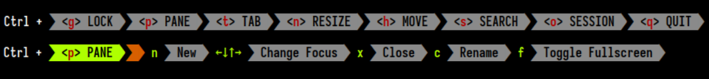
This preset should fit most users of Zellij. In it, all modes are accessible from the basic "normal" mode in which the user spends most of their time. One can enterPane mode by pressing Ctrl p and then have access to all commands inside pane mode (eg. n to open a new pane or x to close the focused pane).
The Unlock-First (non-colliding) preset
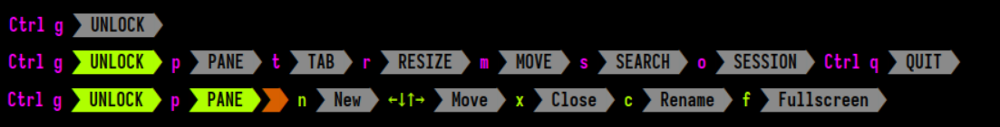
This preset is tailored to users who use terminal applications with keyboard shortcuts that collide with Zellij's own keybindings. In this preset, users "unlock" the interface before accessing the various input modes. The modes themselves can then be accessed with a single character shortcut.So for example, in order to open a new pane, the user would press: Ctrl g followed by p followed by n. The Zellij maintainers found that after a short adjustment period, this is a fast, efficient and most importantly mentally-consistent way of interacting with the application.
How to switch between presets?
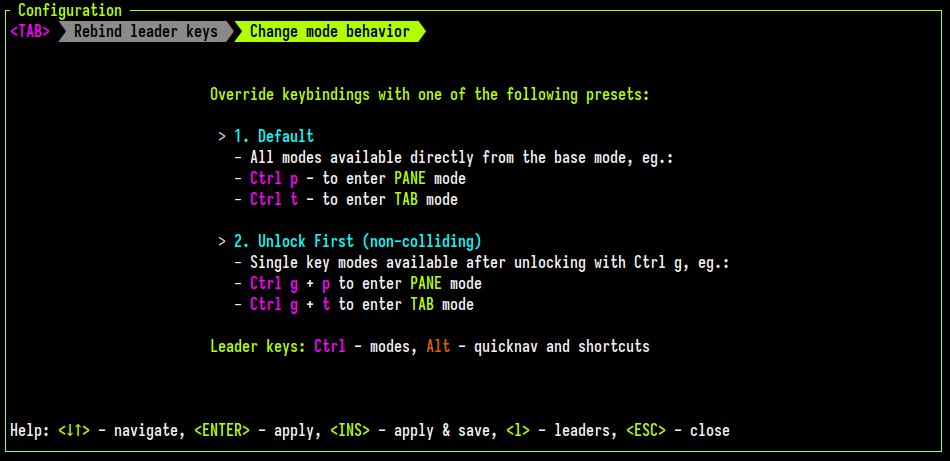
Switching between these presets is possible with theConfiguration screen. Accessible with:
Ctrl o+cin the default presetCtrl g+o+cin theUnlock-Firstpreset
The configuration screen overrides the current keybindings with those of the selected preset. Either temporarily just for the relevant session, or permanently by writing them to the configuration file.
Choosing between the two is also an option given to users on the first-run of Zellij if they do not already have a configuration file in place.
Changing Modifiers
Zellij uses two different modifiers to distinguish between two main sets of actions.
The Primary Modifier (default: Ctrl)
This modifier is used to access the different modes (eg. Pane and Tab). Its exact usage depends on one's preset.
The Secondary Modifier (default: Alt)
This modifier is used for common shortcuts (eg. Alt n to open a new pane or Alt f to toggle floating panes).
Rebinding Modifiers
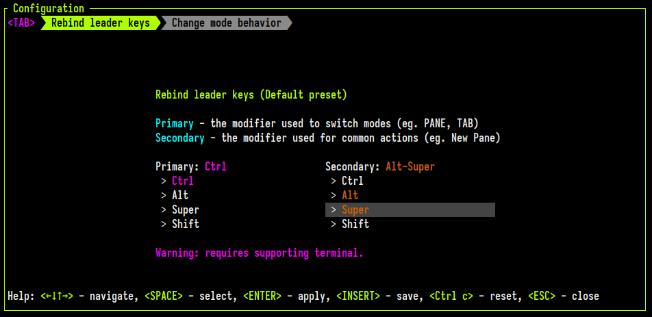
Other than manually configuring keybindings, modifiers can be changed without overriding the current configuration through theConfiguration screen, accessible with:
Ctrl o+cin the default presetCtrl g+o+cin theUnlock-Firstpreset
For the Unlock-First preset, one can change the Unlock Toggle entirely.
A note about multiple modifiers
While it's certainly possible to change these modifiers to Ctrl Alt, Super or even Ctrl Shift Alt - these all require the usage of a terminal emulator which itself supports multiple modifiers. Examples include: Alacritty, WezTerm and foot.
Configuration
Zellij uses KDL as its configuration language.
Quickstart:
mkdir ~/.config/zellij
zellij setup --dump-config > ~/.config/zellij/config.kdl
Note: In most cases, Zellij will create the above file automatically on first run. Be sure to check if it exists first.
Where does Zellij look for the config file?
By default Zellij will look for config.kdl in the config directory.
Zellij will search for the config directory as follows:
-
--config-dirflag -
ZELLIJ_CONFIG_DIRenv variable -
$HOME/.config/zellij -
default location
- Linux:
/home/alice/.config/zellij - Mac:
/Users/Alice/Library/Application Support/org.Zellij-Contributors.Zellij
- Linux:
-
system location (
/etc/zellij)
How to bypass the config file?
In order to pass a config file directly to zellij:
zellij --config [FILE]
or use the ZELLIJ_CONFIG_FILE environment variable.
To start without loading configuration from default directories:
zellij options --clean
How do I update the config file for running sessions?
Zellij actively watches for changes in the active configuration file. Most fields will be applied immediately without the need for a restart. Otherwise, this will be mentioned in the commentary of the relevant field.
Options
Configuration options can be set directly at the root of the configuration file
These include:
- on_force_close
- simplified_ui
- default_shell
- pane_frames
- theme
- theme_dark
- theme_light
- default_layout
- default_mode
- mouse_mode
- scroll_buffer_size
- copy_command
- copy_clipboard
- copy_on_select
- scrollback_editor
- mirror_session
- layout_dir
- theme_dir
- env
- rounded_corners
- hide_session_name
- auto_layout
- styled_underlines
- session_serialization
- pane_viewport_serialization
- scrollback_lines_to_serialize
- serialization_interval
- disable_session_metadata
- stacked_resize
- show_startup_tips
- show_release_notes
- post_command_discovery_hook
- web_server
- web_server_ip
- web_server_port
- web_server_cert
- web_server_key
- enforce_https_on_localhost
- base_url
- web_client
- advanced_mouse_actions
- default_cwd
- osc8_hyperlinks
- session_name
- attach_to_session
- support_kitty_keyboard_protocol
- web_sharing
- mouse_hover_effects
- visual_bell
- focus_follows_mouse
- mouse_click_through
on_force_close
Choose what to do when zellij receives SIGTERM, SIGINT, SIGQUIT or SIGHUP eg. when terminal window with an active zellij session is closed
Options:
- detach (Default)
- quit
on_force_close "quit"
simplified_ui
Send a request for a simplified ui (without arrow fonts) to plugins
Options:
- true
- false (Default)
simplified_ui true
default_shell
Choose the path to the default shell that zellij will use for opening new panes
Default: $SHELL
default_shell "fish"
pane_frames
Toggle between having pane frames around the panes
Options:
- true (default)
- false
pane_frames true
theme
Choose the Zellij color theme. This theme must be specified in the themes section or loaded from the themes folder. See themes
Default: default
theme "default"
theme_dark
Name of the theme to use as the "dark" theme. Used by the SetDarkTheme / ToggleTheme actions, and applied automatically when the host terminal reports it is in dark mode (CSI 2031 / DSR 997). The named theme must be specified in the themes section or loaded from the themes folder. See themes
theme_dark "catppuccin-mocha"
theme_light
Name of the theme to use as the "light" theme. Used by the SetLightTheme / ToggleTheme actions, and applied automatically when the host terminal reports it is in light mode (CSI 2031 / DSR 997). The named theme must be specified in the themes section or loaded from the themes folder. See themes
theme_light "catppuccin-latte"
default_layout
The name of the layout to load on startup (must be in the layouts folder). See layouts
Default: "default"
default_layout "compact"
default_mode "locked"
Choose the mode that zellij uses when starting up.
Default: normal
default_mode "locked"
mouse_mode
Toggle enabling the mouse mode. On certain configurations, or terminals this could potentially interfere with copying text.
Options:
- true (default)
- false
mouse_mode false
scroll_buffer_size
Configure the scroll back buffer size This is the number of lines zellij stores for each pane in the scroll back buffer. Excess number of lines are discarded in a FIFO fashion.
Valid values: positive integers
Default value: 10000
scroll_buffer_size 10000
copy_command
Provide a command to execute when copying text. The text will be piped to the stdin of the program to perform the copy. This can be used with terminal emulators which do not support the OSC 52 ANSI control sequence that will be used by default if this option is not set.
Examples:
copy_command "xclip -selection clipboard" // x11
copy_command "wl-copy" // wayland
copy_command "pbcopy" // osx
copy_clipboard
Choose the destination for copied text Allows using the primary selection buffer (on x11/wayland) instead of the system clipboard. Does not apply when using copy_command.
Options:
- system (default)
- primary
copy_clipboard "primary"
copy_on_select
Enable or disable automatic copy of selection when releasing mouse
Default: true
copy_on_select false
scrollback_editor
Path to the default editor to use to edit pane scrollbuffer as well as the CLI and layout edit commands
Default: $EDITOR or $VISUAL
scrollback_editor "/usr/bin/vim"
mirror_session
When attaching to an existing session with other users, should the session be mirrored (true) or should each user have their own cursor (false) Default: false
mirror_session true
layout_dir
The folder in which Zellij will look for layouts
layout_dir "/path/to/my/layout_dir"
theme_dir
The folder in which Zellij will look for themes
theme_dir "/path/to/my/theme_dir"
env
A key -> value map of environment variables that will be set for each terminal pane Zellij starts.
env {
RUST_BACKTRACE 1
FOO "bar"
}
rounded_corners
Set whether the pane frames (if visible) should have rounded corners.
This config variable is set differently than others:
ui {
pane_frames {
rounded_corners true
}
}
hide_session_name
Hides the session name (randomly generated or otherwise) from the UI
ui {
pane_frames {
hide_session_name true
}
}
auto_layout
Toggle between having Zellij lay out panes according to a predefined set of layouts whenever possible Options:
- true (default)
- false
auto_layout true
styled_underlines
Toggle between supporting the extended "styled_underlines" ANSI protocol and ignoring it (can sometimes cause some issues in unsupported terminals). Options:
- true (default)
- false
styled_underlines true
session_serialization
If enabled, sessions will be serialized to the cache folder (and thus become resurrectable between reboots or on exit). Read more about session resurrection. Options:
- true (default)
- false
session_serialization true
pane_viewport_serialization
If enabled along with session_serialization, the pane viewport (the visible part of the terminal excluding the scrollback) will be serialized and resurrectable as well. Read more about session resurrection.
Options:
- true
- false (default)
pane_viewport_serialization true
scrollback_lines_to_serialize
When pane_viewport_serialization is enabled, setting scrollback_lines_to_serialize to 0 in the will serialize all scrollback and to any other number will serialize line number up to that scrollback. Read more about session resurrection.
Note: this might incur higher resource utilization (and certainly a higher cache folder usage...)
Options:
0: serialize all scrollbackint: serialize this much lines for each pane (max is the scrollback limit)
pane_viewport_serialization 100
serialization_interval
How often in seconds sessions are serialized to disk (if session_serialization is enabled).
Note: this might incur higher resource utilization (and certainly a higher cache folder usage...)
Options:
int: the interval in seconds
serialization_interval 60
disable_session_metadata
Enable or disable writing of session metadata to disk
Note: If disabled, other sessions might not know metadata info on this session, so features such as the session-manager and session listing might not work properly.
Options:
- true
- false (default)
disable_session_metadata true
stacked_resize
Attempt to stack panes with their neighbors when resizing non-directionally (by default Alt+/-).
Options:
- true (default)
- false
stacked_resize true
show_startup_tips
Show usage tips on Zellij startup. These can also be browsed through the about plugin with Ctrl o + a and then ?.
Options:
- true (default)
- false
show_startup_tips true
show_release_notes
Show release notes on first run of a new version. These can also be browsed through the about plugin with Ctrl o + a.
Options:
- true (default)
- false
show_release_notes true
post_command_discovery_hook
When Zellij attempts to discover commands running inside panes so that it can serialize them, it can sometimes be inaccurate. This can happen when (for example) commands are run inside some sort of wrapper. To get around this, it's possible to define a post_command_discovery_hook. This is a command that will run in the context of te user's default shell and be provided the $RESURRECT_COMMAND that has just been discovered for a specific pane and not yet serialized. Whatever this command sends over STDOUT will be serialized in place of the discovered command.
Example:
post_command_discovery_hook "echo \"$RESURRECT_COMMAND\" | sed 's/^sudo\\s\\+//'" // strip sudo from commands
web_server
Whether to start the Zellij web-server on startup.
Options:
- true
- false (default)
web_server_ip
The IP for the Zellij web-server to listen on when it's started. Default: 127.0.0.1.
web_server_port
The port for the Zellij web-server to listen on when it's started. Default: 8082.
web_server_cert
The path to the SSL certificate for the Zellij web-server. Note: the web_server_key must also be present for the server to serve itself as HTTPS.
web_server_key
The path to the private_key of te SSL certificate for the Zellij web-server. Note: the web_server_cert must also be present for the server to serve itself as HTTPS.
enforce_https_on_localhost
Whether to enforce https on localhost for the Zellij web-server. This is always enforced when listening on non-localhost addresses.
base_url
Set the base URL path for the Zellij web-server. When set, the web server serves all content under this path prefix. This is useful when running behind a reverse proxy that serves Zellij under a subpath.
Default: none (served at root "/")
web_client {
base_url "/zellij"
}
web_client
Configuration having to do with the in-browser terminal of the Zellij web client (eg. colors, font). For more info, please see: web-server.
Options: - true - false (default)
advanced_mouse_actions
Whether to enable mouse hover effects, multiple select functionality (pane grouping), and mouse-based pane resizing.
When enabled, the following mouse interactions are available:
- Drag tiled pane borders: Click and drag the border between tiled panes to resize them
- Ctrl+Drag floating pane borders: Hold Ctrl and drag the border of a floating pane to resize it
- Ctrl+ScrollWheel: Hold Ctrl and scroll the mouse wheel up or down to resize the focused pane (increases/decreases size by approximately 5 cells)
These interactions are shown as help text in the pane frame when hovering near resizable borders.
Options: - true (default) - false
default_cwd
Set the default current working directory for new panes. When set, new panes will open in this directory unless otherwise specified.
default_cwd "/home/user/projects"
osc8_hyperlinks
Enable clickable OSC8 hyperlink output in terminal panes. When enabled, programs that emit OSC8 escape sequences will produce clickable hyperlinks.
Options:
- true
- false (default)
osc8_hyperlinks true
session_name
Set the name of the session to create when starting Zellij. If not set, a random name will be generated.
session_name "my-session"
attach_to_session
If a session with the name specified in session_name already exists, attach to it instead of creating a new one.
Options:
- true
- false (default)
attach_to_session true
support_kitty_keyboard_protocol
Enable support for the Kitty keyboard protocol. This allows for more detailed key reporting from the terminal. Defaults to true if the terminal supports it.
Options:
- true (default if terminal supports it)
- false
support_kitty_keyboard_protocol true
web_sharing
Whether new sessions are shared through the local web server. This is separate from web_server which controls whether the server starts at all.
Options:
- "on" - new sessions are shared by default
- "off" - new sessions are not shared by default (Default)
- "disabled" - sharing is completely disabled
web_sharing "on"
mouse_hover_effects
Enable mouse hover visual effects, such as pane frame highlight and help text when hovering over panes.
Options:
- true (default)
- false
mouse_hover_effects false
visual_bell
Show visual bell indicators when a pane sends a bell character. This manifests as a brief pane/tab frame flash and a [!] suffix on the tab name.
Options:
- true (default)
- false
visual_bell false
focus_follows_mouse
Whether to automatically focus panes when hovering over them with the mouse.
Options:
- true
- false (default)
focus_follows_mouse true
mouse_click_through
Whether clicking a pane to focus it also sends the click event into the pane (to the running program). When false, the first click only focuses the pane and is consumed by Zellij.
Options:
- true
- false (default)
mouse_click_through true
Configuring Keybindings
Zellij comes with a default set of keybindings that try to fit as many different users and use cases while trying to maximize comfort for everyone.
It is possible to add to these defaults or even override them with an external configuration. For more information about the configuration file itself, see Configuration.
Keybindings can be configured in the keybinds block of the file.
See the default keybindings as reference for the default keybindings.
keybinds {
// keybinds are divided into modes
normal {
// bind instructions can include one or more keys (both keys will be bound separately)
// bind keys can include one or more actions (all actions will be performed with no sequential guarantees)
bind "Ctrl g" { SwitchToMode "locked"; }
bind "Ctrl p" { SwitchToMode "pane"; }
bind "Alt n" { NewPane; }
bind "Alt h" "Alt Left" { MoveFocusOrTab "Left"; }
}
pane {
bind "h" "Left" { MoveFocus "Left"; }
bind "l" "Right" { MoveFocus "Right"; }
bind "j" "Down" { MoveFocus "Down"; }
bind "k" "Up" { MoveFocus "Up"; }
bind "p" { SwitchFocus; }
}
locked {
bind "Ctrl g" { SwitchToMode "normal"; }
}
}
Modes
The keybindings are divided into several modes. Each mode has its separate keybindings.
eg.
keybinds {
normal {
// keybindings available in normal mode
}
pane {
// keybindings available in pane mode
}
}
The available modes are:
- normal
- locked
- resize
- pane
- move
- tab
- scroll
- search
- entersearch
- renametab
- renamepane
- session
- tmux
Binding keys
Keys are bound with bind instructions inside each mode. A bind instruction consists of a list of keys to be bound, as well as a list of actions to be bound to each of those keys.
Note: All actions will be performed with no sequential guarantees.
eg.
// bind the Alt-n to open a new pane
bind "Alt n" { NewPane; }
// bind both the "h" key and the left-arrow key to move pane focus left
bind "h" "Left" { MoveFocus "Left"; }
// bind the "f" key to toggle the focused pane full-screen and switch to normal mode
bind "f" { ToggleFocusFullscreen; SwitchToMode "Normal"; }
Overriding keys
When configured, keybindings override the default keybinds of the application individually (if a certain key was bound in the configuration, it overrides that key in the default configuration).
It's possible to explicitly unbind a key:
keybinds {
unbind "Ctrl g" // unbind in all modes
normal {
unbind "Alt h" "Alt n" // unbind one or more keys in a specific mode
}
}
It's also possible to use the special clear-defaults=true attribute either globally or in a specific mode:
keybinds clear-defaults=true { // will clear all default keybinds
normal {
// ...
}
}
keybinds {
normal clear-defaults=true { // will clear all keybinds in normal mode
// ...
}
}
Keys
Keys are defined in a single quoted string, with space delimiting modifier keys.
bind "a" // bind the individual character a
bind "Ctrl a" // bind a with the ctrl modifier
bind "Alt a" // bind a with the alt modifier
bind "Ctrl Alt a" // bind a with the multiple "ctrl alt" modifier
bind "F8" // bind the F8 key
bind "Left" // bind the left arrow key
-
Possible keys
- digits or lowercase characters (eg.
a) - function keys 1-12 (eg.
F1) BackspaceLeft(left-arrow key)Right(right-arrow key)Up(up-arrow key)Down(down-arrow key)BackspaceHomeEndPageUpPageDownTabDeleteInsertSpaceEnterEsc
- digits or lowercase characters (eg.
-
Possible modifiers
CtrlAltShiftSuper
A note about multiple and special modifiers
Some modifiers (eg. Super), multiple modifiers (eg. Ctrl Alt) as well as certain key combinations require support from the terminal emulator as well. Example of supporting terminals are: Alacritty, WezTerm and foot.
Possible Actions
Clear
Clear the scrollback buffer of the focused pane
Possible arguments: None
eg.
bind "a" { Clear; }
Copy
Copy the current text selection to the clipboard
Possible arguments: None
bind "a" { Copy; }
BreakPane
Break the focused pane out of its current tab into a new tab
Possible arguments: None
eg.
bind "a" { BreakPane; }
BreakPaneLeft
Break the focused pane out into a new tab to the left of the current tab
Possible arguments: None
eg.
bind "a" { BreakPaneLeft; }
BreakPaneRight
Break the focused pane out into a new tab to the right of the current tab
Possible arguments: None
eg.
bind "a" { BreakPaneRight; }
CloseFocus
Close the focused pane
Possible arguments: None
eg.
bind "a" { CloseFocus; }
CloseTab
Close the focused tab
Possible arguments: None
eg.
bind "a" { CloseTab; }
Detach
Detach from the current session, leaving it running in the background
Possible arguments: None
eg.
bind "a" { Detach; }
DumpScreen
Dump the contents of the focused pane, including its entire scrollback, to the specified file.
Required arguments: A path to a file on the hard-drive
Optional arguments: full - true or false (include full scrollback, default is false), ansi - true or false (preserve ANSI styling, default is false)
eg.
bind "a" { DumpScreen "/tmp/my-dump.txt"; }
EditScrollback
Edit the scrollback of the currently focused pane with the user's default editor.
Optional arguments (in child block):
ansi-trueorfalse(preserve ANSI styling in the scrollback dump, default isfalse)
bind "a" { EditScrollback; }
or with ANSI styling preserved:
bind "a" { EditScrollback { ansi true; } }
FocusNextPane
Change focus to the next pane (order not guaranteed)
Possible arguments: None
bind "a" { FocusNextPane; }
FocusPreviousPane
Change focus to the previous pane (order not guaranteed)
Possible arguments: None
bind "a" { FocusPreviousPane; }
GoToNextTab
Change focus to the next tab
Possible arguments: None
bind "a" { GoToNextTab; }
GoToPreviousTab
Change focus to the previous tab
Possible arguments: None
bind "a" { GoToPreviousTab; }
GoToTab
Change focus to a tab with a specific index
Required arguments: numeric tab index (eg. 1)
bind "a" { GoToTab 1; }
HalfPageScrollDown
Scroll the focused pane half a page down
Possible arguments: None
bind "a" { HalfPageScrollDown; }
HalfPageScrollUp
Scroll the focused pane half a page up
Possible arguments: None
bind "a" { HalfPageScrollUp; }
HideFloatingPanes
Hide all floating panes in the current (or specified) tab
Possible arguments: An optional tab index (integer)
bind "a" { HideFloatingPanes; }
or:
bind "a" { HideFloatingPanes 2; }
LaunchOrFocusPlugin
Launch a plugin if it is not already loaded somewhere in the session, focus it if it is
Required arguments: The plugin URL (eg. file:/path/to/my/plugin.wasm)
Optional arguments:
floating-trueorfalse(default isfalse)in_place-trueorfalse(open in place of the focused pane, default isfalse)close_replaced_pane-trueorfalse(when usingin_place, close the replaced pane instead of suspending it, default isfalse)move_to_focused_tab-trueorfalse(if the plugin is already running, move it to the focused tab, default isfalse)skip_plugin_cache-trueorfalse(skip the plugin cache and force reloading, default isfalse)
bind "a" {
LaunchOrFocusPlugin "zellij:strider" {
floating true
}
}
or:
bind "a" {
LaunchOrFocusPlugin "zellij:strider" {
in_place true
move_to_focused_tab true
}
}
LaunchPlugin
Launch a new plugin instance. Unlike LaunchOrFocusPlugin, this always launches a new instance even if one is already running.
Required arguments: The plugin URL (eg. file:/path/to/my/plugin.wasm)
Optional arguments:
floating-trueorfalse(default isfalse)in_place-trueorfalse(open in place of the focused pane, default isfalse)close_replaced_pane-trueorfalse(when usingin_place, close the replaced pane instead of suspending it, default isfalse)skip_plugin_cache-trueorfalse(skip the plugin cache and force reloading, default isfalse)- Additional key-value pairs are passed as plugin user configuration
bind "a" {
LaunchPlugin "file:/path/to/my/plugin.wasm" {
floating true
skip_plugin_cache true
my_config_key "my_config_value"
}
}
MessagePlugin
Send a message to one or more plugins, using a pipe - meaning the plugin will be launched if it is not already running.
Required arguments: None (with no options specified, this keybind will send an empty message to all plugins)
Optional arguments::
- launch_new (true/false): force a new plugin to launch even if one is already running
- skip_cache (true/false): skip the plugin cache and force reloading (and re-download if the plugin is http), even if the plugin is already running or cached
- floating (true/false): if launching a new plugin, should it be floating or tiled
- in_place (true/false): if launching a new plugin, open it in place of the focused pane
- name (String): The name of the message
- payload (String): The payload of the message
- title (String): The pane title of the pane if launching a new plugin instance
- cwd (String): The working directory of the plugin if launching a new instance
bind "a" {
MessagePlugin "file:/path/to/my/plugin.wasm" {
name "message_name"
payload "message_payload"
cwd "/path/to/my/working/directory"
}
}
There is also MessagePluginId which sends a message to a specific running plugin by its numeric ID:
bind "a" {
MessagePluginId 42 {
name "message_name"
payload "message_payload"
}
}
MoveFocus
Move focus in a specific direction
Required arguments: Left | Right | Up | Down
bind "a" { MoveFocus "Left"; }
MoveFocusOrTab
Move focus left or right, or to the next or previous tab if on screen edge
Required arguments: Left | Right
bind "a" { MoveFocusOrTab "Left"; }
MovePane
Move the position of the focused pane in the specific direction
Required arguments: Left | Right | Up | Down
bind "a" { MovePane "Left"; }
MovePaneBackwards
Move the focused pane backwards in the layout order (the inverse of MovePane without a direction)
Possible arguments: None
bind "a" { MovePaneBackwards; }
MoveTab
Change the position of the active tab either left or right.
Required arguments: the direction, either "Left" or "Right"
bind "a" { MoveTab "Left"; }
NextSwapLayout
Change the layout of the current tab (either tiled or floating) to the next one
Possible arguments: None
bind "a" { NextSwapLayout; }
OverrideLayout
Override the layout of the active tab with the specified layout file.
Optional arguments (in child block):
layout- path to the layout filecwd- working directory for the layoutname- name of the tabretain_existing_terminal_panes-trueorfalse(keep terminal panes not fitting the new layout, default isfalse)retain_existing_plugin_panes-trueorfalse(keep plugin panes not fitting the new layout, default isfalse)apply_only_to_active_tab-trueorfalse(only apply to the active tab, default isfalse)
bind "a" {
OverrideLayout {
layout "/path/to/layout.kdl"
retain_existing_terminal_panes true
apply_only_to_active_tab true
}
}
NewPane
Open a new pane (in the specified direction)
Possible arguments: Down | Right | stacked
Behaviour without arguments: Opens a pane in the largest available space or if floating panes are visible, in the next floating pane position.
bind "a" { NewPane "Right"; }
or open a stacked pane:
bind "a" { NewPane "stacked"; }
Note: For more advanced pane creation options (floating coordinates, borderless, close-on-exit, cwd, etc.), use the Run keybinding action instead.
NewTab
Open a new tab
Possible arguments: cwd
Current working directory for the new tab, name - the name of the new tab, layout - path to the layout file to load for this tab
bind "a" { NewTab; }
or:
bind "a" {
NewTab {
cwd "/tmp"
name "My tab name"
layout "/path/to/my/layout.kdl"
}
}
PageScrollDown
Scroll the focused pane one page down
Possible arguments: None
bind "a" { PageScrollDown; }
PageScrollUp
Scroll the focused pane one page up
Possible arguments: None
bind "a" { PageScrollUp; }
PaneNameInput
Send byte input for renaming the focused pane. Typically used in the RenamePane input mode.
Required arguments: One or more integer (u8) byte values
bind "a" { PaneNameInput 0; }
PreviousSwapLayout
Change the layout of the current tab (either tiled or floating) to the previous one
Possible arguments: None
bind "a" { PreviousSwapLayout; }
Quit
Quit Zellij :(
Possible arguments: None
bind "a" { Quit; }
Resize
Resize the focused pane either in the specified direction or increase/decrease its size automatically
Required arguments: Left | Right | Up | Down | Increase | Decrease
bind "a" { Resize "Increase"; }
RenameSession
Rename the current session
Required arguments: The new session name as a string
bind "a" { RenameSession "my-new-session-name"; }
Run
Run the specified command in a new pane
Required arguments: The command to run, followed by optional arguments
Possible arguments (in child block):
cwd- current working directorydirection- the direction to open the new command pane ("Down"|"Right")floating-trueorfalse(open as a floating pane)in_place-trueorfalse(open in place of the focused pane)close_replaced_pane-trueorfalse(when usingin_place, close the replaced pane)stacked-trueorfalse(open as a stacked pane)name- name for the new paneclose_on_exit-trueorfalse(close the pane when the command exits)start_suspended-trueorfalse(start the command suspended)x,y,width,height- floating pane coordinates (whenfloatingistrue)pinned-trueorfalse(pin the floating pane, whenfloatingistrue)borderless-trueorfalse(hide the pane border)
// will run "tail -f /tmp/foo" in a pane opened below the focused one
bind "a" {
Run "tail" "-f" "foo" {
cwd "/tmp"
direction "Down"
}
}
or as a floating pane:
bind "a" {
Run "htop" {
floating true
x "10%"
y "10%"
width "80%"
height "80%"
}
}
or in place of the focused pane:
bind "a" {
Run "htop" {
in_place true
close_replaced_pane true
}
}
or as a stacked pane:
bind "a" {
Run "htop" {
stacked true
}
}
ScrollDown
Scroll the focused pane down 1 line
Possible arguments: None
bind "a" { ScrollDown; }
ScrollToBottom
Scroll the focused pane completely down
Possible arguments: None
bind "a" { ScrollToBottom; }
ScrollUp
Scroll the focused pane up 1 line
Possible arguments: None
bind "a" { ScrollUp; }
ScrollToTop
Scroll the focused pane completely up
Possible arguments: None
bind "a" { ScrollToTop; }
Search
When searching, move to the next or previous search occurrence
Required arguments: "down" | "up"
bind "a" { Search "up"; }
SearchInput
Send byte input for the search needle. Typically used in the EnterSearch input mode.
Required arguments: One or more integer (u8) byte values
bind "a" { SearchInput 0; }
SearchToggleOption
Toggle various search options on/off
Required arguments: "CaseSensitivity" | "Wrap" | "WhileWord"
bind "a" { SearchToggleOption "CaseSensitivity"; }
SetDarkTheme
Switch the theme to dark (uses the configured theme_dark).
Possible arguments: None
bind "a" { SetDarkTheme; }
SetLightTheme
Switch the theme to light (uses the configured theme_light).
Possible arguments: None
bind "a" { SetLightTheme; }
SwitchToMode
Switch the current input mode
Required arguments: See Modes
bind "a" { SwitchToMode "locked"; }
ShowFloatingPanes
Show all floating panes in the current (or specified) tab
Possible arguments: An optional tab index (integer)
bind "a" { ShowFloatingPanes; }
or:
bind "a" { ShowFloatingPanes 2; }
SwitchSession
Switch to a different named session. The session must already exist or be creatable.
Required arguments: name - the session name to switch to
Optional arguments (in child block):
tab_position- tab index to focus after switching (integer)pane_id- pane ID to focus after switching (integer)is_plugin- whether thepane_idrefers to a plugin pane (trueorfalse, default isfalse)layout- layout file path to applycwd- working directory for the session
bind "a" {
SwitchSession {
name "my-other-session"
}
}
or:
bind "a" {
SwitchSession {
name "my-session"
tab_position 0
layout "/path/to/layout.kdl"
cwd "/home/user"
}
}
TabNameInput
Send byte input for renaming the focused tab. Typically used in the RenameTab input mode.
Required arguments: One or more integer (u8) byte values
bind "a" { TabNameInput 0; }
ToggleActiveSyncTab
Toggle the syncing of input between all panes in the focused tab
Possible arguments: None
bind "a" { ToggleActiveSyncTab; }
ToggleFloatingPanes
Show/hide floating panes; if none are open, one will be opened
Possible arguments: None
bind "a" { ToggleFloatingPanes; }
ToggleFocusFullscreen
Toggle the focused pane as fullscreen on/off
Possible arguments: None
bind "a" { ToggleFocusFullscreen; }
ToggleMouseMode
Toggle mouse support on/off
Possible arguments: None
bind "a" { ToggleMouseMode; }
TogglePaneEmbedOrFloating
Float focused embedded pane or embed focused floating pane
Possible arguments: None
bind "a" { TogglePaneEmbedOrFloating; }
TogglePaneFrames
Show/hide the frames around panes (notice, these might have valuable UX info)
Possible arguments: None
bind "a" { TogglePaneFrames; }
TogglePaneInGroup
Toggle whether the focused pane is included in a pane group
Possible arguments: None
bind "a" { TogglePaneInGroup; }
TogglePanePinned
Toggle the pinned state of a floating pane. A pinned floating pane stays on top of other panes.
Possible arguments: None
bind "a" { TogglePanePinned; }
ToggleGroupMarking
Toggle group marking mode, allowing selection of multiple panes for group operations
Possible arguments: None
bind "a" { ToggleGroupMarking; }
ToggleTab
Change the tab focus
Possible arguments: None
bind "a" { ToggleTab; }
ToggleTheme
Toggle between the configured theme_dark and theme_light.
Possible arguments: None
bind "a" { ToggleTheme; }
UndoRenamePane
Undo a rename pane operation currently in progress (reverting to the previous name)
Possible arguments: None
bind "a" { UndoRenamePane; }
UndoRenameTab
Undo a rename tab operation currently in progress (reverting to the previous name)
Possible arguments: None
bind "a" { UndoRenameTab; }
Write
Write bytes to the active pane
Required arguments: the bytes to write as integers
bind "a" { Write 102 111 111; }
WriteChars
Write a string of characters to the active pane
Required arguments: the string of characters to write
bind "a" { WriteChars "hi there!"; }
Shared bindings
There are three special node types that can be used when defining keybindings:
keybinds {
shared {
// these keybindings will be present in all modes
bind "Ctrl g" { SwitchToMode "locked"; }
}
shared_except "resize" "locked" {
// these keybindings will be present in all modes except "resize" and "locked"
bind "Ctrl g" { SwitchToMode "locked"; }
}
shared_among "resize" "locked" {
// these keybindings will be present in the "resize" and "locked" modes
bind "Ctrl g" { SwitchToMode "locked"; }
}
}
Themes
Using the built-in themes
The built-in themes in Zellij can be used by setting the theme [THEME_NAME] in the configuration file. Take a look at the list of themes to see what's possible.
Theme Definition Specification
Themes in Zellij are defined according to UI components. These components are used in the various plugins that make up the Zellij interface, and can also be used dynamically in user plugins.

Structure of a theme definition
A theme definition is a KDL file (or part of one) defined as so:
themes { // a node named "themes"
dracula { // a nested node inside the "themes" node indicating the theme name
// a list of nodes defining the UI components
ribbon_unselected {
base 0 0 0
background 255 153 0
emphasis_0 255 53 94
emphasis_1 255 255 255
emphasis_2 0 217 227
emphasis_3 255 0 255
}
// ...
}
}
It can either be placed directly in the main configuration file or in a separate directory.
Theme UI Components
Components have the following attributes, each one including a space separated list of three numbers representing the RGB color.
base- the base color of the componentbackground- the background color of the componentemphasis_0,emphasis_1,emphases_2,emphasis_3- the color of text emphases inside the text. These are used either to differentiate whole text components one from another (with each having a full color of one of the emphases), or even combined in a single component (eg. when indicating indices in fuzzy find results). Not all of these are used in the base UI, but they might be used in user plugins.
Following is the list of available component specifications:
text_unselected
This component refers to the bare text parts of the Zellij UI (for example, the Ctrl or Alt modifier indications in the status-bar).
text_selected
This component refers to the bare text parts of the Zellij UI when they need to indicate selection (eg. when paging through search results). This is often done by providing them a different color background than their unselected counterparts.
ribbon_unselected
Ribbons are used often in the Zellij UI, examples are the tabs and the keybinding modes in the status bar.
ribbon_selected
Selected ribbons are often indicated with a different color than their unselected counterparts (eg. the focused tab, or the active keybinding mode in the status bar).
table_title
The table UI component has a different style applied to its title line than the rest of the table. This is what differentiates this line.
table_cell_unselected
The style of an unselected cell in a table. Cells can be specified as selected or unselected individually, but it is often the case that a full table line is specified to have selected or unselected cells.
table_cell_selected
Often differentiated from its unselected counterpart by changing its background color.
list_unselected
A line item in a nested list, it can be arbitrarily indented. Its indentation indication is not included in the item specification.
list_selected
Often differentiated from its unselected counterpart with a different background color.
frame_unselected
The frame around the other non-focused panes.
frame_selected
The frame around the focused pane.
frame_highlight
This is the frame around the focused pane when the user enters a mode other than the base mode (eg. PANE or TAB mode).
exit_code_success
The color of the exit code indication (here, only the base part of the specification is used, the rest are reserved for future use). These can be seen in command panes (eg. when using zellij run) after the command exited successfully.
exit_code_error
The color of the exit code indication (here, only the base part of the specification is used, the rest are reserved for future use). These can be seen in command panes (eg. when using zellij run) after the command exited with an error.
multiplayer_user_colors
This is the only theme section that is different from the rest of the UI components and is defined thus:
multiplayer_user_colors {
player_1 255 0 255
player_2 0 217 227
player_3 0
player_4 255 230 0
player_5 0 229 229
player_6 0
player_7 255 53 94
player_8 0
player_9 0
player_10 0
}
Each player represents the color given to a user joining (attaching) to an active session. These colors appear the same to all users and are given by order of attaching.
Getting Zellij to pick up the theme
While developing and iterating over a theme, the easiest way would be to define it directly in the main configuration file (add the themes block defined above with your theme) and then set the:
theme "your_theme_name"
directive above or below it. This way, Zellij will pick up on any changes to the theme in real time and you will not have to restart the session to see your changes.
Otherwise, it's possible to define themes in separate files under the themes folder located in CONFIG_DIR/themes. You can find the exact location of this folder with zellij setup --check.
Themes can also be loaded from the command line when starting Zellij:
zellij options --theme [NAME]
Example Themes
Here are some example themes these are the themes that come built-in with Zellij and can be freely used for inspiration and to kick off your own theme definition.
Example Plugin with all UI components
While developing a theme, it might be helpful to load the following plugin: https://github.com/imsnif/theme-tester
This will display all UI components and all their permutations, allowing you to see how your changes affect them in real time.
List of Themes
These themes are provided built-in with Zellij. One can switch to them by changing the theme configuration option
Dark Themes
- ansi
- ao
- atelier-sulphurpool
- ayu_mirage
- ayu_dark
- catppuccin-frappe
- catppuccin-macchiato
- cyber-noir
- blade-runner
- retro-wave
- dracula
- everforest-dark
- gruvbox-dark
- iceberg-dark
- kanagawa
- lucario
- menace
- molokai-dark
- night-owl
- nightfox
- nord
- one-half-dark
- onedark
- solarized-dark
- tokyo-night-dark
- tokyo-night-storm
- tokyo-night
- vesper
Light Themes
- ayu_light
- catppuccin-latte
- everforest-light
- gruvbox-light
- iceberg-light
- dayfox
- pencil-light
- solarized-light
- tokyo-night-light
Legacy Themes
This file defines the original Zellij theme specification. It is still supported, but new themes should be written in the new spec defined at the root of this section.
Truecolor themes
themes {
dracula {
fg 248 248 242
bg 40 42 54
black 0 0 0
red 255 85 85
green 80 250 123
yellow 241 250 140
blue 98 114 164
magenta 255 121 198
cyan 139 233 253
white 255 255 255
orange 255 184 108
}
}
256 color themes
themes {
default {
fg 1
bg 10
black 20
red 30
green 40
yellow 50
blue 60
magenta 70
cyan 80
white 90
orange 254
}
}
Hexadecimal color themes
themes {
nord {
fg "#D8DEE9"
bg "#2E3440"
black "#3B4252"
red "#BF616A"
green "#A3BE8C"
yellow "#EBCB8B"
blue "#81A1C1"
magenta "#B48EAD"
cyan "#88C0D0"
white "#E5E9F0"
orange "#D08770"
}
}
Command Line Configuration Options
In addition to the configuration file, zellij can also be configured through the command line when running it. These options will override options in the configuration file.
Migration Note: The
--disable-mouse-modeand--no-pane-framesflags have been removed. Use--mouse-mode false(equivalent of--disable-mouse-mode) and--pane-frames false(equivalent of--no-pane-frames) instead.
USAGE:
zellij options [OPTIONS]
OPTIONS:
--attach-to-session <ATTACH_TO_SESSION>
Whether to attach to a session specified in "session-name" if it exists [possible
values: true, false]
--copy-clipboard <COPY_CLIPBOARD>
OSC52 destination clipboard [possible values: system, primary]
--copy-command <COPY_COMMAND>
Switch to using a user supplied command for clipboard instead of OSC52
--copy-on-select <COPY_ON_SELECT>
Automatically copy when selecting text (true or false) [possible values: true, false]
--default-layout <DEFAULT_LAYOUT>
Set the default layout
--default-mode <DEFAULT_MODE>
Set the default mode
--default-shell <DEFAULT_SHELL>
Set the default shell
--disable-mouse-mode
Disable handling of mouse events (REMOVED - use --mouse-mode false instead)
Print help information
--layout-dir <LAYOUT_DIR>
Set the layout_dir, defaults to subdirectory of config dir
--mirror-session <MIRROR_SESSION>
Mirror session when multiple users are connected (true or false) [possible values: true,
false]
--mouse-mode <MOUSE_MODE>
Set the handling of mouse events (true or false) Can be temporarily bypassed by the
[SHIFT] key [possible values: true, false]
--no-pane-frames
Disable display of pane frames (REMOVED - use --pane-frames false instead)
--on-force-close <ON_FORCE_CLOSE>
Set behaviour on force close (quit or detach)
--pane-frames <PANE_FRAMES>
Set display of the pane frames (true or false) [possible values: true, false]
--scroll-buffer-size <SCROLL_BUFFER_SIZE>
--scrollback-editor <SCROLLBACK_EDITOR>
Explicit full path to open the scrollback editor (default is $EDITOR or $VISUAL)
--session-name <SESSION_NAME>
The name of the session to create when starting Zellij
--simplified-ui <SIMPLIFIED_UI>
Allow plugins to use a more simplified layout that is compatible with more fonts (true
or false) [possible values: true, false]
--theme <THEME>
Set the default theme
--theme-dir <THEME_DIR>
Set the theme_dir, defaults to subdirectory of config dir
Migrating from old YAML layouts / configs
Starting from Zellij 0.32.0, Zellij uses KDL layouts as described in these documents.
Up until this version, Zellij used YAML configuration files.
As a matter of convenience, when Zellij is run with an old configuration / layout / theme file (either explicitly with a cli flag or if it found the file in the default locations) it will prompt the user and convert that file to the new format.
This can also be done manually:
$ zellij convert-config /path/to/my/config.yaml > /path/to/my/config.kdl
$ zellij convert-layout /path/to/my/layout.yaml > /path/to/my/layout.kdl
$ zellij convert-theme /path/to/my/theme.yaml > /path/to/my/theme.kdl
Controlling Zellij through the CLI
Zellij can be controlled through the CLI. Whether inside or outside a zellij session, one can issue commands from the terminal to interact with any session running on the machine.
eg.
$ zellij action new-pane
Commands can also be issued to a different Zellij session:
$ zellij --session pretentious-cat action new-pane
- Zellij Run & Edit - Launch commands in new panes or open files in your default editor
- Zellij Action - Full reference of all
zellij actionsubcommands for controlling panes, tabs, layouts, and more - Zellij Plugin & Pipe - Load plugins and send data to them from the command line
- Zellij Subscribe - Stream the rendered output of one or more panes to stdout in real time
- Zellij Watch - Watch a session in read-only mode
- CLI Recipes & Scripting - Task-oriented examples and common workflows for scripting with Zellij
- Programmatic Control - Patterns for non-interactive, machine-driven control of Zellij sessions
Zellij Watch
The zellij watch command provides a read-only view of a session:
$ zellij watch my-session-name
This attaches to the specified session in read-only mode - the terminal output is visible but no input can be sent.
Completions
For convenience, zellij provides cli completions for popular shells.
You can dump these completions to STDOUT and then append them to your shell's configuration file with:
$ zellij setup --generate-completion fish
$ zellij setup --generate-completion bash
$ zellij setup --generate-completion zsh
These completions also include aliases for running a command in a new pane and editing a file in a new pane:
$ zr tail -f /path/to/my/file # open a new pane tailing this file
$ zrf htop # open a new floating pane with htop
$ ze ./main.rs # open a new pane with your editor (eg. vim) pointed at ./main.rs
See your shell's documentation for information on where to append these.
Zellij Run & Edit
- Zellij Run - Launch a command in a new pane with options for floating, blocking, and more
- Zellij Edit - Open a file in your default editor in a new pane
Zellij Run
Zellij includes a top-level run command that can be used to launch a new Zellij pane running a specific command:
eg.
$ zellij run -- git diff
OPTIONS:
-b, --borderless <BORDERLESS> start this pane without a border (warning: will make it
impossible to move with the mouse) [possible values: true,
false]
--block-until-exit Block until the command exits (regardless of exit status) OR
its pane has been closed
--block-until-exit-failure Block until the command exits with failure (non-zero exit
status) OR its pane has been closed
--block-until-exit-success Block until the command exits successfully (exit status 0) OR
its pane has been closed
--blocking Block until the command has finished and its pane has been
closed
-c, --close-on-exit Close the pane immediately when its command exits
--close-replaced-pane Close the replaced pane instead of suspending it (only
effective with --in-place)
--cwd <CWD> Change the working directory of the new pane
-d, --direction <DIRECTION> Direction to open the new pane in
-f, --floating Open the new pane in floating mode
-h, --help Print help information
--height <HEIGHT> The height if the pane is floating as a bare integer (eg. 1)
or percent (eg. 10%)
-i, --in-place Open the new pane in place of the current pane, temporarily
suspending it
-n, --name <NAME> Name of the new pane
--near-current-pane if set, will open the pane near the current one rather than
following the user's focus
--pinned <PINNED> Whether to pin a floating pane so that it is always on top
-s, --start-suspended Start the command suspended, only running after you first
presses ENTER
--stacked
--width <WIDTH> The width if the pane is floating as a bare integer (eg. 1) or
percent (eg. 10%)
-x, --x <X> The x coordinates if the pane is floating as a bare integer
(eg. 1) or percent (eg. 10%)
-y, --y <Y> The y coordinates if the pane is floating as a bare integer
(eg. 1) or percent (eg. 10%)
Note: to shorten this command to a more friendly length, see Completions under: CLI
This new pane will not immediately close when the command exits. Instead, it will show its exit status on the pane frame and allow users to press <ENTER> to re-run the command inside the same pane, or <Ctrl-c> to close the pane.
We feel this is a new and powerful way to interact with the command line.
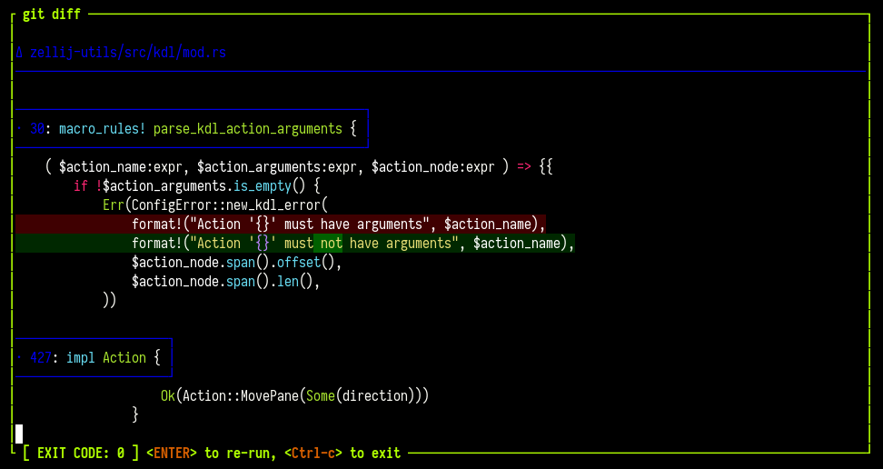
Zellij Edit
It's possible to open your default editor pointed at a file in a new Zellij pane.
This can be useful to save time instead of opening a new pane and starting your default editor inside it manually.
eg.
$ zellij edit ./main.rs # open main.rs in a new pane
$ zellij edit --floating ./main.rs # open main.rs in a new floating pane
$ zellij edit ./main.rs --line-number 10 # open main.rs pointed at line number 10
Possible Options:
-b, --borderless <BORDERLESS> start this pane without a border (warning: will make it
impossible to move with the mouse) [possible values: true,
false]
--close-replaced-pane Close the replaced pane instead of suspending it (only
effective with --in-place)
--cwd <CWD> Change the working directory of the editor
-d, --direction <DIRECTION> Direction to open the new pane in
-f, --floating Open the new pane in floating mode
-h, --help Print help information
--height <HEIGHT> The height if the pane is floating as a bare integer (eg. 1)
or percent (eg. 10%)
-i, --in-place Open the new pane in place of the current pane, temporarily
suspending it
-l, --line-number <LINE_NUMBER> Open the file in the specified line number
--near-current-pane if set, will open the pane near the current one rather than
following the user's focus
--pinned <PINNED> Whether to pin a floating pane so that it is always on top
--width <WIDTH> The width if the pane is floating as a bare integer (eg. 1)
or percent (eg. 10%)
-x, --x <X> The x coordinates if the pane is floating as a bare integer
(eg. 1) or percent (eg. 10%)
-y, --y <Y> The y coordinates if the pane is floating as a bare integer
(eg. 1) or percent (eg. 10%)
Note: The default editor is anything set in $EDITOR or $VISUAL - alternatively, it can be set explicitly with the scrollback_editor configuration option.
Another Note: To shorten this command, see Cli Completions
CLI Actions
A note about pane ids: Since terminal panes and plugin panes can have overlapping IDs, they are differentiated by prefixing the pane type, eg. terminal_1 is a different pane than plugin_1. The ID of terminal panes is the same one that can be discovered through the ZELLIJ_PANE_ID environment variable. When a --pane-id flag accepts a pane id, it can be specified as terminal_1, plugin_2, or just 3 (equivalent to terminal_3).
- are-floating-panes-visible
- change-floating-pane-coordinates
- clear
- close-pane
- close-tab
- close-tab-by-id
- current-tab-info
- detach
- dump-layout
- dump-screen
- edit
- edit-scrollback
- focus-next-pane
- focus-pane-id
- focus-previous-pane
- go-to-next-tab
- go-to-previous-tab
- go-to-tab
- go-to-tab-by-id
- go-to-tab-name
- half-page-scroll-down
- half-page-scroll-up
- hide-floating-panes
- launch-or-focus-plugin
- launch-plugin
- list-clients
- list-panes
- list-tabs
- move-focus
- move-focus-or-tab
- move-pane
- move-pane-backwards
- move-tab
- new-pane
- new-tab
- next-swap-layout
- override-layout
- page-scroll-down
- page-scroll-up
- paste
- pipe
- previous-swap-layout
- query-tab-names
- rename-pane
- rename-session
- rename-tab
- rename-tab-by-id
- resize
- save-session
- scroll-down
- scroll-to-bottom
- scroll-to-top
- scroll-up
- send-keys
- set-dark-theme
- set-light-theme
- set-pane-borderless
- set-pane-color
- show-floating-panes
- start-or-reload-plugin
- stack-panes
- switch-mode
- switch-session
- toggle-active-sync-tab
- toggle-floating-panes
- toggle-fullscreen
- toggle-pane-borderless
- toggle-pane-embed-or-floating
- toggle-pane-frames
- toggle-pane-pinned
- toggle-theme
- undo-rename-pane
- undo-rename-tab
- write
- write-chars
are-floating-panes-visible
Check if floating panes are visible in the specified tab (or active tab). Prints "true" to stdout and exits 0 if visible. Prints "false" to stdout and exits 1 if not visible.
OPTIONS:
-t, --tab-id <TAB_ID> Target a specific tab by ID
eg.
$ zellij action are-floating-panes-visible
$ zellij action are-floating-panes-visible --tab-id 3
change-floating-pane-coordinates
Given a pane id, and coordinates, will change the coordinates of this pane.
ARGS: The pane id (see example below - these can be discovered through the $ZELLIJ_PANE_ID env var)
OPTIONS:
-b, --borderless <BORDERLESS> Change the border state of the pane
--height <HEIGHT> The height if the pane is floating as a bare integer (eg. 1) or
percent (eg. 10%)
-p, --pane-id <PANE_ID> The pane_id of the floating pane, eg. terminal_1, plugin_2 or 3
(equivalent to terminal_3)
--pinned <PINNED> Whether to pin a floating pane so that it is always on top
--width <WIDTH> The width if the pane is floating as a bare integer (eg. 1) or
percent (eg. 10%)
-x, --x <X> The x coordinates if the pane is floating as a bare integer (eg. 1)
or percent (eg. 10%)
-y, --y <Y> The y coordinates if the pane is floating as a bare integer (eg. 1)
or percent (eg. 10%)
eg.
zellij action change-floating-pane-coordinates --pane-id terminal_15 --height 10 --width 10 -x 10 -y 10
clear
Clear all buffers for a focused pane
OPTIONS:
-p, --pane-id <PANE_ID> Target a specific pane by ID (eg. terminal_1, plugin_2 or 3)
eg.
$ zellij action clear
$ zellij action clear --pane-id terminal_3
close-pane
Close the focused pane
OPTIONS:
-p, --pane-id <PANE_ID> Target a specific pane by ID (eg. terminal_1, plugin_2 or 3)
eg.
$ zellij action close-pane
$ zellij action close-pane --pane-id terminal_3
close-tab
Close the current tab
OPTIONS:
-t, --tab-id <TAB_ID> Target a specific tab by stable ID
eg.
$ zellij action close-tab
$ zellij action close-tab --tab-id 5
close-tab-by-id
Close a tab by its stable ID
ARGS: The tab ID (integer)
eg.
$ zellij action close-tab-by-id 5
current-tab-info
Get information about the currently active tab. Returns the tab name and ID by default.
OPTIONS:
-j, --json Output as JSON with full TabInfo
eg.
$ zellij action current-tab-info
Sample output:
name: Tab #1
id: 0
position: 0
With --json:
$ zellij action current-tab-info --json
Sample output:
{
"position": 0,
"name": "Tab #1",
"active": true,
"panes_to_hide": 0,
"is_fullscreen_active": false,
"is_sync_panes_active": false,
"are_floating_panes_visible": false,
"other_focused_clients": [],
"active_swap_layout_name": "default",
"is_swap_layout_dirty": false,
"viewport_rows": 24,
"viewport_columns": 80,
"display_area_rows": 26,
"display_area_columns": 80,
"selectable_tiled_panes_count": 2,
"selectable_floating_panes_count": 0,
"tab_id": 0,
"has_bell_notification": false,
"is_flashing_bell": false
}
detach
Detach from the current session, leaving it running in the background
eg.
$ zellij action detach
dump-layout
Dumps the current Layout of the session to STDOUT
eg.
$ zellij action dump-layout
dump-screen
Dumps the viewport of a pane to a file or to STDOUT. Optionally includes the full scrollback.
OPTIONS:
--path <PATH> File path to dump content to (if omitted, prints to STDOUT)
-f, --full Dump the pane with full scrollback
-p, --pane-id <PANE_ID> Target a specific pane by ID (if not specified, dumps the focused pane)
-a, --ansi Preserve ANSI styling in the dump output
eg.
$ zellij action dump-screen --path /tmp/screen-dump.txt
$ zellij action dump-screen --full --ansi
$ zellij action dump-screen --pane-id terminal_3 --full
edit
Open the specified file in a new zellij pane with your default EDITOR. Returns the created pane ID.
ARGS: The path to the file to open (eg. /tmp/my-file.rs)
OPTIONS:
-d, --direction <DIRECTION> Direction to open [right|down] (conflicts with --floating)
-f, --floating Open in floating mode
-i, --in-place Open in place of the focused pane
--close-replaced-pane Close the replaced pane instead of suspending (requires --in-place)
-l, --line-number <LINE_NUMBER>
--cwd <CWD> Working directory for the editor pane
-x, --x <X> X coordinate for floating pane (requires --floating)
-y, --y <Y> Y coordinate for floating pane (requires --floating)
--width <WIDTH> Width for floating pane (requires --floating)
--height <HEIGHT> Height for floating pane (requires --floating)
--pinned <PINNED> Pin the floating pane (requires --floating)
--near-current-pane Open near the current pane rather than following focus
--tab-id <TAB_ID> Target a specific tab by ID (conflicts with --in-place, --near-current-pane)
-b, --borderless <BORDERLESS> Start without a border
eg.
$ zellij action edit ./my-file.rs -f
$ zellij action edit ./my-file.rs --in-place
Note: it is also possible to issue this action without the action prefix:
eg.
$ zellij edit ./my-file.rs -f
edit-scrollback
Open the pane scrollback in your default editor
OPTIONS:
-p, --pane-id <PANE_ID> Target a specific pane by ID
-a, --ansi Preserve ANSI styling in the scrollback dump
eg.
$ zellij action edit-scrollback
$ zellij action edit-scrollback --pane-id terminal_3 --ansi
focus-next-pane
Change focus to the next pane
eg.
$ zellij action focus-next-pane
focus-pane-id
Focus a specific pane by its ID.
ARGS: The pane ID (eg. terminal_1, plugin_2, or 3 which is equivalent to terminal_3)
eg.
$ zellij action focus-pane-id terminal_1
$ zellij action focus-pane-id 3
focus-previous-pane
Change focus to the previous pane
eg.
$ zellij action focus-previous-pane
go-to-next-tab
Go to the next tab
eg.
$ zellij action go-to-next-tab
go-to-previous-tab
Go to the previous tab
eg.
$ zellij action go-to-previous-tab
go-to-tab
Go to tab with index [index]
ARGS: The tab index (eg. 1)
eg.
$ zellij action go-to-tab 1
go-to-tab-by-id
Go to a tab by its stable ID
ARGS: The tab ID (integer)
eg.
$ zellij action go-to-tab-by-id 5
go-to-tab-name
Go to tab with name [name]. When --create is used and a tab is created, outputs the new tab ID.
ARGS: The tab name (eg. "Tab #1")
OPTIONS:
-c, --create Create a tab if one does not exist
eg.
$ zellij action go-to-tab-name "Tab #1"
half-page-scroll-down
Scroll down half page in focus pane
OPTIONS:
-p, --pane-id <PANE_ID> Target a specific pane by ID
eg.
$ zellij action half-page-scroll-down
half-page-scroll-up
Scroll up half page in focus pane
OPTIONS:
-p, --pane-id <PANE_ID> Target a specific pane by ID
eg.
$ zellij action half-page-scroll-up
hide-floating-panes
Hide all floating panes in the specified tab (or active tab). Returns exit code 0 if changed, 2 if already hidden, 1 if the tab was not found.
OPTIONS:
-t, --tab-id <TAB_ID> Target a specific tab by ID
eg.
$ zellij action hide-floating-panes
$ zellij action hide-floating-panes --tab-id 3
launch-or-focus-plugin
Launch a plugin if it is not loaded somewhere in the session, focus it if it is. Returns the plugin pane ID.
ARGS: The plugin URL (eg. file:/path/to/my/plugin.wasm)
OPTIONS:
-f, --floating Open in floating mode when launching
-i, --in-place Open in place of the focused pane when launching
--close-replaced-pane Close the replaced pane (requires --in-place)
-m, --move-to-focused-tab Move the plugin to the focused tab if already running
-c, --configuration <CONFIG> Plugin configuration (key=value pairs)
-s, --skip-plugin-cache Skip the plugin cache and force reloading
--tab-id <TAB_ID> Target a specific tab by ID (conflicts with --in-place)
eg.
zellij action launch-or-focus-plugin zellij:strider --floating
zellij action launch-or-focus-plugin zellij:strider --in-place --move-to-focused-tab
launch-plugin
Launch a new plugin instance. Unlike launch-or-focus-plugin, this always launches a new instance. Returns the plugin pane ID.
ARGS: The plugin URL (eg. file:/path/to/my/plugin.wasm)
OPTIONS:
-f, --floating Open in floating mode
-i, --in-place Open in place of the focused pane
--close-replaced-pane Close the replaced pane (requires --in-place)
-c, --configuration <CONFIG> Plugin configuration (key=value pairs)
-s, --skip-plugin-cache Skip the plugin cache and force reloading
--tab-id <TAB_ID> Target a specific tab by ID (conflicts with --in-place)
eg.
zellij action launch-plugin file:/path/to/plugin.wasm --floating
list-clients
List all clients connected to the current session, their focused pane id and their running program (if it's not the default shell and if Zellij can detect it).
eg.
$ zellij action list-clients
CLIENT_ID ZELLIJ_PANE_ID RUNNING_COMMAND
1 plugin_2 zellij:session-manager
2 terminal_3 vim /tmp/my-file.txt
list-panes
List all panes in the current session with optional detail fields.
OPTIONS:
-t, --tab Include tab information
-c, --command Include running command information
-s, --state Include pane state (focused, floating, exited, etc.)
-g, --geometry Include geometry (position, size)
-a, --all Include all available fields
-j, --json Output as JSON
eg.
$ zellij action list-panes
Sample output (default):
PANE_ID TYPE TITLE
terminal_1 terminal /bin/bash
plugin_0 plugin tab-bar
terminal_2 terminal vim main.rs
With --all:
$ zellij action list-panes --all
Sample output:
TAB_ID TAB_POS TAB_NAME PANE_ID TYPE TITLE COMMAND CWD FOCUSED FLOATING EXITED X Y ROWS COLS
0 0 Tab #1 terminal_1 terminal /bin/bash bash /home/user/project true false false 0 1 24 80
0 0 Tab #1 plugin_0 plugin tab-bar zellij:tab-bar - false false false 0 0 1 80
1 1 Tab #2 terminal_2 terminal vim main.rs vim main.rs /home/user/project/src true false false 0 1 24 80
With --json:
$ zellij action list-panes --json
Sample output:
[
{
"id": 1,
"is_plugin": false,
"is_focused": true,
"is_fullscreen": false,
"is_floating": false,
"is_suppressed": false,
"title": "/bin/bash",
"exited": false,
"exit_status": null,
"is_held": false,
"pane_x": 0,
"pane_content_x": 1,
"pane_y": 1,
"pane_content_y": 2,
"pane_rows": 24,
"pane_content_rows": 22,
"pane_columns": 80,
"pane_content_columns": 78,
"cursor_coordinates_in_pane": [0, 5],
"terminal_command": null,
"plugin_url": null,
"is_selectable": true,
"tab_id": 0,
"tab_position": 0,
"tab_name": "Tab #1",
"pane_command": "bash",
"pane_cwd": "/home/user/project"
},
{
"id": 0,
"is_plugin": true,
"is_focused": false,
"is_fullscreen": false,
"is_floating": false,
"is_suppressed": false,
"title": "tab-bar",
"exited": false,
"exit_status": null,
"is_held": false,
"pane_x": 0,
"pane_content_x": 0,
"pane_y": 0,
"pane_content_y": 0,
"pane_rows": 1,
"pane_content_rows": 1,
"pane_columns": 80,
"pane_content_columns": 80,
"cursor_coordinates_in_pane": null,
"terminal_command": null,
"plugin_url": "zellij:tab-bar",
"is_selectable": false,
"tab_id": 0,
"tab_position": 0,
"tab_name": "Tab #1"
}
]
list-tabs
List all tabs with their information.
OPTIONS:
-s, --state Include state information (active, fullscreen, sync, floating visibility)
-d, --dimensions Include dimension information
-p, --panes Include pane counts
-l, --layout Include layout information (swap layout name and dirty state)
-a, --all Include all available fields
-j, --json Output as JSON
eg.
$ zellij action list-tabs
Sample output (default):
TAB_ID POSITION NAME
0 0 Tab #1
1 1 editor
2 2 logs
With --all:
$ zellij action list-tabs --all
Sample output:
TAB_ID POSITION NAME ACTIVE FULLSCREEN SYNC_PANES FLOATING_VIS VP_ROWS VP_COLS DA_ROWS DA_COLS TILED_PANES FLOAT_PANES HIDDEN_PANES SWAP_LAYOUT LAYOUT_DIRTY
0 0 Tab #1 true false false false 24 80 26 80 2 0 0 default false
1 1 editor false false false false 24 80 26 80 1 0 0 - false
2 2 logs false false false true 24 80 26 80 1 1 0 default true
With --json:
$ zellij action list-tabs --json
Sample output:
[
{
"position": 0,
"name": "Tab #1",
"active": true,
"panes_to_hide": 0,
"is_fullscreen_active": false,
"is_sync_panes_active": false,
"are_floating_panes_visible": false,
"other_focused_clients": [],
"active_swap_layout_name": "default",
"is_swap_layout_dirty": false,
"viewport_rows": 24,
"viewport_columns": 80,
"display_area_rows": 26,
"display_area_columns": 80,
"selectable_tiled_panes_count": 2,
"selectable_floating_panes_count": 0,
"tab_id": 0,
"has_bell_notification": false,
"is_flashing_bell": false
},
{
"position": 1,
"name": "editor",
"active": false,
"panes_to_hide": 0,
"is_fullscreen_active": false,
"is_sync_panes_active": false,
"are_floating_panes_visible": false,
"other_focused_clients": [],
"active_swap_layout_name": null,
"is_swap_layout_dirty": false,
"viewport_rows": 24,
"viewport_columns": 80,
"display_area_rows": 26,
"display_area_columns": 80,
"selectable_tiled_panes_count": 1,
"selectable_floating_panes_count": 0,
"tab_id": 1,
"has_bell_notification": false,
"is_flashing_bell": false
}
]
move-focus
Move the focused pane in the specified direction.
ARGS: The direction to move [right|left|up|down]
eg.
$ zellij action move-focus left
move-focus-or-tab
Move focus to the pane or tab (if on screen edge) in the specified direction
ARGS: The direction to move [right|left|up|down]
eg.
$ zellij action move-focus-or-tab left
move-pane
Change the location of the focused pane in the specified direction
ARGS (optional): The direction to move [right|left|up|down]
OPTIONS:
-p, --pane-id <PANE_ID> Target a specific pane by ID
eg.
$ zellij action move-pane left
$ zellij action move-pane --pane-id terminal_3 right
move-pane-backwards
Rotate the location of the focused pane backwards in the layout order
OPTIONS:
-p, --pane-id <PANE_ID> Target a specific pane by ID
eg.
$ zellij action move-pane-backwards
move-tab
Move the focused tab in the specified direction.
ARGS: The direction to move [right|left]
OPTIONS:
-t, --tab-id <TAB_ID> Target a specific tab by ID
eg.
$ zellij action move-tab right
$ zellij action move-tab left --tab-id 3
new-pane
Open a new pane in the specified direction or as a floating pane. If no direction is specified, will try to use the biggest available space. Returns the created pane ID.
ARGS (optional): the command to run inside the pane in place of the default shell (must be preceded by a double-dash --)
OPTIONS:
-c, --close-on-exit Close the pane immediately when its command exits
--cwd <CWD> Change the working directory of the new pane
-d, --direction <DIRECTION> Direction to open the new pane in (conflicts with --floating)
-f, --floating Open the new pane in floating mode
-i, --in-place Open in place of the focused pane (conflicts with --floating/--direction)
--close-replaced-pane Close the replaced pane instead of suspending (requires --in-place)
-n, --name <NAME> Name of the new pane
-p, --plugin <PLUGIN> Plugin URL to load (conflicts with command and --direction)
--configuration <CONFIG> Plugin configuration (requires --plugin)
--skip-plugin-cache Skip the plugin cache (requires --plugin)
-s, --start-suspended Start the command suspended
-x, --x <X> X coordinate for floating pane (requires --floating)
-y, --y <Y> Y coordinate for floating pane (requires --floating)
--width <WIDTH> Width for floating pane (requires --floating)
--height <HEIGHT> Height for floating pane (requires --floating)
--pinned <PINNED> Pin the floating pane (requires --floating)
--stacked Open in stacked mode (conflicts with --floating/--direction)
--tab-id <TAB_ID> Target a specific tab by ID (conflicts with --in-place, --near-current-pane)
-b, --blocking Block until the pane exits
--block-until-exit-success Block until the command exits with status 0
--block-until-exit-failure Block until the command exits with non-zero status
--block-until-exit Block until the command exits regardless of status
--near-current-pane Open near the current pane rather than following focus
--borderless <BORDERLESS> Start without a border
eg.
$ zellij action new-pane -f # open a new floating pane with the default shell
$ zellij action new-pane --name "follow this log!" -- tail -f /tmp/my-log-file
$ zellij action new-pane --stacked
$ zellij action new-pane --in-place -- htop
$ zellij action new-pane --plugin zellij:strider --floating
Note: This can also be shortened to zellij run
eg.
$ zellij run -- tail -f /tmp/my-log-file
new-tab
Create a new tab, optionally with a specified tab layout and name. Returns the created tab's ID.
Specifying a path to a layout file with --layout will start that tab with the specified layout.
If the --cwd flag is included with the --layout flag, all relative paths in that layout will start from this cwd. Replacing the global cwd in the layout if it exists.
See layout CWD composition for more info.
ARGS (optional): A command to run in the initial pane (must be preceded by a double-dash --, conflicts with --initial-plugin)
OPTIONS:
-c, --cwd <CWD> Working directory for the new tab
-l, --layout <LAYOUT> Layout to use
--layout-dir <LAYOUT_DIR> Default folder for layouts (requires --layout)
--layout-string <LAYOUT_STRING> Raw KDL layout string to use directly (conflicts with --layout)
-n, --name <NAME> Name of the new tab
--initial-plugin <PLUGIN> Plugin to load in the initial pane (conflicts with command)
--close-on-exit Close the initial pane when its command exits (requires command)
--start-suspended Start the command suspended (requires command)
--block-until-exit-success Block until the command exits with status 0
--block-until-exit-failure Block until the command exits with non-zero status
--block-until-exit Block until the command exits regardless of status
eg.
$ zellij action new-tab --layout /path/to/layout.kdl --name "my tab"
$ zellij action new-tab -- htop
next-swap-layout
Switch to the next swap layout for the current tab
OPTIONS:
-t, --tab-id <TAB_ID> Target a specific tab by ID
eg.
$ zellij action next-swap-layout
override-layout
Override the layout of the active tab with the specified layout file.
ARGS: Path to the layout file
OPTIONS:
--layout-dir <LAYOUT_DIR> Default folder for layouts
--layout-string <LAYOUT_STRING> Raw KDL layout string to use directly (conflicts with layout path arg)
--retain-existing-terminal-panes Retain existing terminal panes that do not fit the new layout
--retain-existing-plugin-panes Retain existing plugin panes that do not fit the new layout
--apply-only-to-active-tab Only apply the layout to the active tab
eg.
$ zellij action override-layout /path/to/layout.kdl
$ zellij action override-layout /path/to/layout.kdl --retain-existing-terminal-panes --apply-only-to-active-tab
page-scroll-down
Scroll down one page in focus pane
OPTIONS:
-p, --pane-id <PANE_ID> Target a specific pane by ID
eg.
$ zellij action page-scroll-down
page-scroll-up
Scroll up one page in focus pane
OPTIONS:
-p, --pane-id <PANE_ID> Target a specific pane by ID
eg.
$ zellij action page-scroll-up
paste
Paste text to the terminal using bracketed paste mode
ARGS: The text to paste
OPTIONS:
-p, --pane-id <PANE_ID> Target a specific pane by ID
eg.
$ zellij action paste "Hello, World!"
pipe
Send data to one or more plugins via a pipe. Plugins will be launched if they are not already running.
ARGS (optional): Payload data to send. If blank, listens on STDIN.
OPTIONS:
-n, --name <NAME> Name of the pipe
-a, --args <ARGS> Arguments for the pipe (key=value pairs)
-p, --plugin <PLUGIN> Plugin URL to direct the pipe to
-c, --plugin-configuration <CONFIG> Plugin configuration (key=value pairs)
-l, --force-launch-plugin Launch a new plugin even if one is already running
-s, --skip-plugin-cache Skip the plugin cache and force reloading
-f, --floating-plugin <BOOL> Whether the launched plugin should be floating
-i, --in-place-plugin <BOOL> Launch plugin in place (conflicts with --floating-plugin)
-w, --plugin-cwd <CWD> Working directory for the launched plugin
-t, --plugin-title <TITLE> Pane title for the launched plugin
eg.
$ zellij action pipe --name "my-pipe" --plugin "file:/path/to/plugin.wasm" "some payload"
$ echo "data from stdin" | zellij action pipe --name "my-pipe" --plugin "my-plugin-alias"
previous-swap-layout
Switch to the previous swap layout for the current tab
OPTIONS:
-t, --tab-id <TAB_ID> Target a specific tab by ID
eg.
$ zellij action previous-swap-layout
query-tab-names
Query all tab names (receive a textual list on the command line)
eg.
$ zellij action query-tab-names
rename-pane
Renames the focused pane (title will appear on the pane frame)
ARGS: the pane name
OPTIONS:
-p, --pane-id <PANE_ID> Target a specific pane by ID
eg.
$ zellij action rename-pane "alice the cat"
$ zellij action rename-pane --pane-id terminal_3 "my pane"
rename-session
Rename the current session
ARGS: The new session name
eg.
$ zellij action rename-session "my-new-session-name"
rename-tab
Renames the focused tab
ARGS: the tab name
OPTIONS:
-t, --tab-id <TAB_ID> Target a specific tab by ID
eg.
$ zellij action rename-tab "alice the cat"
$ zellij action rename-tab --tab-id 3 "my tab"
rename-tab-by-id
Rename a tab by its stable ID
ARGS: The tab ID (integer) followed by the new name (string)
eg.
$ zellij action rename-tab-by-id 5 "my new tab name"
resize
Resize the focused pane in the specified direction.
ARGS: The resize direction [right|left|up|down|+|-]
OPTIONS:
-p, --pane-id <PANE_ID> Target a specific pane by ID
eg.
$ zellij action resize left
$ zellij action resize --pane-id terminal_3 +
save-session
Save the current session state to disk immediately. Useful for triggering a manual serialization outside the automatic interval.
eg.
$ zellij action save-session
scroll-down
Scroll down 1 line in the focused pane
OPTIONS:
-p, --pane-id <PANE_ID> Target a specific pane by ID
eg.
$ zellij action scroll-down
scroll-to-bottom
Scroll down to bottom in the focused pane
OPTIONS:
-p, --pane-id <PANE_ID> Target a specific pane by ID
eg.
$ zellij action scroll-to-bottom
scroll-to-top
Scroll up to top in the focused pane
OPTIONS:
-p, --pane-id <PANE_ID> Target a specific pane by ID
eg.
$ zellij action scroll-to-top
scroll-up
Scroll up 1 line in the focused pane
OPTIONS:
-p, --pane-id <PANE_ID> Target a specific pane by ID
eg.
$ zellij action scroll-up
send-keys
Send one or more keys to the terminal. Keys are specified as space-separated names (eg. "Ctrl a", "F1", "Alt Shift b").
ARGS: One or more key names (space-separated)
OPTIONS:
-p, --pane-id <PANE_ID> Target a specific pane by ID
eg.
$ zellij action send-keys "Ctrl a"
$ zellij action send-keys --pane-id terminal_3 "Alt b" "Enter"
set-dark-theme
Switch the theme to dark (uses the configured theme_dark).
eg.
$ zellij action set-dark-theme
set-light-theme
Switch the theme to light (uses the configured theme_light).
eg.
$ zellij action set-light-theme
set-pane-borderless
Set the borderless state of a specific pane
OPTIONS (required):
-p, --pane-id <PANE_ID> Target pane by ID (required)
-b, --borderless <BORDERLESS> Whether the pane should be borderless (required)
eg.
$ zellij action set-pane-borderless --pane-id terminal_3 --borderless true
set-pane-color
Set the default foreground and/or background color of a pane. Colors can be specified as hex (eg. "#00e000") or rgb notation (eg. "rgb:00/e0/00").
OPTIONS:
-p, --pane-id <PANE_ID> Target pane by ID (defaults to $ZELLIJ_PANE_ID)
--fg <FG> Foreground color (eg. "#00e000", "rgb:00/e0/00")
--bg <BG> Background color (eg. "#001a3a", "rgb:00/1a/3a")
--reset Reset pane colors to terminal defaults (conflicts with --fg, --bg)
eg.
$ zellij action set-pane-color --fg "#00e000" --bg "#001a3a"
$ zellij action set-pane-color --pane-id terminal_3 --reset
show-floating-panes
Show all floating panes in the specified tab (or active tab). Returns exit code 0 if changed, 2 if already visible, 1 if the tab was not found.
OPTIONS:
-t, --tab-id <TAB_ID> Target a specific tab by ID
eg.
$ zellij action show-floating-panes
$ zellij action show-floating-panes --tab-id 3
start-or-reload-plugin
Launch a plugin if it is not loaded or reload it (skipping cache) if it is. Mostly useful for plugin development.
ARGS: The plugin URL (eg. file:/path/to/my/plugin.wasm)
OPTIONS:
-c, --configuration <CONFIG> Plugin configuration (key=value pairs)
eg.
zellij action start-or-reload-plugin zellij:strider
zellij action start-or-reload-plugin file:/path/to/plugin.wasm -c "key=value"
stack-panes
Given a list of pane ids, turns them into a stack. (pane ids can be discovered through the $ZELLIJ_PANE_ID env var).
ARGS: A list of panes (see example below)
eg.
# This will create a stack of 3 panes (terminal with ID 1, plugin with ID 1 and terminal with ID 2)
$ zellij action stack-panes -- terminal_1 plugin_1 terminal_2
switch-mode
Switch input mode of all connected clients
ARGS: The mode to switch to [locked|pane|tab|resize|move|search|session|tmux]
eg.
$ zellij action switch-mode locked
switch-session
Switch to a different session
ARGS: The session name to switch to
OPTIONS:
--tab-position <TAB_POSITION> Tab position to focus after switching
--pane-id <PANE_ID> Pane ID to focus after switching
-l, --layout <LAYOUT> Layout to apply when switching
--layout-dir <LAYOUT_DIR> Default folder for layouts (requires --layout)
--layout-string <LAYOUT_STRING> Raw KDL layout string to use directly (conflicts with --layout)
-c, --cwd <CWD> Working directory when switching
eg.
$ zellij action switch-session my-other-session
$ zellij action switch-session my-session --tab-position 2 --layout /path/to/layout.kdl
toggle-active-sync-tab
Toggle between sending text input to all panes in the current tab and just to the focused pane (the default)
OPTIONS:
-t, --tab-id <TAB_ID> Target a specific tab by ID
eg.
$ zellij action toggle-active-sync-tab
toggle-floating-panes
Toggle the visibility of all floating panes in the current Tab, open one if none exist
OPTIONS:
-t, --tab-id <TAB_ID> Target a specific tab by ID
eg.
$ zellij action toggle-floating-panes
toggle-fullscreen
Toggle between fullscreen focus pane and normal layout
OPTIONS:
-p, --pane-id <PANE_ID> Target a specific pane by ID
eg.
$ zellij action toggle-fullscreen
toggle-pane-borderless
Toggle the borderless state of a specific pane
OPTIONS (required):
-p, --pane-id <PANE_ID> Target pane by ID (required)
eg.
$ zellij action toggle-pane-borderless --pane-id terminal_3
toggle-pane-embed-or-floating
Embed focused pane if floating or float focused pane if embedded
OPTIONS:
-p, --pane-id <PANE_ID> Target a specific pane by ID
eg.
$ zellij action toggle-pane-embed-or-floating
toggle-pane-frames
Toggle frames around panes in the UI
Note: Zellij relies on frames to display parts of the UI, removing them might make certain things a little confusing to those not used to the app.
eg.
$ zellij action toggle-pane-frames
toggle-pane-pinned
If the current pane is a floating pane, toggle its pinned state (always on top).
OPTIONS:
-p, --pane-id <PANE_ID> Target a specific pane by ID
eg.
$ zellij action toggle-pane-pinned
toggle-theme
Toggle between the dark and light themes (uses the configured theme_dark and theme_light).
eg.
$ zellij action toggle-theme
undo-rename-pane
Remove a previously set pane name
OPTIONS:
-p, --pane-id <PANE_ID> Target a specific pane by ID
eg.
$ zellij action undo-rename-pane
undo-rename-tab
Remove a previously set tab name
OPTIONS:
-t, --tab-id <TAB_ID> Target a specific tab by ID
eg.
$ zellij action undo-rename-tab
write
Write bytes to the focused pane
ARGS: An array of bytes to write
OPTIONS:
-p, --pane-id <PANE_ID> Target a specific pane by ID
eg.
$ zellij action write 102 111 111
write-chars
Write characters to the focused pane
ARGS: A string of characters to write
OPTIONS:
-p, --pane-id <PANE_ID> Target a specific pane by ID
eg.
$ zellij action write-chars "Hi there!"
Zellij Plugin & Pipe
- Zellij Plugin - Load a plugin from a local or remote wasm file into a new pane
- Zellij Pipe - Send messages and data to one or more plugins, launching them if needed
Zellij Plugin
Zellij includes a top-level plugin cli command that can be used to launch a new Zellij plugin instance from a local or remote wasm file
eg.
$ zellij plugin -- https://path/to/my/plugin.wasm
USAGE:
zellij plugin [OPTIONS] [--] <URL>
ARGS:
<URL> Plugin URL, can either start with http(s), file: or zellij:
OPTIONS:
-c, --configuration <CONFIGURATION>
Plugin configuration
-f, --floating
Open the new pane in floating mode
-h, --help
Print help information
--height <HEIGHT>
The height if the pane is floating as a bare integer (eg. 1) or percent (eg. 10%)
-i, --in-place
Open the new pane in place of the current pane, temporarily suspending it
-s, --skip-plugin-cache
Skip the plugin cache and force reloading of the plugin (good for development)
--width <WIDTH>
The width if the pane is floating as a bare integer (eg. 1) or percent (eg. 10%)
-x, --x <X>
The x coordinates if the pane is floating as a bare integer (eg. 1) or percent (eg. 10%)
-y, --y <Y>
The y coordinates if the pane is floating as a bare integer (eg. 1) or percent (eg. 10%)
Zellij Pipe
Zellij pipes provide a way to send messages to one or more plugins, launching them on first-message if they are not running.
eg.
$ zellij plugin -- https://path/to/my/plugin.wasm
USAGE:
zellij pipe [OPTIONS] [--] <PAYLOAD>
* Send data to a specific plugin:
zellij pipe --plugin file:/path/to/my/plugin.wasm --name my_pipe_name -- my_arbitrary_data
* To all running plugins (that are listening):
zellij pipe --name my_pipe_name -- my_arbitrary_data
* Pipe data into this command's STDIN and get output from the plugin on this command's STDOUT
tail -f /tmp/my-live-logfile | zellij pipe --name logs --plugin https://example.com/my-plugin.wasm | wc -l
zellij plugin [OPTIONS] [--] <URL>
ARGS:
<PAYLOAD> The data to send down this pipe (if blank, will listen to STDIN)
OPTIONS:
-n, --name <NAME>
The name of the pipe
-a, --args <ARGS>
The args of the pipe
-p, --plugin <PLUGIN>
The plugin url (eg. file:/tmp/my-plugin.wasm) to direct this pipe to, if not specified,
will be sent to all plugins, if specified and is not running, the plugin will be
launched
-c, --plugin-configuration <PLUGIN_CONFIGURATION>
The plugin configuration (note: the same plugin with different configuration is
considered a different plugin for the purposes of determining the pipe destination)
-h, --help
Print help information
Zellij Subscribe
Zellij provides a top-level subscribe command that streams the rendered output of one or more panes to stdout in real time. This is useful for monitoring, scripting, and building external tooling around Zellij sessions.
- Usage - Command syntax
- Options - Available flags and parameters
- Output Formats - Raw text and JSON (NDJSON) output modes
- Behavior - How initial delivery, change detection, and exit work
- Subscribing to a Different Session - Monitoring panes in background or remote sessions
- Examples - Common usage patterns including
jqandawkfiltering
Usage
zellij [--session <SESSION_NAME>] subscribe [OPTIONS] --pane-id <PANE_ID>...
Options
-p, --pane-id <PANE_ID> One or more pane IDs to subscribe to (required, repeatable).
Accepts terminal_N, plugin_N, or bare integer N
(equivalent to terminal_N).
-s, --scrollback [<LINES>] Include scrollback in the initial delivery. If specified
without a value, all scrollback is included. If a number
is provided, that many lines of scrollback are included.
-f, --format <FORMAT> Output format: "raw" (default) or "json"
--ansi Preserve ANSI styling escape sequences in the output
Output Formats
Raw (default)
Viewport lines are printed to stdout each time the pane content changes, followed by a flush. On the initial delivery, scrollback lines (if requested) precede the viewport lines.
JSON
Output is delivered as NDJSON (one JSON object per line). Two event types are emitted:
Pane update:
{"event":"pane_update","pane_id":"terminal_1","viewport":["line1","line2"],"scrollback":null,"is_initial":true}
Pane closed:
{"event":"pane_closed","pane_id":"terminal_1"}
This format is well suited for piping into jq for structured processing:
$ zellij subscribe --pane-id terminal_1 --format json | jq 'select(.event == "pane_update") | .viewport[]'
Behavior
- On subscription, the full current viewport (and scrollback if requested) is delivered immediately with
is_initial: true. - Subsequent deliveries occur only when the viewport content changes. Only changed viewports are sent (no scrollback on subsequent deliveries).
- The client exits automatically when all subscribed panes have been closed or the session ends.
Subscribing to a Different Session
To subscribe to panes in a session other than the current one, use the global --session flag:
$ zellij --session my-background-session subscribe --pane-id terminal_1
This is especially useful when combined with background sessions.
Examples
Subscribe to a single pane:
$ zellij subscribe --pane-id terminal_1
Subscribe to multiple panes with ANSI styling preserved:
$ zellij subscribe --pane-id terminal_1 --pane-id plugin_2 --ansi
Include the last 100 lines of scrollback on initial delivery:
$ zellij subscribe --pane-id terminal_1 --scrollback 100
Include all scrollback:
$ zellij subscribe --pane-id terminal_1 --scrollback
Use JSON format and pipe into jq to extract viewport lines:
$ zellij subscribe --pane-id terminal_1 --format json | jq 'select(.event == "pane_update") | .viewport[]'
Use JSON format and pipe into jq to detect when a pane closes:
$ zellij subscribe --pane-id terminal_1 --format json | jq 'select(.event == "pane_closed") | .pane_id'
Filter live output for lines containing a pattern:
$ zellij subscribe --pane-id terminal_1 | awk '/ERROR/'
Or use JSON mode with jq for more structured filtering:
$ zellij subscribe --pane-id terminal_1 --format json | jq --unbuffered 'select(.event == "pane_update") | .viewport[] | select(test("ERROR"))'
Monitor a pane in a background session:
$ zellij --session build-server subscribe --pane-id terminal_1 --format json
CLI Recipes & Scripting
This page provides task-oriented examples for controlling Zellij from the command line and shell scripts. For a full reference of all available actions, see CLI Actions. For patterns oriented toward non-interactive, machine-driven control (output polling, event loops, concurrency), see Programmatic Control.
- Targeting Specific Panes and Tabs
- Sending Input to Another Pane
- Watching Pane Output in Real Time
- Starting and Controlling Background Sessions
- Scripting Pane and Tab Creation
- Inspecting Session State
- Controlling Floating Panes
- Borderless Panes
- Toggling Pane Visibility
- Changing Pane Colors
- Blocking Panes
- Scrollback and Screen Capture
- Session Management
- Working with Plugins from the CLI
- Layout Overrides at Runtime
- Inline Layouts
Targeting Specific Panes and Tabs
Many CLI actions accept --pane-id or --tab-id flags, allowing commands to be directed at specific panes or tabs without changing focus. This eliminates the need to switch focus before issuing a command.
Pane IDs
Every terminal pane exposes its ID through the $ZELLIJ_PANE_ID environment variable. Pane IDs are specified as terminal_N, plugin_N, or a bare integer N (equivalent to terminal_N).
Discover all pane IDs in the current session:
zellij action list-panes
Sample output:
PANE_ID TYPE TITLE
terminal_1 terminal /bin/bash
plugin_0 plugin tab-bar
terminal_2 terminal vim main.rs
Or as JSON for structured processing:
zellij action list-panes --json
Sample output:
[
{
"id": 1,
"is_plugin": false,
"is_focused": true,
"title": "/bin/bash",
"is_floating": false,
"tab_id": 0,
"tab_name": "Tab #1",
"pane_command": "bash",
"pane_cwd": "/home/user/project"
}
]
(JSON output includes many additional fields - see Inspecting Session State for full details)
Tab IDs
Tab IDs can be discovered with:
zellij action list-tabs
Sample output:
TAB_ID POSITION NAME
0 0 Tab #1
1 1 editor
2 2 logs
Or as JSON:
zellij action list-tabs --json
Sample output:
[
{
"position": 0,
"name": "Tab #1",
"active": true,
"tab_id": 0
}
]
(JSON output includes many additional fields - see Inspecting Session State for full details)
Or get the current tab info:
zellij action current-tab-info
Sample output:
name: Tab #1
id: 0
position: 0
Examples
Clear a specific pane without focusing it:
zellij action clear --pane-id terminal_3
Scroll to the top of a specific pane:
zellij action scroll-to-top --pane-id terminal_5
Focus a specific pane by its ID:
zellij action focus-pane-id terminal_3
Close a specific tab by its ID:
zellij action close-tab --tab-id 3
Sending Input to Another Pane
Commands can be sent directly to any pane by ID. There is no need to change focus first.
Send keystrokes to a specific pane:
zellij action send-keys --pane-id terminal_3 "Enter" "ctrl c"
Write a string of characters one-by-one to a specific pane:
zellij action write-chars --pane-id terminal_3 "echo hello"
Paste text (using bracketed paste mode) to a specific pane (faster and more robust than write-chars):
zellij action paste --pane-id terminal_3 "multi-line\ntext content"
Watching Pane Output in Real Time
The zellij subscribe command streams the rendered output of one or more panes to stdout. This is useful for monitoring builds, logs, or any running process without keeping the pane visible.
Monitor a pane's output:
zellij subscribe --pane-id terminal_1
Filter live output for errors using JSON mode and jq:
zellij subscribe --pane-id terminal_1 --format json | jq --unbuffered 'select(.event == "pane_update") | .viewport[] | select(test("ERROR"))'
Use JSON format with jq for structured processing:
zellij subscribe --pane-id terminal_1 --format json | jq 'select(.event == "pane_update") | .viewport[]'
Monitor multiple panes simultaneously:
zellij subscribe --pane-id terminal_1 --pane-id terminal_2 --format json
Starting and Controlling Background Sessions
A Zellij session can be created in the background without attaching to it. This is useful for headless workflows, CI pipelines, and scripted environments.
Create a background session:
zellij attach --create-background my-session
Create a background session with a specific layout:
zellij attach --create-background my-session options --default-layout compact
Create a background session with a custom layout file:
zellij attach --create-background my-session options --default-layout /path/to/layout.kdl
Once a background session is running, actions can be issued against it using the global --session flag:
Send keystrokes to a pane in the background session:
zellij --session my-session action paste "make build" --pane-id terminal_1 &&
zellij --session my-session action send-keys --pane-id terminal_1 "Enter"
Open a new pane in the background session:
PANE_ID=$(zellij --session my-session action new-pane)
zellij --session my-session action paste "npm test" --pane-id $PANE_ID &&
zellij --session my-session action send-keys --pane-id $PANE_ID "Enter"
Subscribe to a pane's output in the background session (see Zellij Subscribe):
zellij --session my-session subscribe --pane-id terminal_1 --format json
Dump the screen of a specific pane in the background session:
zellij --session my-session action dump-screen --pane-id terminal_1 --full
Full Scripted Workflow Example
#!/bin/bash
# Create a background session with a layout
zellij attach --create-background ci-runner options --default-layout compact
# Open a pane and capture its ID
BUILD_PANE=$(zellij --session ci-runner action new-pane --name "build")
# Start a build
zellij --session ci-runner action paste --pane-id $BUILD_PANE "cargo build 2>&1" &&
zellij --session ci-runner action send-keys --pane-id $BUILD_PANE "Enter"
# Monitor the build output for relevant lines, exit when the pane closes
zellij --session ci-runner subscribe --pane-id $BUILD_PANE --format json \
| jq --unbuffered 'select(.event == "pane_update") | .viewport[] | select(test("error|warning|Finished"))'
Scripting Pane and Tab Creation
Several CLI actions return the ID of the created pane or tab, making it possible to chain commands in scripts.
Actions that return a pane ID:
new-paneeditlaunch-pluginlaunch-or-focus-plugintoggle-floating-panes(when a new floating pane is created, this happens when no floating panes exist in that tab)show-floating-panes(when a new floating pane is created, this happens when no floating panes exist in that tab)
Actions that return a tab ID:
new-tabgo-to-tab-name --create(when a new tab is created)
Capture a new pane ID and send commands to it:
PANE_ID=$(zellij action new-pane --name "my worker")
zellij action paste --pane-id $PANE_ID "python worker.py" &&
zellij action send-keys --pane-id $PANE_ID "Enter"
Create a floating pane with specific coordinates and use its ID:
PANE_ID=$(zellij action new-pane --floating --width 80 --height 24 --x 10% --y 10%)
zellij action paste --pane-id $PANE_ID "htop" &&
zellij action send-keys --pane-id $PANE_ID "Enter"
Open a pane in a specific tab (by tab ID) without switching focus to that tab:
zellij action new-pane --tab-id 2 --name "background task" -- cargo build
Create a tab and capture its ID:
TAB_ID=$(zellij action new-tab --name "tests" --layout /path/to/test-layout.kdl)
Inspecting Session State
Information about the current session can be queried for use in scripts or external status bars. For a full reference of these commands, see the CLI Actions page.
Listing Panes
List all panes with full details:
zellij action list-panes --all
Sample output:
TAB_ID TAB_POS TAB_NAME PANE_ID TYPE TITLE COMMAND CWD FOCUSED FLOATING EXITED X Y ROWS COLS
0 0 Tab #1 terminal_1 terminal /bin/bash bash /home/user/project true false false 0 1 24 80
0 0 Tab #1 plugin_0 plugin tab-bar zellij:tab-bar - false false false 0 0 1 80
1 1 Tab #2 terminal_2 terminal vim main.rs vim main.rs /home/user/project/src true false false 0 1 24 80
Get JSON output for programmatic use:
zellij action list-panes --json | jq '.[] | select(.is_focused == true)'
Sample output:
{
"id": 1,
"is_plugin": false,
"is_focused": true,
"is_fullscreen": false,
"is_floating": false,
"is_suppressed": false,
"title": "/bin/bash",
"exited": false,
"exit_status": null,
"is_held": false,
"pane_x": 0,
"pane_content_x": 1,
"pane_y": 1,
"pane_content_y": 2,
"pane_rows": 24,
"pane_content_rows": 22,
"pane_columns": 80,
"pane_content_columns": 78,
"cursor_coordinates_in_pane": [0, 5],
"terminal_command": null,
"plugin_url": null,
"is_selectable": true,
"tab_id": 0,
"tab_position": 0,
"tab_name": "Tab #1",
"pane_command": "bash",
"pane_cwd": "/home/user/project"
}
Listing Tabs
List all tabs with state and layout info:
zellij action list-tabs --state --layout
Sample output:
TAB_ID POSITION NAME ACTIVE FULLSCREEN SYNC_PANES FLOATING_VIS SWAP_LAYOUT LAYOUT_DIRTY
0 0 Tab #1 true false false false default false
1 1 editor false false false false - false
2 2 logs false false false true default true
Get JSON output:
zellij action list-tabs --json
Sample output:
[
{
"position": 0,
"name": "Tab #1",
"active": true,
"panes_to_hide": 0,
"is_fullscreen_active": false,
"is_sync_panes_active": false,
"are_floating_panes_visible": false,
"other_focused_clients": [],
"active_swap_layout_name": "default",
"is_swap_layout_dirty": false,
"viewport_rows": 24,
"viewport_columns": 80,
"display_area_rows": 26,
"display_area_columns": 80,
"selectable_tiled_panes_count": 2,
"selectable_floating_panes_count": 0,
"tab_id": 0,
"has_bell_notification": false,
"is_flashing_bell": false
}
]
Current Tab Info
Get information about the currently active tab:
zellij action current-tab-info
Sample output:
name: Tab #1
id: 0
position: 0
Get full details as JSON:
zellij action current-tab-info --json
Sample output:
{
"position": 0,
"name": "Tab #1",
"active": true,
"panes_to_hide": 0,
"is_fullscreen_active": false,
"is_sync_panes_active": false,
"are_floating_panes_visible": false,
"other_focused_clients": [],
"active_swap_layout_name": "default",
"is_swap_layout_dirty": false,
"viewport_rows": 24,
"viewport_columns": 80,
"display_area_rows": 26,
"display_area_columns": 80,
"selectable_tiled_panes_count": 2,
"selectable_floating_panes_count": 0,
"tab_id": 0,
"has_bell_notification": false,
"is_flashing_bell": false
}
Other Queries
List connected clients:
zellij action list-clients
Query all tab names:
zellij action query-tab-names
Controlling Floating Panes
Create a floating pane with specific coordinates:
zellij action new-pane --floating --x 10% --y 10% --width 80% --height 80%
Show or hide all floating panes:
zellij action show-floating-panes
zellij action hide-floating-panes
Check whether floating panes are currently visible:
zellij action are-floating-panes-visible && echo "visible" || echo "hidden"
Pin a floating pane so it stays on top:
zellij action toggle-pane-pinned --pane-id terminal_5
Reposition and resize a floating pane:
zellij action change-floating-pane-coordinates --pane-id terminal_5 --x 20 --y 10 --width 50% --height 50%
Borderless Panes
A pane can be created without a border using the --borderless flag. Combined with --pinned, this creates a persistent overlay that appears as part of the terminal UI itself - with no visible frame separating it from the rest of the screen.
For example, a small pane pinned to the top-right corner that continuously displays the current git branch and status:
zellij action new-pane --floating --borderless true --pinned true \
--width "20%" --height 1 --x "75%" --y 2 \
-- bash -c 'while true; do printf "\r%-40s" "$(git -C /home/user/project branch --show-current) $(git -C /home/user/project status --short | wc -l) changed"; sleep 5; done'
This creates a single-line overlay that stays on top of all other panes, has no border, and continuously refreshes - functioning like a custom status bar element.
Another example - a persistent resource monitor pinned to a corner:
zellij action new-pane --floating --borderless true --pinned true \
--width 30 --height 5 --x "100%" --y "100%" \
-- watch -n2 -t "free -h | head -3"
Toggle the borderless state of an existing pane:
zellij action toggle-pane-borderless --pane-id terminal_5
Explicitly set the borderless state:
zellij action set-pane-borderless --pane-id terminal_5 --borderless true
Toggling Pane Visibility
A tiled pane can be floated and a floating pane can be embedded. This is useful for background tasks - a long-running process can be kept in a floating pane whose visibility is toggled as needed, keeping the main workspace uncluttered.
Float a tiled pane or embed a floating pane:
zellij action toggle-pane-embed-or-floating --pane-id terminal_3
Toggle the visibility of all floating panes in the current tab:
zellij action toggle-floating-panes
A common pattern is to start a background task in a floating pane, hide floating panes to keep the workspace clean, and show them again when the task needs attention:
# Start a long-running build in a floating pane
PANE_ID=$(zellij action new-pane --floating --name "build")
zellij action paste --pane-id $PANE_ID "cargo build --release 2>&1" &&
zellij action send-keys --pane-id $PANE_ID "Enter"
# Hide floating panes to focus on other work
zellij action hide-floating-panes
# Later, show them again to check progress
zellij action show-floating-panes
Changing Pane Colors
The foreground and background colors of a pane can be changed at runtime with set-pane-color. Colors are specified as hex (eg. "#00e000") or rgb notation (eg. "rgb:00/e0/00"). This can be used to visually distinguish panes, flash a pane to get the user's attention, or color-code panes by purpose.
Set both foreground and background:
zellij action set-pane-color --pane-id terminal_3 --fg "#00e000" --bg "#001a3a"
Set only the background:
zellij action set-pane-color --pane-id terminal_3 --bg "#3a0000"
Reset colors back to the terminal defaults:
zellij action set-pane-color --pane-id terminal_3 --reset
Flash a pane red briefly to get attention (from a script):
zellij action set-pane-color --pane-id terminal_3 --bg "#5a0000"
sleep 1
zellij action set-pane-color --pane-id terminal_3 --reset
When no --pane-id is specified, the command defaults to the pane identified by the $ZELLIJ_PANE_ID environment variable, making it easy to use from within a pane's own shell:
zellij action set-pane-color --bg "#001a3a"
Blocking Panes
A pane can be opened with blocking flags that cause the calling process to wait until the command in the pane completes. This is powerful for scripting multi-step workflows where each step depends on the previous one.
Waiting for a Command to Finish
Block until the command exits and the user closes the pane (by pressing Ctrl-c):
zellij action new-pane --blocking -- cargo test
Or equivalently with zellij run:
zellij run --blocking -- cargo test
The calling shell will not continue until the pane has been closed. The user can review the output, then press Ctrl-c to close the pane and unblock.
Waiting for Success or Failure
The --block-until-exit-success flag unblocks only when the command exits with status 0. If it fails, the pane stays open and the user can press Enter to retry - the calling process remains blocked until the command succeeds (or the pane is closed manually):
zellij action new-pane --block-until-exit-success -- cargo build
echo "Build succeeded, continuing..."
If cargo build fails, the pane will display the error and wait. The user can fix the issue in another pane, then go back and press Enter to retry. The script only continues once the build passes.
This retry can also be triggered remotely from another pane or script:
zellij action send-keys --pane-id terminal_3 "Enter"
Similarly, --block-until-exit-failure unblocks only when the command exits with a non-zero status:
zellij action new-pane --block-until-exit-failure -- ./run-server.sh
echo "Server crashed, running cleanup..."
And --block-until-exit unblocks when the command exits regardless of its status:
zellij action new-pane --block-until-exit -- ./my-task.sh
echo "Task finished (exit status does not matter), moving on..."
Scripted Multi-Step Workflows with Human Intervention
These flags are especially useful for workflows that may require human intervention at certain steps. The script pauses at each blocking pane, and the user can inspect, fix, and retry as needed before the script continues:
#!/bin/bash
# Step 1: run tests - retry until they pass
zellij action new-pane --block-until-exit-success --name "tests" -- cargo test
# Step 2: build release - retry until it succeeds
zellij action new-pane --block-until-exit-success --name "release build" -- cargo build --release
# Step 3: deploy - wait for it to finish regardless of outcome
zellij action new-pane --block-until-exit --name "deploy" -- ./deploy.sh
echo "Pipeline complete."
At each step, if the command fails, the pane remains open. The user can investigate the failure, make fixes in other panes, and press Enter in the blocking pane to retry. The script advances only after each step succeeds (or completes, for --block-until-exit).
Blocking Panes in New Tabs
The same blocking flags are available on new-tab for its initial command:
zellij action new-tab --block-until-exit-success -- cargo test
Scrollback and Screen Capture
Dump the viewport of the focused pane to stdout:
zellij action dump-screen
Dump full scrollback with ANSI styling to a file:
zellij action dump-screen --path /tmp/capture.txt --full --ansi
Dump a specific pane's content:
zellij action dump-screen --pane-id terminal_3 --full
Open the scrollback of a specific pane in the default editor:
zellij action edit-scrollback --pane-id terminal_3
Session Management
Rename the current session:
zellij action rename-session "my-project"
Save session state immediately (for session resurrection):
zellij action save-session
Switch to a different session:
zellij action switch-session other-session
Detach from the current session:
zellij action detach
Working with Plugins from the CLI
Launch a new plugin instance:
zellij action launch-plugin file:/path/to/plugin.wasm --floating
Send data to a plugin via pipe:
echo "some data" | zellij pipe --name my-pipe --plugin "my-plugin-alias"
Reload a plugin during development (see Plugin Development):
zellij action start-or-reload-plugin file:/path/to/plugin.wasm
Layout Overrides at Runtime
Replace the current tab's layout with a different one:
zellij action override-layout /path/to/new-layout.kdl
Keep existing panes that do not fit the new layout:
zellij action override-layout /path/to/layout.kdl --retain-existing-terminal-panes --retain-existing-plugin-panes
Apply the layout only to the active tab:
zellij action override-layout /path/to/layout.kdl --apply-only-to-active-tab
Inline Layouts
Instead of referencing a layout file, a raw KDL layout string can be passed directly on the command line using --layout-string. This is useful for scripted or dynamic layouts without creating temporary files.
Start a new tab with an inline layout:
zellij action new-tab --layout-string 'layout { pane split_direction="vertical" { pane; pane; }; }'
Override the current tab's layout inline:
zellij action override-layout --layout-string 'layout { pane split_direction="vertical" { pane; pane; pane; }; }'
Start a new session with an inline layout:
zellij --layout-string 'layout { pane split_direction="vertical" { pane; pane; }; }'
Programmatic Control
This page describes patterns for controlling Zellij from external processes - scripts, daemons, orchestration tools, or any program that needs to create terminal sessions, run commands, observe their output, and react to results without human interaction.
All of the primitives described here are documented individually elsewhere. This page consolidates them into a single reference oriented toward non-interactive, machine-driven use.
- The Control Surface at a Glance - What can be queried, mutated, and observed
- The Control Loop - Create, command, observe, react
- Waiting for Output Conditions - Block until a command finishes or output matches a pattern
- Point-in-Time vs. Streaming Observation - When to snapshot, when to stream
- Handling ANSI Escape Codes - Preserving or excluding terminal styling for machine consumers
- Structured Output Reference - Which commands produce JSON
- Concurrency and Ordering - Multiple processes controlling the same session
The Control Surface at a Glance
Zellij exposes its entire control surface through zellij action subcommands and the zellij subscribe command. No socket, HTTP API, or library binding is required - all interaction occurs through subprocess invocation, and structured data is available as JSON on stdout.
The surface divides into four categories:
Query (read state)
| Command | Output |
|---|---|
list-panes --json | All panes: ID, type, title, command, cwd, focus, geometry, tab, exit status |
list-tabs --json | All tabs: ID, position, name, active state, layout, viewport dimensions |
current-tab-info --json | Active tab details |
list-clients | Connected clients and their focused panes |
query-tab-names | All tab names (plain text) |
dump-screen | Point-in-time viewport/scrollback content |
dump-layout | Current session layout as KDL |
Mutate (change state)
| Category | Key Commands |
|---|---|
| Create | new-pane, new-tab, edit, launch-plugin - all return the created ID |
| Close | close-pane, close-tab |
| Input | write-chars, write, paste, send-keys - all accept --pane-id |
| Layout | override-layout, next-swap-layout |
| Appearance | rename-pane, rename-tab, set-pane-color, set-pane-borderless |
| Positioning | change-floating-pane-coordinates, toggle-pane-embed-or-floating, toggle-pane-pinned |
| Visibility | show-floating-panes, hide-floating-panes |
| Session | rename-session, switch-session, save-session, detach |
Observe (watch output)
| Command | Description |
|---|---|
subscribe --format json | Real-time NDJSON stream of rendered pane viewport content |
subscribe | Real-time raw text stream of rendered pane viewport content |
dump-screen | One-shot viewport/scrollback snapshot |
Block (synchronize)
| Flag | Behavior |
|---|---|
new-pane --blocking | Block caller until pane is closed |
new-pane --block-until-exit | Block until command exits (any status) |
new-pane --block-until-exit-success | Block until command exits with status 0 |
new-pane --block-until-exit-failure | Block until command exits with non-zero status |
For the full reference of all 70+ actions, see the CLI Actions page.
The Control Loop
A typical programmatic workflow follows a create-command-observe-react loop:
1. Create a session
A headless session is created with attach --create-background, which starts a Zellij session without attaching a terminal to it:
zellij attach --create-background my-session
A custom layout can be specified:
zellij attach --create-background my-session options --default-layout /path/to/layout.kdl
2. Open panes and capture their IDs
Pane and tab creation commands return the ID of the created resource on stdout:
PANE_ID=$(zellij --session my-session action new-pane --name "worker")
TAB_ID=$(zellij --session my-session action new-tab --name "tests")
3. Send commands to panes
Input is injected into specific panes by ID. The paste command uses bracketed paste mode, which is faster and handles multi-line input correctly:
zellij --session my-session action paste --pane-id $PANE_ID "cargo build" &&
zellij --session my-session action send-keys --pane-id $PANE_ID "Enter"
Note: the text passed to paste and write-chars is sent to whatever shell is running inside the pane. To avoid shell compatibility issues, panes can be opened with a command directly - the command is then executed as the pane's process, bypassing the shell entirely:
PANE_ID=$(zellij --session my-session action new-pane -- cargo build --release)
4. Observe output
The rendered viewport of any pane can be streamed in real time as NDJSON:
zellij --session my-session subscribe --pane-id $PANE_ID --format json
Or captured as a point-in-time snapshot:
zellij --session my-session action dump-screen --pane-id $PANE_ID --full
5. React and repeat
Based on observed output, subsequent actions can be issued - closing panes, opening new ones, sending further input, or tearing down the session.
Complete example
#!/bin/bash
# --- Configuration (adjust these to your needs) ---
SESSION="build-pipeline"
LAYOUT="compact"
BUILD_CMD="cargo build --release"
TEST_CMD="cargo test"
# --- 1. Create headless session ---
zellij attach --create-background "$SESSION" options --default-layout "$LAYOUT"
# --- 2. Run the build (blocks until the command exits successfully) ---
zellij --session "$SESSION" action new-pane \
--block-until-exit-success --name "build" \
-- $BUILD_CMD
# --- 3. Run the tests and capture the output ---
TEST_PANE=$(zellij --session "$SESSION" action new-pane --name "tests" -- $TEST_CMD)
# Poll until the command finishes (pane will show "exited" status)
while true; do
EXITED=$(zellij --session "$SESSION" action list-panes --json \
| jq -r ".[] | select(.id == ${TEST_PANE#terminal_}) | .exited")
if [ "$EXITED" = "true" ]; then
break
fi
sleep 1
done
# Read the final output
zellij --session "$SESSION" action dump-screen --pane-id "$TEST_PANE" --full
# --- 4. Clean up ---
zellij --session "$SESSION" action close-pane --pane-id "$TEST_PANE"
Waiting for Output Conditions
A common need in programmatic control is to wait until a command finishes or until specific output appears before proceeding.
Blocking panes
The simplest approach is to block the calling process until the command in the pane exits:
# Block until the command exits with status 0 (retry on failure by pressing Enter)
zellij --session my-session action new-pane --block-until-exit-success -- cargo test
# Block until the command exits regardless of status
zellij --session my-session action new-pane --block-until-exit -- cargo test
See Blocking Panes in CLI Recipes for more details.
Polling with dump-screen
When the pane must stay alive after the command finishes (e.g., it runs inside an interactive shell), poll the viewport for a pattern:
# Poll until "Finished" appears in the pane's viewport
while ! zellij action dump-screen --pane-id terminal_1 | grep -q "Finished"; do
sleep 1
done
Polling pane exit status
When a command was launched directly with new-pane -- <command>, its exit status is reflected in the pane metadata:
while true; do
EXITED=$(zellij action list-panes --json \
| jq -r ".[] | select(.id == ${PANE_ID#terminal_}) | .exited")
if [ "$EXITED" = "true" ]; then
break
fi
sleep 1
done
# Read the final output
zellij action dump-screen --pane-id "$PANE_ID" --full
Streaming with subscribe
For real-time observation without polling, subscribe streams viewport changes as they happen:
zellij subscribe --pane-id terminal_1 --format json
This is useful for live monitoring and logging. See Zellij Subscribe for details and filtering examples.
Point-in-Time vs. Streaming Observation
Two mechanisms exist for reading pane output. The right choice depends on the use case:
dump-screen - Snapshot
zellij action dump-screen --pane-id terminal_1 --full
- Returns the current viewport (and optionally full scrollback with
--full). - One-shot: returns immediately with the current content and exits.
- Suitable for: polling at intervals, capturing final output after a command is known to have finished, debugging.
- ANSI styling can be included with
--ansi, or omitted (default) for plain text.
subscribe - Stream
zellij subscribe --pane-id terminal_1 --format json
- Delivers the current viewport immediately, then streams subsequent changes as they occur.
- Long-running: stays connected until the pane closes or the process is killed.
- Suitable for: real-time monitoring, waiting for specific output patterns, event-driven workflows.
- ANSI styling can be included with
--ansi.
Choosing between them
| Need | Use |
|---|---|
| "What is on the screen right now?" | dump-screen |
| "Tell me when X appears" | subscribe + filtering |
| "Give me all output as it happens" | subscribe |
| "Capture the final result after completion" | dump-screen --full (after blocking pane unblocks) |
| Periodic polling (e.g., every 5 seconds) | dump-screen in a loop |
Handling ANSI Escape Codes
Both dump-screen and subscribe strip ANSI escape sequences by default, returning plain text. The --ansi flag preserves color and styling sequences (but not cursor movement - the output is already rendered into lines).
Excluding ANSI (default)
By default, both commands return plain text with no escape codes. This is generally what machine consumers want:
# Plain text - no escape codes
zellij action dump-screen --pane-id terminal_1
zellij subscribe --pane-id terminal_1
Including ANSI
The --ansi flag preserves color and styling escape sequences in the output:
# Includes color and styling codes
zellij action dump-screen --pane-id terminal_1 --ansi
zellij subscribe --pane-id terminal_1 --ansi
This is useful when:
- The output needs to be displayed in another terminal with styling preserved.
- Color information carries semantic meaning (e.g., red text indicating errors in test output).
Structured Output Reference
The following commands support --json output for machine consumption:
| Command | JSON Output Contains |
|---|---|
list-panes --json | Array of pane objects: id, is_plugin, is_focused, is_floating, title, pane_command, pane_cwd, exited, exit_status, pane_x, pane_y, pane_rows, pane_columns, tab_id, tab_name, and more |
list-tabs --json | Array of tab objects: tab_id, position, name, active, is_fullscreen_active, is_sync_panes_active, are_floating_panes_visible, active_swap_layout_name, viewport dimensions, pane counts |
current-tab-info --json | Single tab object (same fields as list-tabs) |
subscribe --format json | NDJSON stream: pane_update events with viewport[] and scrollback[] arrays, pane_closed events |
Commands that return created resource IDs (plain text on stdout):
| Command | Returns |
|---|---|
new-pane | Pane ID (e.g., terminal_5) |
new-tab | Tab ID (e.g., 2) |
edit | Pane ID |
launch-plugin | Pane ID |
launch-or-focus-plugin | Pane ID |
go-to-tab-name --create | Tab ID (when a new tab is created) |
Commands that use exit codes to communicate state:
| Command | Exit Codes |
|---|---|
hide-floating-panes | 0 = panes were hidden, 1 = no floating panes existed, 2 = panes were already hidden |
show-floating-panes | 0 = panes were shown, 1 = no floating panes existed, 2 = panes were already visible |
Concurrency and Ordering
When multiple processes issue CLI actions against the same session concurrently, the following considerations apply:
Ordering
Each zellij action invocation is a separate process that connects to the Zellij server, sends a message, and disconnects. Actions are processed by the server in the order they are received, and the CLI is blocked until the action logically completes. This means that when actions are chained (e.g. with &&), ordering is preserved. When issued concurrently from multiple processes, no ordering guarantee exists between them.
Practical guidance
-
Chain dependent actions sequentially. If action B depends on the result of action A, use
&&or capture the output of A before issuing B:PANE_ID=$(zellij action new-pane) && zellij action paste --pane-id "$PANE_ID" "echo hello" && zellij action send-keys --pane-id "$PANE_ID" "Enter" -
Independent actions can be parallelized safely. Actions targeting different panes or tabs can be issued concurrently without conflict:
zellij action paste --pane-id terminal_1 "make build" & zellij action paste --pane-id terminal_2 "make test" & wait -
Avoid concurrent mutations to the same pane. Two processes simultaneously writing to the same pane will interleave unpredictably. If multiple processes need to send input to the same pane, they should be serialized through a single control process.
-
Querying during mutations is safe.
list-panes,list-tabs,dump-screen, and other read operations can be issued at any time without interfering with concurrent mutations. The returned state reflects a consistent snapshot at the time of the query.
Going Further
For individual command references and task-oriented scripting examples, see:
- CLI Actions - Full reference of all
zellij actionsubcommands - CLI Recipes & Scripting - Task-oriented examples and common workflows
- Zellij Subscribe - Real-time pane output streaming
- Zellij Run & Edit - Launching commands and opening files in panes
- Zellij Plugin & Pipe - Plugin communication from the CLI
For deeper integration, the Plugin API provides access to 120+ commands and 52 event types from compiled WASM plugins, including structured lifecycle events (CommandPaneExited, PaneUpdate, TabUpdate) that are not available through the CLI.
Layouts
Layouts are text files that define an arrangement of Zellij panes and tabs.
You can read more about creating a layout
Example
A basic layout can look like this:
// layout_file.kdl
layout {
pane
pane split_direction="vertical" {
pane
pane command="htop"
}
}
Which would create the following layout:
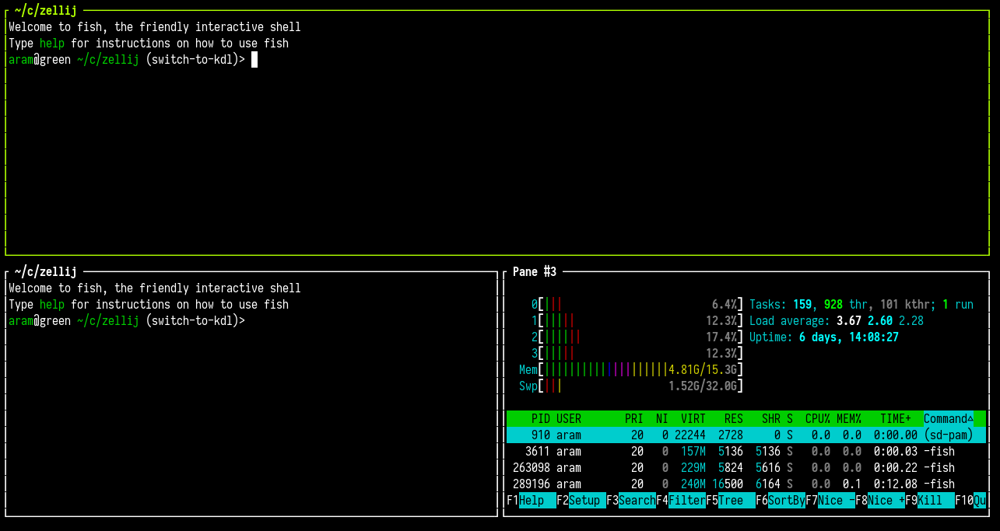
Applying a Layout
A layout can be applied when Zellij starts:
$ zellij --layout /path/to/layout_file.kdl
Or by setting it up in the configuration.
A layout can also be applied inside a running session with the same command:
$ zellij --layout /path/to/layout_file.kdl
In this case, Zellij will start this layout as one or more new tabs in the current session.
A layout can also be applied from a remote URL:
$ zellij --layout https://example.com/layout_file.kdl
For security reasons, remote layouts will have all their commands suspended behind a Waiting ro run <command> banner - prompting the user to run each one.
Layout default directory
By default Zellij will load the default.kdl layout, found in the layouts directory (a subdirectory of the config directory [config/layouts]).
If not found, Zellij will start with one pane and one tab.
Layouts residing in the default directory can be accessed by their bare name:
zellij --layout [layout_name]
Runtime Layout Override
The layout of a running tab can be overridden without restarting the session. This is done via the override-layout CLI action or the OverrideLayout keybinding action:
$ zellij action override-layout /path/to/new-layout.kdl
Options allow retaining existing panes that do not fit the new layout:
$ zellij action override-layout /path/to/layout.kdl --retain-existing-terminal-panes --apply-only-to-active-tab
This enables dynamic workspace reorganization. For the full reference, see override-layout in CLI actions and OverrideLayout in keybinding actions.
Layout Configuration Language
Zellij uses KDL as its configuration language.
Creating a Layout
Quickstart:
$ zellij setup --dump-layout default > /tmp/my-quickstart-layout-file.kdl
The layout structure is nested under a global layout node.
Within it are several possible node types:
pane- the basic building blocks of the layout, can represent shells, commands, plugins or logical containers for otherpanes.tab- represents a navigational Zellij tab and can containpanespane_template- define new nodes equivalent topanes with additional attributes or parameters.tab_template- define new nodes equivalent totabs with additional attributes or parameters.
Panes
pane nodes are the basic building blocks of a layout.
They could represent standalone panes:
layout {
pane // panes can be bare
pane command="htop" // panes can have arguments on the same line
pane {
// panes can have arguments inside child-braces
command "exa"
cwd "/"
}
pane command="ls" { // or a mixture of same-line and child-braces arguments
cwd "/"
}
}
They could also represent logical containers:
layout {
pane split_direction="vertical" {
pane
pane
}
}
Note: if panes represent logical containers, all their arguments should be specified on their title line.
split_direction
split_direction is a pane argument that indicates whether its children will be laid out vertically or horizontally.
Possible values: "vertical" | "horizontal"
Default value if omitted: "horizontal"
eg.
layout {
pane split_direction="vertical" {
pane
pane
}
pane {
// value omitted, will be layed out horizontally
pane
pane
}
}
Note: The layout node itself has a set value of "horizontal". It can be changed by adding a logical pane container:
layout {
pane split_direction="vertical" {
pane
pane
}
}
size
size is a pane argument that represents the fixed or percentage space taken up by this pane inside its logical container.
Possible values: quoted percentages (eg. "50%") | fixed values (eg. 1)
Note: specifying fixed values that are not unselectable plugins is currently unstable and might lead to unexpected behaviour when resizing or closing panes. Please see this issue.
eg.
layout {
pane size=5
pane split_direction="vertical" {
pane size="80%"
pane size="20%"
}
pane size=4
}
borderless
borderless is a pane argument indicating whether a pane should have a frame or not.
Possible values: true | false
Default value if omitted: false
eg.
layout {
pane borderless=true
pane {
borderless true
}
}
focus
focus is a pane argument indicating whether a pane should have focus on startup.
Possible values: true | false Default value if omitted: false
Note: specifying multiple panes with focus will result in the first one of them being focused.
eg.
layout {
pane focus=true
pane {
focus true
}
}
name
name is a string pane argument to change the default pane title.
Possible values: "a quoted string"
eg.
layout {
pane name="my awesome pane"
pane {
name "my amazing pane"
}
}
cwd
A pane can have a cwd argument, pointing to its Current Working Directory.
Possible values: "/path/to/some/folder", "relative/path/to/some/folder"
Note: If the cwd is a relative path, it will be appended to its containers' cwd read more about cwd composition
eg.
layout {
pane cwd="/"
pane {
command "git"
args "diff"
cwd "/path/to/some/folder"
}
}
command
command is a string (path) to an executable that should be run in this pane instead of the default shell.
Possible values: "/path/to/some/executable" | "executable" (the latter should be accessible through PATH)
eg.
layout {
pane command="htop"
pane {
command "/usr/bin/btm"
}
}
args
A pane with a command can also have an args argument. This argument can include one or more strings that will be passed to the command as its arguments.
Possible values: "a" "series" "of" "quoted" "strings"
Note: args must be inside the pane's child-braces and cannot be specified on the same line as the pane.
eg.
layout {
pane command="tail" {
args "-f" "/path/to/my/logfile"
}
// Hint: include "quoted" shell arguments as a single argument:
pane command="bash" {
args "-c" "tail -f /path/to/my/logfile"
}
}
close_on_exit
A pane with a command can also have a close_on_exit argument. If true, this pane will close immediately when its command exits - instead of the default behaviour which is to give the user a chance to re-run it with ENTER and see its exit status
Possible values: true | false
eg.
layout {
pane command="htop" close_on_exit=true
}
start_suspended
A pane with a command can also have a start_suspended argument. If true, this pane will not immediately run the command on startup, but rather display a message inviting the user to press <ENTER> to first run the command. It will then behave normally. This can be useful when starting a layout with lots of commands and not wanting all of them to immediately run.
Possible values: true | false
eg.
layout {
pane command="ls" start_suspended=true
}
edit
edit is a string (path) to a file that will be opened using the editor specified in the EDITOR or VISUAL environment variables. This can alternatively also be specified using the scrollback_editor config variable.
Possible values: "/path/to/some/file" | "./relative/path/from/cwd"
Note: If the value is a relative path, it will be appended to its containers' cwd read more about cwd composition
eg.
layout {
pane split_direction="vertical" {
pane edit="./git_diff_side_a"
pane edit="./git_diff_side_b"
}
}
plugin
plugin is a pane argument the points to a Zellij plugin to load. Currently is is only possible to specify inside the child-braces of a pane followed by a URL location in quoted string.
Possible values: zellij:internal-plugin | file:/path/to/my/plugin.wasm
eg.
layout {
pane {
plugin location="zellij:status-bar"
}
}
default_fg
default_fg is a pane argument that sets the default foreground color for the pane. The color is specified as a quoted string in hex (eg. "#00e000") or rgb notation (eg. "rgb:00/e0/00").
Possible values: "#rrggbb" | "rgb:rr/gg/bb"
eg.
layout {
pane default_fg="#00e000"
pane {
default_fg "#ff5500"
}
}
default_bg
default_bg is a pane argument that sets the default background color for the pane. The color is specified as a quoted string in hex (eg. "#001a3a") or rgb notation (eg. "rgb:00/1a/3a").
Possible values: "#rrggbb" | "rgb:rr/gg/bb"
eg.
layout {
pane default_bg="#001a3a"
pane {
default_bg "rgb:00/1a/3a"
default_fg "#ffffff"
}
}
These properties can be used together to create visually distinct panes (e.g., to highlight a specific command pane or to differentiate between environments). They can also be set at runtime via the SetPaneColor keybinding action or zellij action set-pane-color CLI command.
stacked
If true, this pane property dictates that the children panes of this pane will be arranged in a stack.
In a stack of panes, all panes except one have just one line - showing their title (and their scroll and exit code when relevant). The focused pane among these is displayed normally as any other pane.
eg.
layout {
pane stacked=true {
pane
pane
pane command="ls"
pane command="htop"
pane edit="src/main.rs"
}
}
expanded
In the context of stacked panes, an expanded child will dictate that this pane in the stack should be the one expanded, rather than the lowest pane (the default).
eg.
layout {
pane stacked=true {
pane
pane expanded=true
pane
pane
}
}
Floating Panes
A floating_panes node can be included either at the root of the layout or inside a tab node. Panes nested in this node will be floating, and can be given x, y, width and height properties.
eg.
layout {
floating_panes {
pane
pane command="ls"
pane {
x 1
y "10%"
width 200
height "50%"
}
}
}
pane nodes inside a floating_panes can have all the properties regular pane nodes have, except for children nodes or other irrelevant properties (eg. split_direction). pane_templates for these panes must not include these properties either.
x, y, width, height
These properties may be included inside floating panes. They can be either a fixed number (characters from screen edge) or a percentage (recommended in case where the terminal window size is not known).
Tabs
tab nodes can optionally be used to start a layout with several tabs.
Note: all tab arguments should be specified on its title line. The child-braces are reserved for its child panes.
eg.
layout {
tab // a tab with a single pane
tab {
// a tab with three horizontal panes
pane
pane
pane
}
tab name="my third tab" split_direction="vertical" {
// a tab with a name and two vertical panes
pane
pane
}
}
split_direction
Tabs can have a split_direction just like panes. This argument indicates whether the tab's children will be laid out vertically or horizontally.
Possible values: "vertical" | "horizontal"
Default value if omitted: "horizontal"
eg.
layout {
tab split_direction="vertical" {
pane
pane
}
tab {
// if omitted, will be "horizontal" by default
pane
pane
}
}
focus
Tabs can have a focus just like panes. This argument indicates whether a tab should have focus on startup.
Possible values: true | false
Default value if omitted: false
Note: only one tab can be focused.
eg.
layout {
tab {
pane
pane
}
tab focus=true {
pane
pane
}
}
name
Tabs can have a name just like panes. This argument is a string to change the default tab title.
Possible values: "a quoted string"
eg.
layout {
tab name="my awesome tab"
tab name="my amazing tab" {
pane
}
}
cwd
Tabs can have a cwd just like panes - pointing to their Current Working Directory.
All panes in this tab will have this cwd prefixed to their own cwd (if they have one) or start in this cwd if they don't.
Possible values: "/path/to/some/folder", "relative/path/to/some/folder"
Note: If the cwd is a relative path, it will be appended to its containers' cwd read more about cwd composition
eg.
layout {
tab name="my amazing tab" cwd="/tmp" {
pane // will have its cwd set to "/tmp"
pane cwd="foo" // will have its cwd set to "/tmp/foo"
pane cwd="/home/foo" // will have its cwd set to "/home/foo", overriding the tab cwd with its absolute path
}
}
hide_floating_panes
If set, all floating panes defined in this tab will be hidden on startup.
eg.
tab name="Tab #1" hide_floating_panes=true {
pane
pane
floating_panes { // will start hidden
pane
pane
}
}
Templates
Templates can be used avoid repetition when creating layouts. Each template has a name that should be used directly as a node name instead of "pane" or "tab".
Pane Templates
Pane templates can be used to shorten pane attributes:
layout {
pane_template name="htop" {
command "htop"
}
pane_template name="htop-tree" {
command "htop"
args "--tree"
borderless true
}
// the below will create a template with four panes
// the top and bottom panes running htop and the two
// middle panes running "htop --tree" without a pane frame
htop
htop-tree
htop-tree
htop
}
Pane templates with the command attribute can take the args and cwd of their consumers:
layout {
pane_template name="follow-log" command="tail"
follow-log {
args "-f" "/tmp/my-first-log"
}
follow-log {
args "-f" "my-second-log"
cwd "/tmp"
}
}
Note: the above only works for direct consumers and not other templates.
Pane templates can be used as logical containers. In this case a special children node must be specified to indicate where the child panes should be inserted.
Note: the children node can be nested inside panes but not inside other pane_templates.
layout {
pane_template name="vertical-sandwich" split_direction="vertical" {
pane
children
pane
}
vertical-sandwich {
pane command="htop"
}
}
Pane templates can include other pane templates.
layout {
pane_template name="vertical-sandwich" split_direction="vertical" {
pane
children
pane
}
pane_template name="vertical-htop-sandwich" {
vertical-sandwich {
pane command="htop"
}
}
pane_template name="vertical-htop-sandwich-below" split_direction="horizontal" {
children
vertical-htop-sandwich
}
vertical-htop-sandwich
vertical-htop-sandwich-below {
pane command="exa"
}
}
The children node should be thought of as a placeholder for the pane using this template.
This:
layout {
pane_template name="my_template" {
pane
children
pane
}
my_template split_direction="vertical" {
pane
pane
}
}
Will be translated into this:
layout {
pane {
pane
pane split_direction="vertical" {
pane
pane
}
pane
}
}
Tab Templates
Tab templates, similar to pane templates, help avoiding repetition when defining tabs. Like pane_templates they can include a children block to indicate where their child panes should be inserted.
Note: for the sake of clarity, arguments passed to tab_templates can only be specified on their title line.
layout {
tab_template name="ranger-on-the-side" {
pane size=1 borderless=true {
plugin location="zellij:compact-bar"
}
pane split_direction="vertical" {
pane command="ranger" size="20%"
children
}
}
ranger-on-the-side name="my first tab" split_direction="horizontal" {
pane
pane
}
ranger-on-the-side name="my second tab" split_direction="vertical" {
pane
pane
}
}
Default Tab Template
There is a special default_tab_template node that can be used just like a regular tab_template node, but that would apply to all tabs in the template as well as all new tabs opened in the session.
Note: the default_tab_template will not apply to tabs using other tab_templates.
Another note: if no tabs are specified, the whole layout is treated as a default_tab_template.
layout {
default_tab_template {
// the default zellij tab-bar and status bar plugins
pane size=1 borderless=true {
plugin location="zellij:tab-bar"
}
children
pane size=2 borderless=true {
plugin location="zellij:status-bar"
}
}
tab // the default_tab_template
tab name="second tab" // the default_tab_template with a custom tab name
tab split_direction="vertical" { // the default_tab_template with three vertical panes between the plugins
pane
pane
pane
}
}
new_tab_template
This is a logical tab-like node that will only be used as a blueprint to open new tabs. It can be useful when one would like to define a few initial tabs, but use a different template for opening new tabs.
cwd Composition
When a relative cwd property is specified in a node, it is appended to its container node's cwd in the follwing order:
panetab- global cwd
- The
cwdwhere the command was executed
eg.
layout {
cwd "/hi"
tab cwd="there" {
pane cwd="friend" // opened in /hi/there/friend
}
}
Global cwd
The cwd property can also be specified globally on the layout node itself.
Doing this would make all panes in this layout start in this cwd unless they have an absolute path.
Eg.
layout {
cwd "/home/aram/code/my-project"
pane cwd="src" // will be opened in /home/aram/code/my-project/src
pane cwd="/tmp" // absolute paths override the global cwd, this will be opened in /tmp
pane command="cargo" {
args "test"
// will be started in /home/aram/code/my-project
}
}
Swap Layouts
Swap Layouts are an extension of Layouts allowing users to open new panes in predefined locations as well as rearrange the currently open panes in a tab.
Swap layouts are separated between swap_tiled_layouts, which apply to the regular tiled panes, and swap_floating_layouts which apply to floating panes.
Quickstart
You can dump the default swap layouts just as you can dump the base layouts:
$ zellij setup --dump-swap-layout default > /tmp/my-quickstart-swap-layout-file.swap.kdl
How are Swap Layouts loaded?
Swap layouts can either be included directly in the layout file (inside the layout node, see below) or in a separate .swap.kdl file in the same folder (see below).
Progression and Constraints
A basic swap layout can look like this:
layout {
swap_tiled_layout name="h2v" {
tab max_panes=2 {
pane
pane
}
tab {
pane split_direction="vertical" {
pane
pane
pane
}
}
}
}
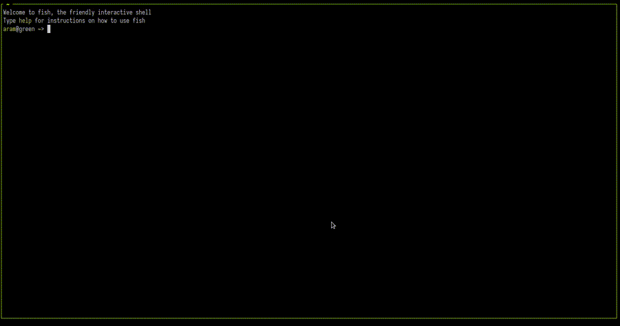
When this layout is loaded, the first two panes are opened horizontally one above the other. The next pane opened (with Alt + n) will snap the layout into three vertical panes. If closed, the layout will snap back to two horizontal panes. Panes opened after the third will be laid out in an unspecified way.
An example with floating panes:
layout {
swap_floating_layout {
floating_panes max_panes=1 {
pane
}
floating_panes max_panes=2 {
pane x=0
pane x="50%"
}
floating_panes max_panes=3 {
pane x=0 width="25%"
pane x="25%" width="25%"
pane x="50%"
}
}
}
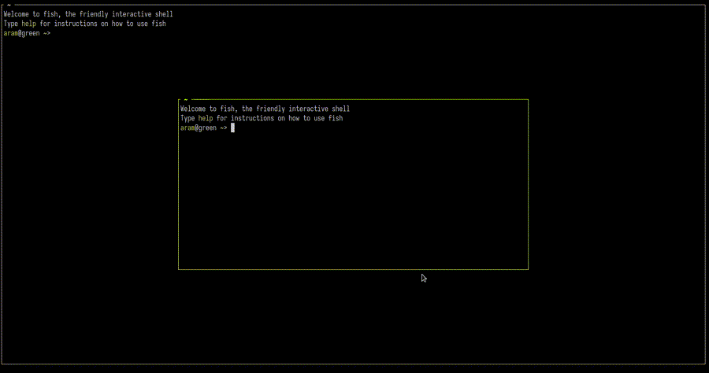
swap_tiled_layout
A swap_tiled_layout node should include one or more tab nodes. These nodes can also be tab_templates for the sake of brevity.
A swap_tiled_layout can have a name, which will be used in the Zellij UI to indicate which layout is selected.
swap_floating_layout
A swap_floating_layout node should include one or more floating_panes nodes. These can also be tab_templates for the sake of brevity.
A swap_floating_layout can have a name, which will be used in the Zellij UI to indicate which layout is selected.
Constraints
Each swap tab or floating_panes node may have one of three constraints: max_panes, min_panes or exact_panes:
eg.
// ...
floating_panes exact_panes=2 {
pane x=1 y=1
pane x=10 y=10
}
// ...
tab max_panes=2 {
pane split_direction="vertical" {
pane
pane
}
}
// ...
Pane commands and plugins in Layouts
pane nodes in swap layouts may include command nodes and plugin nodes normally, but these will not be newly opened or closed by their absence. If panes like these are included in swap layouts, it is expected that they already appear on screen from the base layout. Otherwise the behaviour is unspecified and might change in later versions.
Multiple swap layout nodes
Multiple swap_tiled_layout and swap_floating_layout nodes can be included in a single layout. In this case, the user can switch between them manually (by default with Alt + []), or they will be switched to automatically if the current swap node does not meet the constraints when opening or closing a pane.
Base
The basic layout loaded is called the Base layout, and can be switched back to as any other layout - it is considered to have an implicit exact_panes constraint of its total pane count.
This is true both to tiled panes and floating panes.
Swap Layouts with extra panes
Swap layout nodes containing more panes than are on screen will place panes in a "breadth first" manner.
Swap Layouts with too few panes
Swap layouts with fewer panes than are on screen will have all their panes applied first, and panes following them will be laid out in an unspecified manner.
Swap Layout files (layout-name.swap.kdl)
Because swap layouts can get quite verbose, it's possible to include them in a separate file. The file should be in the same folder as the original layout and have a swap.kdl suffix instead of a .kdl suffix.
Eg.
my-layout.kdl
my-layout.swap.kdl
This file need not include the layout node, but should include the swap_tiled_layout and/or swap_floating_layout nodes directly.
Including Configuration in Layouts
Zellij layout files can include any configuration that can be defined in a Zellij configuration file.
Items in this configuration take precedence over items in the loaded Zellij configuration.
Note: These fields are ignored when loading a layout through the new-tab action
Example
layout {
pane split_direction="vertical" {
pane
pane split_direction="horizontal" {
pane
pane
}
}
pane size=1 borderless=true {
plugin location="zellij:compact-bar"
}
}
keybinds {
shared {
bind "Alt 1" { Run "git" "status"; }
bind "Alt 2" { Run "git" "diff"; }
bind "Alt 3" { Run "exa" "--color" "always"; }
}
}
This layout includes a map of panes and UI to open, as well as some keybindings to quickly open new panes with your favorite commands.
Example layouts
Classic three pane with vertical root
layout {
pane split_direction="vertical" {
pane
pane split_direction="horizontal" {
pane
pane
}
}
}
Will provide:
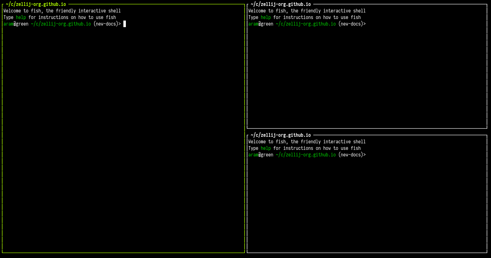
Classic three panes with vertical root and compact status bar
layout {
pane split_direction="vertical" {
pane
pane split_direction="horizontal" {
pane
pane
}
}
pane size=1 borderless=true {
plugin location="zellij:compact-bar"
}
}
Will provide:
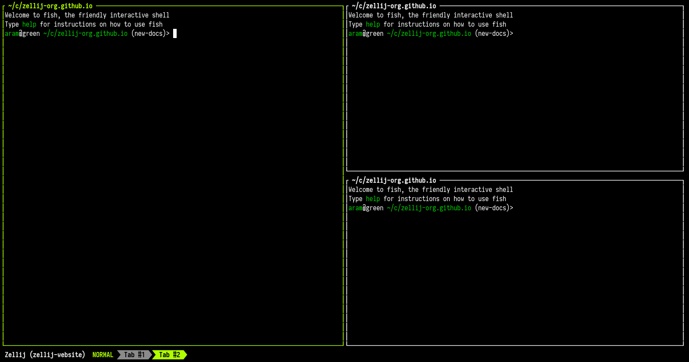
Quick generic project explorer
Cloned a new project, want to quickly explore it without much fuss?
layout {
pane split_direction="vertical" {
pane
pane split_direction="horizontal" {
pane command="exa" {
args "--color" "always" "-l"
}
pane command="git" {
args "log"
}
}
}
}
Will provide:
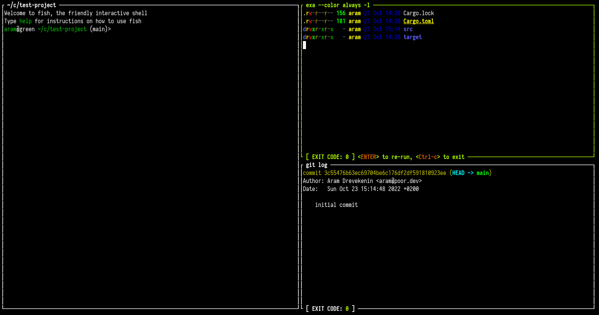
Basic Rust project
Basic layout for a rust executable project
layout {
pane split_direction="vertical" size="60%" {
pane edit="src/main.rs"
pane edit="Cargo.toml"
}
pane split_direction="vertical" size="40%" {
pane command="cargo" {
args "run"
focus true
}
pane command="cargo" {
args "test"
}
}
}
When started in a project just created with cargo init, looks like this:
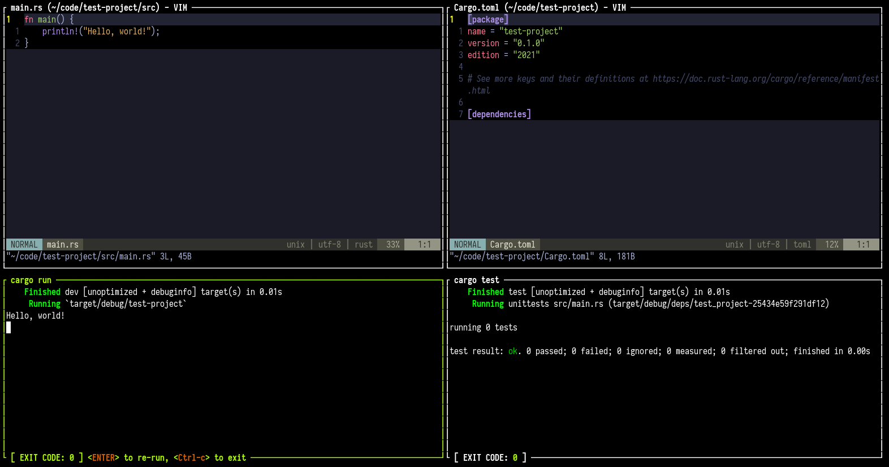
For convenience, here's a version that also loads Zellij's interface
layout {
pane size=1 borderless=true {
plugin location="zellij:tab-bar"
}
pane split_direction="vertical" size="60%" {
pane edit="src/main.rs"
pane edit="Cargo.toml"
}
pane split_direction="vertical" size="40%" {
pane command="cargo" {
args "run"
focus true
}
pane command="cargo" {
args "test"
}
}
pane size=2 borderless=true {
plugin location="zellij:status-bar"
}
}
A more complex example (Zellij development)
Here's a layout used internally for Zellij development.
It can help on-board new developers by tying together related files and their tests, as well as useful plugins here and there.
layout {
default_tab_template {
pane size=1 borderless=true {
plugin location="zellij:tab-bar"
}
children
pane size=2 borderless=true {
plugin location="zellij:status-bar"
}
}
pane_template name="tests_under_files" {
pane split_direction="horizontal" {
children
pane command="cargo" size="30%" {
args "test"
}
}
}
tab_template name="strider_tab" {
pane size=1 borderless=true {
plugin location="zellij:tab-bar"
}
pane split_direction="Vertical" {
pane size="15%" {
// TODO: when we support sending CWD to plugins, this should start in ./zellij-derver
plugin location="zellij:strider"
}
children
}
pane size=2 borderless=true {
plugin location="zellij:status-bar"
}
}
strider_tab name="Server (root)" cwd="./zellij-server" focus=true {
tests_under_files split_direction="vertical" {
pane edit="./src/lib.rs"
pane edit="./src/route.rs"
}
}
tab name="Client (root)" cwd="./zellij-client" {
tests_under_files split_direction="vertical" {
pane edit="./src/lib.rs"
pane edit="./src/input_handler.rs"
}
}
tab name="Server (screen thread)" split_direction="vertical" cwd="./zellij-server/src" {
pane edit="./screen.rs" name="SCREEN"
pane edit="./tab/mod.rs" name="TAB"
pane edit="./panes/terminal_pane.rs" name="TERMINAL PANE"
}
tab name="Server (pty thread)" split_direction="vertical" cwd="./zellij-server/src" {
pane edit="./pty.rs" name="PTY"
pane edit="./os_input_output.rs" name="OS_INPUT_OUTPUT"
}
tab name="Server (pane grids)" split_direction="horizontal" cwd="./zellij-server/src/panes" {
pane split_direction="vertical" {
pane edit="./tiled_panes/mod.rs" name="TILED PANES"
pane edit="./tiled_panes/tiled_pane_grid.rs" name="TILED PANES - GRID"
pane edit="./tiled_panes/pane_resizer.rs" name="TILED PANES - GRID - RESIZER"
}
pane split_direction="vertical" {
pane edit="./floating_panes/mod.rs" name="FLOATING_PANES"
pane edit="./floating_panes/floating_pane_grid.rs" name="FLOATING_PANES - GRID"
}
}
tab name="Server (Terminal)" split_direction="horizontal" cwd="./zellij-server/src/panes" {
pane split_direction="vertical" {
pane edit="./terminal_pane.rs" name="TERMINAL PANE"
pane edit="./grid.rs" name="GRID (ANSI PARSER)"
}
pane split_direction="vertical" {
pane edit="./terminal_character.rs" name="TERMINAL CHARACTER"
pane edit="./sixel.rs" name="SIXEL"
}
}
}
Here's how it looks like when opened:
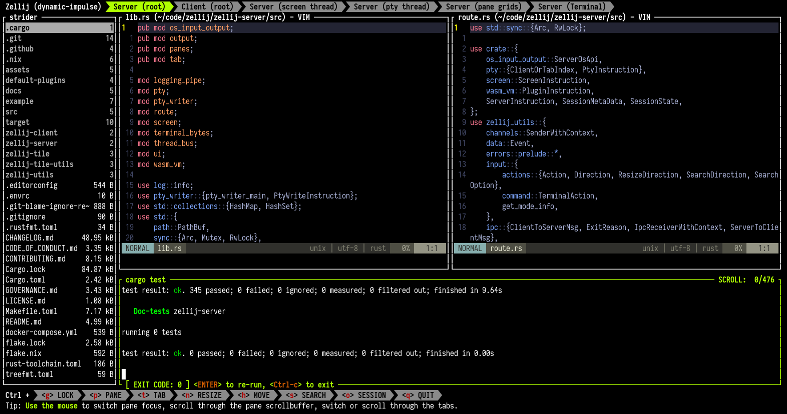
Your layout here?
Please make PRs with cool layouts (and screenshots!) to our website repo and we'd be happy to include your name and a link to your profile.
Migrating from old YAML layouts / configs
Starting from Zellij 0.32.0, Zellij uses KDL layouts as described in these documents.
Up until this version, Zellij used YAML configuration files.
As a matter of convenience, when Zellij is run with an old configuration / layout / theme file (either explicitly with a cli flag or if it found the file in the default locations) it will prompt the user and convert that file to the new format.
This can also be done manually:
$ zellij convert-config /path/to/my/config.yaml > /path/to/my/config.kdl
$ zellij convert-layout /path/to/my/layout.yaml > /path/to/my/layout.kdl
$ zellij convert-theme /path/to/my/theme.yaml > /path/to/my/theme.kdl
Plugins
Zellij offers a Webassembly / WASI plugin system, allowing plugin developers to develop plugins in many different languages.
Zellij itself builds its UI from plugins, you can browse their code for inspiration.
What is a Zellij Plugin?
A Zellij plugin is a first class citizen in the workspace, just like a terminal pane. It can render a UI, react to application state changes as well as control Zellij and change its behavior.
Our intention with the plugin system is to give users and developers the power to easily take full advantage of their terminal. Creating composable components that can be shared easily, turning everyday terminal tasks into a personalized multiplayer dashboard experience. We like to think of them as visual cross-platform scripts that do not need to be installed or compiled.
More importantly though, we feel that the best terminal workspace experience happens through collaboration. So - what do you think is a Zellij plugin?
Currently, Rust is the only language officially supported for plugins, but there are community efforts to support other languages as well.
Loading Plugins
Plugins can either be loaded through a Layout, through the command line, or from a keybinding.
On startup
Plugins can also be loaded on startup through the load_plugins configuration block. Eg.
load_plugins {
https://example.com/my-plugin.wasm
file:/path/to/my/plugin.kdl
my-plugin-alias
}
These plugins will be loaded in the background on session startup, only appearing once to request permissions from the user if they need any.
Through the built-in plugin-manager
Plugins can also be loaded (in the background or foreground) through the plugin manager. This built-in plugin, accessible by default with Ctrl o + p, allows both loading plugins and monitoring existing plugins:
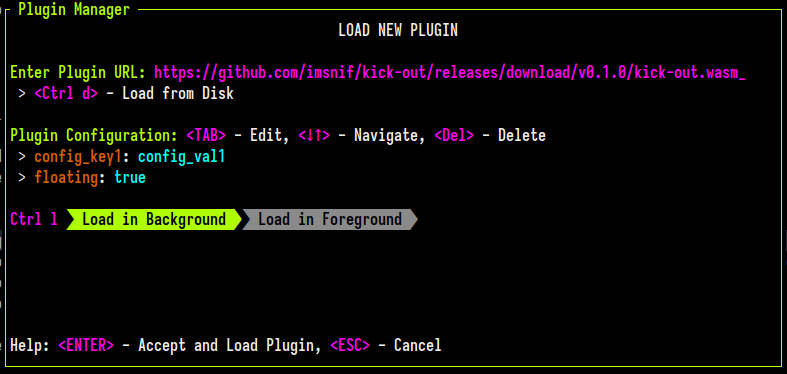
Plugin URL schema
Plugins are referred to by URLs. Currently there are four supported schemas:
- The file schema:
file:/absolute/path/to/my/plugin.wasm- for reading plugins from the local HD - The built-in
zellij:schema (eg.zellij:tab-bar) for loading built-in zellij plugins. - Urls (
http(s)://path/to/my/plugin.wasm) - Bare aliases (
filepicker), see Plugin Aliases
Plugin API
Please also see the Rust-specific documentation: zellij-tile.
The plugin API provides plugins with several capabilities:
- Events - A plugin can subscribe to one or more of these and receive an update whenever they happen.
- Commands - These are functions exported to the plugin, allowing it to affect Zellij and add functionality to it.
- Accessing the HD - A plugin can use its development language's own standard library to access the filesystem folder in which Zellij was opened.
- Workers for Async Tasks - A plugin can have multiple workers to which it can offload heavy or long-running tasks without blocking its own rendering.
- Log debug or error messages - A plugin can log messages to STDERR which will in the Zellij logs.
Plugin API - Events
A plugin can subscribe to events using their EventType discriminant. Once subscribed, events are delivered to the plugin's update method with their associated payload.
For complete type definitions referenced below, see the Type Reference. For additional details, see the zellij-tile API documentation.
Table of Contents
- ModeUpdate
- TabUpdate
- PaneUpdate
- Key
- Mouse
- Timer
- CopyToClipboard
- SystemClipboardFailure
- InputReceived
- Visible
- CustomMessage
- FileSystemCreate
- FileSystemRead
- FileSystemUpdate
- FileSystemDelete
- PermissionRequestResult
- SessionUpdate
- RunCommandResult
- WebRequestResult
- CommandPaneOpened
- CommandPaneExited
- PaneClosed
- EditPaneOpened
- EditPaneExited
- CommandPaneReRun
- FailedToWriteConfigToDisk
- ListClients
- HostFolderChanged
- FailedToChangeHostFolder
- PastedText
- ConfigWasWrittenToDisk
- WebServerStatus
- FailedToStartWebServer
- BeforeClose
- InterceptedKeyPress
- UserAction
- PaneRenderReport
- PaneRenderReportWithAnsi
- ActionComplete
- CwdChanged
- AvailableLayoutInfo
- PluginConfigurationChanged
- HighlightClicked
- CommandChanged
- HostTerminalThemeChanged
ModeUpdate
#![allow(unused)] fn main() { Event::ModeUpdate(ModeInfo) }
Required Permission: ReadApplicationState
Payload: ModeInfo
Fired when the input mode or relevant session metadata changes. Provides information about the current input mode (e.g., Normal, Locked, Pane, Tab), bound keys, the active theme colors, and the session name.
Example:
#![allow(unused)] fn main() { fn update(&mut self, event: Event) -> bool { match event { Event::ModeUpdate(mode_info) => { self.current_mode = mode_info.mode; self.session_name = mode_info.session_name.clone(); true // re-render }, _ => false, } } }
TabUpdate
#![allow(unused)] fn main() { Event::TabUpdate(Vec<TabInfo>) }
Required Permission: ReadApplicationState
Payload: Vec<TabInfo>
Fired when tab state changes in the application. Provides a list of all tabs with their position, name, active status, pane counts, swap layout information, and viewport dimensions.
Example:
#![allow(unused)] fn main() { fn update(&mut self, event: Event) -> bool { match event { Event::TabUpdate(tabs) => { self.tabs = tabs; if let Some(active) = self.tabs.iter().find(|t| t.active) { self.active_tab_name = active.name.clone(); } true }, _ => false, } } }
PaneUpdate
#![allow(unused)] fn main() { Event::PaneUpdate(PaneManifest) }
Required Permission: ReadApplicationState
Payload: PaneManifest
Fired when pane state changes in the application. Provides information about all panes in all tabs, including their title, position, size, command, focus state, and more.
Example:
#![allow(unused)] fn main() { fn update(&mut self, event: Event) -> bool { match event { Event::PaneUpdate(pane_manifest) => { self.pane_manifest = pane_manifest; true }, _ => false, } } }
Key
#![allow(unused)] fn main() { Event::Key(KeyWithModifier) }
Payload: KeyWithModifier
Fired when the user presses a key while focused on this plugin's pane. No permission is required - this event is always available for the plugin's own pane.
Example:
#![allow(unused)] fn main() { fn update(&mut self, event: Event) -> bool { match event { Event::Key(key) => { match key.bare_key { BareKey::Char('q') if key.has_no_modifiers() => { close_self(); }, BareKey::Enter => { self.handle_enter(); }, _ => {}, } true }, _ => false, } } }
Mouse
#![allow(unused)] fn main() { Event::Mouse(Mouse) }
Payload: Mouse
Fired when the user performs a mouse action (click, scroll, hover, etc.) while focused on the plugin pane. No permission is required.
Example:
#![allow(unused)] fn main() { fn update(&mut self, event: Event) -> bool { match event { Event::Mouse(Mouse::LeftClick(line, col)) => { self.handle_click(line as usize, col); true }, Event::Mouse(Mouse::ScrollUp(_)) => { self.scroll_offset += 1; true }, Event::Mouse(Mouse::ScrollDown(_)) => { self.scroll_offset = self.scroll_offset.saturating_sub(1); true }, _ => false, } } }
Timer
#![allow(unused)] fn main() { Event::Timer(f64) }
Payload: f64 - the duration (in seconds) that was originally set
Fired when a timer set by set_timeout expires. No permission is required.
Example:
#![allow(unused)] fn main() { fn load(&mut self, _config: BTreeMap<String, String>) { subscribe(&[EventType::Timer]); set_timeout(1.0); // fire after 1 second } fn update(&mut self, event: Event) -> bool { match event { Event::Timer(elapsed) => { self.tick(); set_timeout(1.0); // schedule next tick true }, _ => false, } } }
CopyToClipboard
#![allow(unused)] fn main() { Event::CopyToClipboard(CopyDestination) }
Required Permission: ReadApplicationState
Payload: CopyDestination
Fired when the user copies text to their clipboard anywhere in the application. The payload indicates the clipboard destination (System, Primary, or Command).
SystemClipboardFailure
#![allow(unused)] fn main() { Event::SystemClipboardFailure }
Required Permission: ReadApplicationState
Payload: (none)
Fired when the system fails to copy text to the clipboard.
InputReceived
#![allow(unused)] fn main() { Event::InputReceived }
Payload: (none)
Fired whenever any input is received anywhere in Zellij. Does not specify which input was received. No permission is required.
Visible
#![allow(unused)] fn main() { Event::Visible(bool) }
Payload: bool - true if the plugin became visible, false if it became invisible
Fired when the plugin pane becomes visible or invisible (e.g., when switching tabs to or away from the plugin's tab). No permission is required.
Example:
#![allow(unused)] fn main() { fn update(&mut self, event: Event) -> bool { match event { Event::Visible(is_visible) => { self.is_visible = is_visible; if is_visible { // refresh data when becoming visible self.refresh(); } true }, _ => false, } } }
CustomMessage
#![allow(unused)] fn main() { Event::CustomMessage(String, String) }
Payload: (String, String) - (message_name, payload)
Fired when a message is received from one of the plugin's workers via post_message_to_plugin. No permission is required. See Workers for Async Tasks for details.
Example:
#![allow(unused)] fn main() { fn update(&mut self, event: Event) -> bool { match event { Event::CustomMessage(name, payload) => { if name == "fetch_complete" { self.data = serde_json::from_str(&payload).ok(); true } else { false } }, _ => false, } } }
FileSystemCreate
#![allow(unused)] fn main() { Event::FileSystemCreate(Vec<(PathBuf, Option<FileMetadata>)>) }
Payload: Vec<(PathBuf, Option<FileMetadata)>) - paths and optional metadata of created files
Fired when files are created in the Zellij host folder. The plugin must call watch_filesystem to start receiving these events. No permission is required beyond subscribing.
FileSystemRead
#![allow(unused)] fn main() { Event::FileSystemRead(Vec<(PathBuf, Option<FileMetadata>)>) }
Payload: Vec<(PathBuf, Option<FileMetadata>)> - paths and optional metadata of accessed files
Fired when files are read/accessed in the Zellij host folder.
FileSystemUpdate
#![allow(unused)] fn main() { Event::FileSystemUpdate(Vec<(PathBuf, Option<FileMetadata>)>) }
Payload: Vec<(PathBuf, Option<FileMetadata>)> - paths and optional metadata of modified files
Fired when files are modified in the Zellij host folder.
Example:
#![allow(unused)] fn main() { fn update(&mut self, event: Event) -> bool { match event { Event::FileSystemUpdate(files) => { for (path, metadata) in &files { if path.extension().map_or(false, |ext| ext == "rs") { self.rust_files_changed = true; } } true }, _ => false, } } }
FileSystemDelete
#![allow(unused)] fn main() { Event::FileSystemDelete(Vec<(PathBuf, Option<FileMetadata>)>) }
Payload: Vec<(PathBuf, Option<FileMetadata>)> - paths and optional metadata of deleted files
Fired when files are deleted from the Zellij host folder.
PermissionRequestResult
#![allow(unused)] fn main() { Event::PermissionRequestResult(PermissionStatus) }
Payload: PermissionStatus - Granted or Denied
Fired after request_permission is called and the user responds. No permission is required.
Example:
#![allow(unused)] fn main() { fn update(&mut self, event: Event) -> bool { match event { Event::PermissionRequestResult(PermissionStatus::Granted) => { // permissions granted, subscribe to events that require them subscribe(&[EventType::TabUpdate, EventType::PaneUpdate]); true }, Event::PermissionRequestResult(PermissionStatus::Denied) => { eprintln!("Permissions denied - plugin functionality limited"); true }, _ => false, } } }
SessionUpdate
#![allow(unused)] fn main() { Event::SessionUpdate(Vec<SessionInfo>, Vec<(String, Duration)>) }
Required Permission: ReadApplicationState
Payload:
Vec<SessionInfo>- list of active sessionsVec<(String, Duration)>- list of resurrectable sessions(name, time_since_death)
Fired when session state changes, providing information about all active sessions of the current Zellij version and all resurrectable (dead) sessions.
Example:
#![allow(unused)] fn main() { fn update(&mut self, event: Event) -> bool { match event { Event::SessionUpdate(sessions, resurrectable) => { self.sessions = sessions; self.dead_sessions = resurrectable; true }, _ => false, } } }
RunCommandResult
#![allow(unused)] fn main() { Event::RunCommandResult(Option<i32>, Vec<u8>, Vec<u8>, BTreeMap<String, String>) }
Payload:
Option<i32>- exit code (if the command exited normally)Vec<u8>- stdoutVec<u8>- stderrBTreeMap<String, String>- the context dictionary provided when running the command
Fired after a command executed with run_command completes. No permission is required beyond the RunCommands permission used to initiate the command.
Example:
#![allow(unused)] fn main() { fn update(&mut self, event: Event) -> bool { match event { Event::RunCommandResult(exit_code, stdout, stderr, context) => { if context.get("request_id") == Some(&"git-status".to_string()) { let output = String::from_utf8_lossy(&stdout); self.git_status = output.to_string(); } true }, _ => false, } } }
WebRequestResult
#![allow(unused)] fn main() { Event::WebRequestResult(u16, BTreeMap<String, String>, Vec<u8>, BTreeMap<String, String>) }
Payload:
u16- HTTP status codeBTreeMap<String, String>- response headersVec<u8>- response bodyBTreeMap<String, String>- the context dictionary provided when making the request
Fired after a web request made with web_request completes. No permission is required beyond the WebAccess permission used to initiate the request.
Example:
#![allow(unused)] fn main() { fn update(&mut self, event: Event) -> bool { match event { Event::WebRequestResult(status, headers, body, context) => { if status == 200 { let body_str = String::from_utf8_lossy(&body); self.api_response = Some(body_str.to_string()); } true }, _ => false, } } }
CommandPaneOpened
#![allow(unused)] fn main() { Event::CommandPaneOpened(u32, BTreeMap<String, String>) }
Required Permission: ReadApplicationState
Payload:
u32- terminal pane ID of the opened command paneBTreeMap<String, String>- the context dictionary provided when opening the pane
Fired when a command pane opened with one of the open_command_pane* plugin commands has been created.
CommandPaneExited
#![allow(unused)] fn main() { Event::CommandPaneExited(u32, Option<i32>, BTreeMap<String, String>) }
Required Permission: ReadApplicationState
Payload:
u32- terminal pane IDOption<i32>- exit code of the command (if available)BTreeMap<String, String>- context dictionary
Fired when the command inside a command pane has exited. Note that this does not mean the pane is closed - the pane remains open in a "held" state, allowing the user to re-run the command. This event can fire multiple times if the user re-runs the command.
PaneClosed
#![allow(unused)] fn main() { Event::PaneClosed(PaneId) }
Required Permission: ReadApplicationState
Payload: PaneId - the ID of the closed pane
Fired when a pane in the current session is closed.
Example:
#![allow(unused)] fn main() { fn update(&mut self, event: Event) -> bool { match event { Event::PaneClosed(pane_id) => { self.tracked_panes.remove(&pane_id); true }, _ => false, } } }
EditPaneOpened
#![allow(unused)] fn main() { Event::EditPaneOpened(u32, BTreeMap<String, String>) }
Required Permission: ReadApplicationState
Payload:
u32- terminal pane ID of the editor paneBTreeMap<String, String>- context dictionary
Fired when an editor pane opened with one of the open_file* plugin commands has been created.
EditPaneExited
#![allow(unused)] fn main() { Event::EditPaneExited(u32, Option<i32>, BTreeMap<String, String>) }
Required Permission: ReadApplicationState
Payload:
u32- terminal pane ID of the editor paneOption<i32>- editor exit code (if available)BTreeMap<String, String>- context dictionary
Fired when the editor process inside an editor pane has exited.
CommandPaneReRun
#![allow(unused)] fn main() { Event::CommandPaneReRun(u32, BTreeMap<String, String>) }
Required Permission: ReadApplicationState
Payload:
u32- terminal pane IDBTreeMap<String, String>- context dictionary
Fired when a command pane's command has been re-run. This is often triggered by the user pressing Enter when focused on a held command pane, but can also be triggered programmatically via rerun_command_pane.
FailedToWriteConfigToDisk
#![allow(unused)] fn main() { Event::FailedToWriteConfigToDisk(Option<String>) }
Required Permission: ReadApplicationState
Payload: Option<String> - error message or file path (if available)
Fired when the plugin attempted to write configuration to disk (via reconfigure with save_configuration_file: true) and there was an error (e.g., the file was read-only).
ListClients
#![allow(unused)] fn main() { Event::ListClients(Vec<ClientInfo>) }
Required Permission: ReadApplicationState
Payload: Vec<ClientInfo>
Fired as a result of the list_clients command. Contains information about all connected clients in the session, including their ID, focused pane, running command, and whether they are the current client.
Example:
#![allow(unused)] fn main() { fn update(&mut self, event: Event) -> bool { match event { Event::ListClients(clients) => { self.clients = clients; let current = self.clients.iter().find(|c| c.is_current_client); true }, _ => false, } } }
HostFolderChanged
#![allow(unused)] fn main() { Event::HostFolderChanged(PathBuf) }
Payload: PathBuf - the new host folder path
Fired when the host folder (working directory) has been changed, either via change_host_folder or by other means. No permission is required.
FailedToChangeHostFolder
#![allow(unused)] fn main() { Event::FailedToChangeHostFolder(Option<String>) }
Payload: Option<String> - error message (if available)
Fired when an attempt to change the host folder failed. No permission is required.
PastedText
#![allow(unused)] fn main() { Event::PastedText(String) }
Payload: String - the pasted text
Fired when the user pastes text while focused on this plugin's pane. No permission is required.
Example:
#![allow(unused)] fn main() { fn update(&mut self, event: Event) -> bool { match event { Event::PastedText(text) => { self.input_buffer.push_str(&text); true }, _ => false, } } }
ConfigWasWrittenToDisk
#![allow(unused)] fn main() { Event::ConfigWasWrittenToDisk }
Payload: (none)
Fired when configuration was successfully saved to the configuration file listened to by the current session. No permission is required.
WebServerStatus
#![allow(unused)] fn main() { Event::WebServerStatus(WebServerStatus) }
Payload: WebServerStatus
Fired as a reply to the query_web_server_status command, or when the web server status changes. The payload can be Online(base_url), Offline, or DifferentVersion(version).
Example:
#![allow(unused)] fn main() { fn update(&mut self, event: Event) -> bool { match event { Event::WebServerStatus(WebServerStatus::Online(url)) => { self.web_url = Some(url); true }, Event::WebServerStatus(WebServerStatus::Offline) => { self.web_url = None; true }, _ => false, } } }
FailedToStartWebServer
#![allow(unused)] fn main() { Event::FailedToStartWebServer(String) }
Payload: String - error message
Fired when Zellij failed to start the web server after a start_web_server command.
BeforeClose
#![allow(unused)] fn main() { Event::BeforeClose }
Payload: (none)
Fired before the plugin is being unloaded. This provides an opportunity for the plugin to perform cleanup operations. The plugin must subscribe to this event to receive it. No permission is required.
Example:
#![allow(unused)] fn main() { fn load(&mut self, _config: BTreeMap<String, String>) { subscribe(&[EventType::BeforeClose]); } fn update(&mut self, event: Event) -> bool { match event { Event::BeforeClose => { self.save_state(); false }, _ => false, } } }
InterceptedKeyPress
#![allow(unused)] fn main() { Event::InterceptedKeyPress(KeyWithModifier) }
Required Permission: InterceptInput
Payload: KeyWithModifier
Similar to the Key event, but represents a key press that was intercepted after the intercept_key_presses command was issued. Intercepted keys are consumed by the plugin and are not processed by Zellij's normal key handling.
Example:
#![allow(unused)] fn main() { fn update(&mut self, event: Event) -> bool { match event { Event::InterceptedKeyPress(key) => { if key.bare_key == BareKey::Esc { clear_key_presses_intercepts(); // stop intercepting } else { self.handle_intercepted_key(key); } true }, _ => false, } } }
UserAction
#![allow(unused)] fn main() { Event::UserAction(Action, ClientId, Option<u32>, Option<ClientId>) }
Required Permission: InterceptInput
Payload:
Action- the action that was performedClientId- the client that performed the actionOption<u32>- terminal ID (if applicable)Option<ClientId>- CLI client ID (if the action originated from the CLI)
Fired when any action is performed by a user. This is useful for observing all user activity in the session.
PaneRenderReport
#![allow(unused)] fn main() { Event::PaneRenderReport(HashMap<PaneId, PaneContents>) }
Required Permission: ReadPaneContents
Payload: HashMap<PaneId, PaneContents>
Provides the rendered content of subscribed panes with ANSI escape codes stripped. This event is fired periodically for panes the plugin has subscribed to observe.
PaneRenderReportWithAnsi
#![allow(unused)] fn main() { Event::PaneRenderReportWithAnsi(HashMap<PaneId, PaneContents>) }
Required Permission: ReadPaneContents
Payload: HashMap<PaneId, PaneContents>
Same as PaneRenderReport, but with ANSI escape codes preserved in the content. Useful when the plugin needs to process or display the terminal output with formatting intact.
ActionComplete
#![allow(unused)] fn main() { Event::ActionComplete(Action, Option<PaneId>, BTreeMap<String, String>) }
Payload:
Action- the action that completedOption<PaneId>- the resulting pane ID (if applicable)BTreeMap<String, String>- the context dictionary provided when running the action
Fired when an action executed via run_action has completed. No permission is required beyond the RunActionsAsUser permission used to initiate the action.
Example:
#![allow(unused)] fn main() { fn update(&mut self, event: Event) -> bool { match event { Event::ActionComplete(action, pane_id, context) => { if context.get("request_id") == Some(&"my-action".to_string()) { if let Some(pane_id) = pane_id { self.created_pane = Some(pane_id); } } true }, _ => false, } } }
CwdChanged
#![allow(unused)] fn main() { Event::CwdChanged(PaneId, PathBuf, Vec<ClientId>) }
Payload:
PaneId- the pane whose working directory changedPathBuf- the new working directoryVec<ClientId>- client IDs that have this pane focused
Fired when the working directory changes in a terminal pane. No permission is required.
Example:
#![allow(unused)] fn main() { fn update(&mut self, event: Event) -> bool { match event { Event::CwdChanged(pane_id, new_cwd, _focused_clients) => { self.pane_cwds.insert(pane_id, new_cwd); true }, _ => false, } } }
AvailableLayoutInfo
#![allow(unused)] fn main() { Event::AvailableLayoutInfo(Vec<LayoutInfo>, Vec<LayoutWithError>) }
Payload:
Vec<LayoutInfo>- available layoutsVec<LayoutWithError>- layouts that had parse errors
Fired when the available layouts change (e.g., when a layout file is added, modified, or deleted in the layout directory). No permission is required.
PluginConfigurationChanged
#![allow(unused)] fn main() { Event::PluginConfigurationChanged(BTreeMap<String, String>) }
Payload: BTreeMap<String, String> - the updated configuration key-value pairs
Fired when the plugin's configuration is modified at runtime. No permission is required.
Important caveat: When plugin configuration changes at runtime, the plugin's identity (used for pipe messages and self-referencing) remains tied to the original configuration at load time. This means that if another plugin or CLI pipe targets this plugin by its configuration, the original configuration values must be used, not the updated ones. Plugin developers should account for this when designing configuration-dependent communication patterns.
Example:
#![allow(unused)] fn main() { fn update(&mut self, event: Event) -> bool { match event { Event::PluginConfigurationChanged(config) => { self.apply_configuration(config); true }, _ => false, } } }
HighlightClicked
#![allow(unused)] fn main() { Event::HighlightClicked { pane_id: PaneId, pattern: String, matched_string: String, context: BTreeMap<String, String>, } }
Payload:
pane_id-PaneId- the pane containing the clicked highlightpattern-String- the regex pattern that matchedmatched_string-String- the actual text that was matched (if the pattern contains a capture group, this is the content of group 1 rather than the full match)context-BTreeMap<String, String>- the context dictionary provided when setting up the highlight
Fired when the user clicks on a regex highlight set by set_pane_regex_highlights.
Example:
#![allow(unused)] fn main() { fn update(&mut self, event: Event) -> bool { match event { Event::HighlightClicked { pane_id, pattern, matched_string, context } => { if pattern.contains("https?://") { // Open the clicked URL run_command(&["xdg-open", &matched_string], BTreeMap::new()); } true }, _ => false, } } }
CommandChanged
#![allow(unused)] fn main() { Event::CommandChanged(PaneId, Vec<String>, bool, Vec<ClientId>) }
Payload:
PaneId- the pane whose running command changedVec<String>- the new command and its arguments (argv)bool-trueif the new command is the foreground process in the paneVec<ClientId>- client IDs that have this pane focused
Fired when the foreground command running inside a terminal pane changes (for example when a user runs vim from a shell, or when that program exits and the shell becomes foreground again). No permission is required.
Example:
#![allow(unused)] fn main() { fn update(&mut self, event: Event) -> bool { match event { Event::CommandChanged(pane_id, command, is_foreground, _focused_clients) => { if is_foreground { self.pane_commands.insert(pane_id, command); } true }, _ => false, } } }
HostTerminalThemeChanged
#![allow(unused)] fn main() { Event::HostTerminalThemeChanged(HostTerminalThemeMode) }
Payload:
HostTerminalThemeMode-DarkorLight
Fired when the host terminal reports a change to its color-scheme mode via CSI 2031 / DSR 997 (the same mechanism Zellij uses internally to switch between theme_dark and theme_light). Useful for plugins that want to re-render with a matching palette. No permission is required.
Example:
#![allow(unused)] fn main() { fn update(&mut self, event: Event) -> bool { match event { Event::HostTerminalThemeChanged(mode) => { self.is_dark = matches!(mode, HostTerminalThemeMode::Dark); true }, _ => false, } } }
Plugin API - Commands
Zellij exports functions that allow plugins to control Zellij or change its behavior. All functions listed below are available via use zellij_tile::prelude::*;.
For the complete type definitions referenced below, see the Type Reference. For additional details, see the zellij-tile API documentation.
Table of Contents
- Subscription Management
- Plugin Settings & Permissions
- Query / Information Retrieval
- Session Management
- File Opening (Editor Panes)
- Terminal Pane Opening
- Command Pane Opening
- New Tab Opening
- Tab Navigation & Management
- Pane Focus & Visibility
- Pane Manipulation
- Pane Resize & Scroll
- Writing to Panes & Signals
- Input Mode & Key Management
- Layout Management
- Background Command Execution & Web Requests
- Plugin Communication
- CLI Pipe Management
- Plugin Lifecycle
- Configuration & Host
- Web Server & Sharing
- Regex Highlights
- Action Execution
- Utility Functions
Subscription Management
subscribe
#![allow(unused)] fn main() { fn subscribe(event_types: &[EventType]) }
Subscribe to a list of Events represented by their EventTypes. Once subscribed, the plugin's update method will be called with matching events and their payloads.
Parameters:
| Parameter | Type | Description |
|---|---|---|
event_types | &[EventType] | Slice of event types to subscribe to |
Example:
#![allow(unused)] fn main() { use zellij_tile::prelude::*; fn load(&mut self, _configuration: BTreeMap<String, String>) { subscribe(&[ EventType::TabUpdate, EventType::PaneUpdate, EventType::ModeUpdate, ]); } }
unsubscribe
#![allow(unused)] fn main() { fn unsubscribe(event_types: &[EventType]) }
Unsubscribe from a list of previously subscribed Events.
Parameters:
| Parameter | Type | Description |
|---|---|---|
event_types | &[EventType] | Slice of event types to unsubscribe from |
Example:
#![allow(unused)] fn main() { unsubscribe(&[EventType::TabUpdate]); }
Plugin Settings & Permissions
set_selectable
#![allow(unused)] fn main() { fn set_selectable(selectable: bool) }
Set whether the plugin pane is selectable by the user. Unselectable plugins might be desired when they do not accept user input (e.g., status bars).
Parameters:
| Parameter | Type | Description |
|---|---|---|
selectable | bool | true to make selectable, false to make unselectable |
Example:
#![allow(unused)] fn main() { // Make this plugin unselectable (e.g., for a status bar) set_selectable(false); }
show_cursor
#![allow(unused)] fn main() { fn show_cursor(cursor_position: Option<(usize, usize)>) }
Show the cursor at specific coordinates within the plugin pane, or hide it.
Parameters:
| Parameter | Type | Description |
|---|---|---|
cursor_position | Option<(usize, usize)> | Some((x, y)) to show cursor at coordinates, None to hide |
Example:
#![allow(unused)] fn main() { // Show cursor at column 5, row 10 show_cursor(Some((5, 10))); // Hide the cursor show_cursor(None); }
request_permission
#![allow(unused)] fn main() { fn request_permission(permissions: &[PermissionType]) }
Request permissions from the user. This should be called in the load method of the plugin lifecycle. The user will be prompted to grant or deny the requested permissions. Results are delivered via the PermissionRequestResult event.
Parameters:
| Parameter | Type | Description |
|---|---|---|
permissions | &[PermissionType] | Slice of permissions to request |
Example:
#![allow(unused)] fn main() { fn load(&mut self, _configuration: BTreeMap<String, String>) { request_permission(&[ PermissionType::ReadApplicationState, PermissionType::ChangeApplicationState, PermissionType::OpenFiles, ]); subscribe(&[EventType::PermissionRequestResult]); } }
set_self_mouse_selection_support
#![allow(unused)] fn main() { fn set_self_mouse_selection_support(selection_support: bool) }
Enable or disable mouse selection support for the plugin pane.
Parameters:
| Parameter | Type | Description |
|---|---|---|
selection_support | bool | true to enable, false to disable |
Query / Information Retrieval
get_plugin_ids
#![allow(unused)] fn main() { fn get_plugin_ids() -> PluginIds }
Returns the unique Zellij pane ID for the plugin as well as the Zellij process ID.
Returns: PluginIds - containing plugin_id, zellij_pid, initial_cwd, and client_id
Example:
#![allow(unused)] fn main() { let ids = get_plugin_ids(); eprintln!("Plugin ID: {}, Zellij PID: {}", ids.plugin_id, ids.zellij_pid); }
get_zellij_version
#![allow(unused)] fn main() { fn get_zellij_version() -> String }
Returns the version string of the running Zellij instance. Useful for checking plugin compatibility.
Returns: String - the Zellij version (e.g., "0.42.0")
Example:
#![allow(unused)] fn main() { let version = get_zellij_version(); eprintln!("Running on Zellij {}", version); }
generate_random_name
#![allow(unused)] fn main() { fn generate_random_name() -> String }
Required Permission: ReadApplicationState
Generate a random human-readable name using Zellij's curated word lists. Returns a name in the format AdjectiveNoun (e.g., "BraveRustacean", "ZippyWeasel"). This uses the same word lists as session name generation, providing approximately 4,096 unique combinations.
Returns: String - a random name
get_layout_dir
#![allow(unused)] fn main() { fn get_layout_dir() -> String }
Required Permission: ReadApplicationState
Returns the absolute path to the layout directory. This is where Zellij looks for layout files. It can be:
- The directory specified via the CLI
--layout-dirflag - The directory specified in the config file
- The directory specified via
ZELLIJ_LAYOUT_DIRenvironment variable - The default:
~/.config/zellij/layouts
Returns: String - absolute path to the layout directory (empty string if it cannot be determined)
get_session_environment_variables
#![allow(unused)] fn main() { fn get_session_environment_variables() -> BTreeMap<String, String> }
Required Permission: ReadSessionEnvironmentVariables
Returns the environment variables that were present when the Zellij session was created.
Returns: BTreeMap<String, String> - environment variable name-value pairs
get_focused_pane_info
#![allow(unused)] fn main() { fn get_focused_pane_info() -> Result<(usize, PaneId), String> }
Required Permission: ReadApplicationState
Returns the focused pane ID and its tab index for the client associated with this plugin.
Returns: Result<(usize, PaneId), String> - Ok((tab_index, pane_id)) on success
Example:
#![allow(unused)] fn main() { match get_focused_pane_info() { Ok((tab_index, pane_id)) => { eprintln!("Focused pane {:?} in tab {}", pane_id, tab_index); }, Err(e) => eprintln!("Error: {}", e), } }
get_pane_info
#![allow(unused)] fn main() { fn get_pane_info(pane_id: PaneId) -> Option<PaneInfo> }
Required Permission: ReadApplicationState
Query detailed information about a specific pane by its PaneId.
Parameters:
| Parameter | Type | Description |
|---|---|---|
pane_id | PaneId | The pane to query |
Returns: Option<PaneInfo> - pane information, or None if the pane does not exist
Example:
#![allow(unused)] fn main() { if let Some(info) = get_pane_info(PaneId::Terminal(1)) { eprintln!("Pane title: {}, focused: {}", info.title, info.is_focused); } }
get_tab_info
#![allow(unused)] fn main() { fn get_tab_info(tab_id: usize) -> Option<TabInfo> }
Required Permission: ReadApplicationState
Query detailed information about a specific tab by its stable ID.
Parameters:
| Parameter | Type | Description |
|---|---|---|
tab_id | usize | The stable tab identifier |
Returns: Option<TabInfo> - tab information, or None if the tab does not exist
get_pane_pid
#![allow(unused)] fn main() { fn get_pane_pid(pane_id: PaneId) -> Result<i32, String> }
Required Permission: ReadApplicationState
Get the PID of the process running inside a terminal pane.
Parameters:
| Parameter | Type | Description |
|---|---|---|
pane_id | PaneId | The pane to query (must be a terminal pane) |
Returns: Result<i32, String> - the process ID on success
get_pane_running_command
#![allow(unused)] fn main() { fn get_pane_running_command(pane_id: PaneId) -> Result<Vec<String>, String> }
Required Permission: ReadApplicationState
Get the current running command (argv) in a terminal pane.
Parameters:
| Parameter | Type | Description |
|---|---|---|
pane_id | PaneId | The pane to query |
Returns: Result<Vec<String>, String> - the command and its arguments
get_pane_cwd
#![allow(unused)] fn main() { fn get_pane_cwd(pane_id: PaneId) -> Result<PathBuf, String> }
Required Permission: ReadApplicationState
Get the current working directory of a pane's process.
Parameters:
| Parameter | Type | Description |
|---|---|---|
pane_id | PaneId | The pane to query |
Returns: Result<PathBuf, String> - the working directory path
get_session_list
#![allow(unused)] fn main() { fn get_session_list() -> Result<SessionListSnapshot, String> }
Required Permission: ReadApplicationState
Returns a one-shot snapshot of all live and resurrectable sessions on the local machine. Useful for plugins that want a point-in-time view of available sessions without subscribing to SessionUpdate.
Returns: Result<SessionListSnapshot, String>
live_sessions:Vec<SessionInfo>- all currently running sessionsresurrectable_sessions:Vec<(String, Duration)>- dead-but-resurrectable session names and how long ago they were last alive
Example:
#![allow(unused)] fn main() { match get_session_list() { Ok(snapshot) => { for session in snapshot.live_sessions { eprintln!("live: {}", session.name); } }, Err(e) => eprintln!("Error: {}", e), } }
get_pane_scrollback
#![allow(unused)] fn main() { fn get_pane_scrollback(pane_id: PaneId, get_full_scrollback: bool) -> Result<PaneContents, String> }
Required Permission: ReadPaneContents
Retrieve the scrollback buffer contents of a pane.
Parameters:
| Parameter | Type | Description |
|---|---|---|
pane_id | PaneId | The pane to read |
get_full_scrollback | bool | If true, includes lines above and below the viewport |
Returns: Result<PaneContents, String> - the pane contents
Example:
#![allow(unused)] fn main() { match get_pane_scrollback(PaneId::Terminal(1), false) { Ok(contents) => { for line in &contents.viewport { eprintln!("{}", line); } }, Err(e) => eprintln!("Error: {}", e), } }
list_clients
#![allow(unused)] fn main() { fn list_clients() }
Required Permission: ReadApplicationState
Request a list of connected clients. Results are delivered asynchronously via the ListClients event. The plugin must subscribe to this event before calling.
Example:
#![allow(unused)] fn main() { subscribe(&[EventType::ListClients]); list_clients(); }
Session Management
save_session
#![allow(unused)] fn main() { fn save_session() -> Result<(), String> }
Required Permission: ReadApplicationState
Save the current session state to disk immediately.
Returns: Result<(), String> - Ok(()) on success
current_session_last_saved_time
#![allow(unused)] fn main() { fn current_session_last_saved_time() -> Option<u64> }
Required Permission: ReadApplicationState
Get the number of milliseconds elapsed since the last session save.
Returns: Option<u64> - milliseconds since last save, or None if never saved
switch_session
#![allow(unused)] fn main() { fn switch_session(name: Option<&str>) }
Required Permission: ChangeApplicationState
Switch to a named session, or create a new session with a random name if None is provided.
Parameters:
| Parameter | Type | Description |
|---|---|---|
name | Option<&str> | Session name to switch to, or None for a new session |
Example:
#![allow(unused)] fn main() { // Switch to existing session switch_session(Some("my-project")); // Create a new session with a random name switch_session(None); }
switch_session_with_layout
#![allow(unused)] fn main() { fn switch_session_with_layout( name: Option<&str>, layout: LayoutInfo, cwd: Option<PathBuf>, ) }
Required Permission: ChangeApplicationState
Switch to a session with a specific layout and optional working directory. If the session does not exist, it is created with the given layout.
Parameters:
| Parameter | Type | Description |
|---|---|---|
name | Option<&str> | Session name, or None for a new session |
layout | LayoutInfo | Layout to apply |
cwd | Option<PathBuf> | Working directory for the session |
switch_session_with_cwd
#![allow(unused)] fn main() { fn switch_session_with_cwd(name: Option<&str>, cwd: Option<PathBuf>) }
Required Permission: ChangeApplicationState
Switch to a session with a specific working directory.
Parameters:
| Parameter | Type | Description |
|---|---|---|
name | Option<&str> | Session name, or None for a new session |
cwd | Option<PathBuf> | Working directory for the session |
switch_session_with_focus
#![allow(unused)] fn main() { fn switch_session_with_focus( name: &str, tab_position: Option<usize>, pane_id: Option<(u32, bool)>, ) }
Required Permission: ChangeApplicationState
Switch to a session, focusing a specific pane or tab. The pane is prioritized over the tab position if both are provided.
Parameters:
| Parameter | Type | Description |
|---|---|---|
name | &str | Session name to switch to |
tab_position | Option<usize> | Tab position to focus |
pane_id | Option<(u32, bool)> | Pane to focus: (id, is_plugin) |
rename_session
#![allow(unused)] fn main() { fn rename_session(name: &str) }
Required Permission: ChangeApplicationState
Rename the current session.
Parameters:
| Parameter | Type | Description |
|---|---|---|
name | &str | New session name |
delete_dead_session
#![allow(unused)] fn main() { fn delete_dead_session(name: &str) }
Required Permission: ChangeApplicationState
Permanently delete a resurrectable (dead) session with the given name.
Parameters:
| Parameter | Type | Description |
|---|---|---|
name | &str | Name of the dead session to delete |
delete_all_dead_sessions
#![allow(unused)] fn main() { fn delete_all_dead_sessions() }
Required Permission: ChangeApplicationState
Permanently delete all resurrectable (dead) sessions on this machine.
kill_sessions
#![allow(unused)] fn main() { fn kill_sessions<S: AsRef<str>>(session_names: &[S]) }
Required Permission: ChangeApplicationState
Kill one or more sessions by name.
Parameters:
| Parameter | Type | Description |
|---|---|---|
session_names | &[S] | Slice of session names to kill |
Example:
#![allow(unused)] fn main() { kill_sessions(&["old-session", "temp-session"]); }
detach
#![allow(unused)] fn main() { fn detach() }
Required Permission: ChangeApplicationState
Detach the user from the active session.
disconnect_other_clients
#![allow(unused)] fn main() { fn disconnect_other_clients() }
Required Permission: ChangeApplicationState
Disconnect all other clients from the current session.
quit_zellij
#![allow(unused)] fn main() { fn quit_zellij() }
Required Permission: ChangeApplicationState
Completely quit Zellij for this and all other connected clients.
File Opening (Editor Panes)
All file opening commands open files in the user's default $EDITOR.
open_file
#![allow(unused)] fn main() { fn open_file( file_to_open: FileToOpen, context: BTreeMap<String, String>, ) -> Option<PaneId> }
Required Permission: OpenFiles
Open a file in the user's default $EDITOR in a new tiled pane.
Parameters:
| Parameter | Type | Description |
|---|---|---|
file_to_open | FileToOpen | File path, optional line number, and optional cwd |
context | BTreeMap<String, String> | Arbitrary context returned in EditPaneOpened/EditPaneExited events |
Returns: Option<PaneId> - the ID of the opened pane, if available
Example:
#![allow(unused)] fn main() { let file = FileToOpen { path: PathBuf::from("src/main.rs"), line_number: Some(42), cwd: None, }; let pane_id = open_file(file, BTreeMap::new()); }
open_file_floating
#![allow(unused)] fn main() { fn open_file_floating( file_to_open: FileToOpen, coordinates: Option<FloatingPaneCoordinates>, context: BTreeMap<String, String>, ) -> Option<PaneId> }
Required Permission: OpenFiles
Open a file in the user's default $EDITOR in a new floating pane.
Parameters:
| Parameter | Type | Description |
|---|---|---|
file_to_open | FileToOpen | File path, optional line number, and optional cwd |
coordinates | Option<FloatingPaneCoordinates> | Optional position and size |
context | BTreeMap<String, String> | Arbitrary context for event callbacks |
Returns: Option<PaneId> - the ID of the opened pane
open_file_in_place
#![allow(unused)] fn main() { fn open_file_in_place( file_to_open: FileToOpen, context: BTreeMap<String, String>, ) -> Option<PaneId> }
Required Permission: OpenFiles
Open a file in the user's default $EDITOR, temporarily replacing the focused pane.
Parameters:
| Parameter | Type | Description |
|---|---|---|
file_to_open | FileToOpen | File to open |
context | BTreeMap<String, String> | Arbitrary context for event callbacks |
Returns: Option<PaneId> - the ID of the opened pane
open_file_near_plugin
#![allow(unused)] fn main() { fn open_file_near_plugin( file_to_open: FileToOpen, context: BTreeMap<String, String>, ) -> Option<PaneId> }
Required Permission: OpenFiles
Open a file in the user's default $EDITOR in the same tab as the plugin as a tiled pane, regardless of the user's focus.
Parameters:
| Parameter | Type | Description |
|---|---|---|
file_to_open | FileToOpen | File to open |
context | BTreeMap<String, String> | Arbitrary context for event callbacks |
Returns: Option<PaneId> - the ID of the opened pane
open_file_floating_near_plugin
#![allow(unused)] fn main() { fn open_file_floating_near_plugin( file_to_open: FileToOpen, coordinates: Option<FloatingPaneCoordinates>, context: BTreeMap<String, String>, ) -> Option<PaneId> }
Required Permission: OpenFiles
Open a file in the user's default $EDITOR in the same tab as the plugin as a floating pane, regardless of the user's focus.
Parameters:
| Parameter | Type | Description |
|---|---|---|
file_to_open | FileToOpen | File to open |
coordinates | Option<FloatingPaneCoordinates> | Optional position and size |
context | BTreeMap<String, String> | Arbitrary context for event callbacks |
Returns: Option<PaneId> - the ID of the opened pane
open_file_in_place_of_plugin
#![allow(unused)] fn main() { fn open_file_in_place_of_plugin( file_to_open: FileToOpen, close_plugin_after_replace: bool, context: BTreeMap<String, String>, ) -> Option<PaneId> }
Required Permission: OpenFiles
Open a file in the user's default $EDITOR, replacing the plugin pane itself, regardless of the user's focus.
Parameters:
| Parameter | Type | Description |
|---|---|---|
file_to_open | FileToOpen | File to open |
close_plugin_after_replace | bool | If true, close the plugin pane after replacement |
context | BTreeMap<String, String> | Arbitrary context for event callbacks |
Returns: Option<PaneId> - the ID of the opened pane
open_edit_pane_in_place_of_pane_id
#![allow(unused)] fn main() { fn open_edit_pane_in_place_of_pane_id( pane_id: PaneId, file_to_open: FileToOpen, close_replaced_pane: bool, context: BTreeMap<String, String>, ) -> Option<PaneId> }
Required Permission: OpenFiles
Open a file in the user's default $EDITOR, replacing an arbitrary pane by its ID.
Parameters:
| Parameter | Type | Description |
|---|---|---|
pane_id | PaneId | The pane to replace |
file_to_open | FileToOpen | File to open |
close_replaced_pane | bool | If true, close the replaced pane; if false, suppress it |
context | BTreeMap<String, String> | Arbitrary context for event callbacks |
Returns: Option<PaneId> - the ID of the opened pane
Terminal Pane Opening
open_terminal
#![allow(unused)] fn main() { fn open_terminal<P: AsRef<Path>>(path: P) -> Option<PaneId> }
Required Permission: OpenTerminalsOrPlugins
Open a new terminal pane at the specified working directory.
Parameters:
| Parameter | Type | Description |
|---|---|---|
path | impl AsRef<Path> | Working directory for the new terminal |
Returns: Option<PaneId> - the ID of the opened pane
Example:
#![allow(unused)] fn main() { let pane_id = open_terminal("/home/user/project"); }
open_terminal_near_plugin
#![allow(unused)] fn main() { fn open_terminal_near_plugin<P: AsRef<Path>>(path: P) -> Option<PaneId> }
Required Permission: OpenTerminalsOrPlugins
Open a new tiled terminal in the tab where the plugin resides, regardless of the user's focus.
Parameters:
| Parameter | Type | Description |
|---|---|---|
path | impl AsRef<Path> | Working directory for the new terminal |
Returns: Option<PaneId> - the ID of the opened pane
open_terminal_floating
#![allow(unused)] fn main() { fn open_terminal_floating<P: AsRef<Path>>( path: P, coordinates: Option<FloatingPaneCoordinates>, ) -> Option<PaneId> }
Required Permission: OpenTerminalsOrPlugins
Open a new floating terminal pane at the specified working directory.
Parameters:
| Parameter | Type | Description |
|---|---|---|
path | impl AsRef<Path> | Working directory for the new terminal |
coordinates | Option<FloatingPaneCoordinates> | Optional position and size |
Returns: Option<PaneId> - the ID of the opened pane
open_terminal_floating_near_plugin
#![allow(unused)] fn main() { fn open_terminal_floating_near_plugin<P: AsRef<Path>>( path: P, coordinates: Option<FloatingPaneCoordinates>, ) -> Option<PaneId> }
Required Permission: OpenTerminalsOrPlugins
Open a new floating terminal in the tab where the plugin resides, regardless of the user's focus.
Parameters:
| Parameter | Type | Description |
|---|---|---|
path | impl AsRef<Path> | Working directory for the new terminal |
coordinates | Option<FloatingPaneCoordinates> | Optional position and size |
Returns: Option<PaneId> - the ID of the opened pane
open_terminal_in_place
#![allow(unused)] fn main() { fn open_terminal_in_place<P: AsRef<Path>>(path: P) -> Option<PaneId> }
Required Permission: OpenTerminalsOrPlugins
Open a new terminal pane, temporarily replacing the focused pane.
Parameters:
| Parameter | Type | Description |
|---|---|---|
path | impl AsRef<Path> | Working directory for the new terminal |
Returns: Option<PaneId> - the ID of the opened pane
open_terminal_in_place_of_plugin
#![allow(unused)] fn main() { fn open_terminal_in_place_of_plugin<P: AsRef<Path>>( path: P, close_plugin_after_replace: bool, ) -> Option<PaneId> }
Required Permission: OpenTerminalsOrPlugins
Open a new terminal pane, replacing the plugin pane, regardless of the user's focus.
Parameters:
| Parameter | Type | Description |
|---|---|---|
path | impl AsRef<Path> | Working directory for the new terminal |
close_plugin_after_replace | bool | If true, close the plugin; if false, suppress it |
Returns: Option<PaneId> - the ID of the opened pane
open_terminal_pane_in_place_of_pane_id
#![allow(unused)] fn main() { fn open_terminal_pane_in_place_of_pane_id<P: AsRef<Path>>( pane_id: PaneId, cwd: P, close_replaced_pane: bool, ) -> Option<PaneId> }
Required Permission: OpenTerminalsOrPlugins
Open a new terminal pane, replacing an arbitrary pane by its ID.
Parameters:
| Parameter | Type | Description |
|---|---|---|
pane_id | PaneId | The pane to replace |
cwd | impl AsRef<Path> | Working directory for the new terminal |
close_replaced_pane | bool | If true, close the replaced pane; if false, suppress it |
Returns: Option<PaneId> - the ID of the opened pane
Command Pane Opening
Command panes allow the user to control the command, re-run it, and see its exit status through the Zellij UI.
open_command_pane
#![allow(unused)] fn main() { fn open_command_pane( command_to_run: CommandToRun, context: BTreeMap<String, String>, ) -> Option<PaneId> }
Required Permission: RunCommands
Open a new command pane with the specified command and arguments.
Parameters:
| Parameter | Type | Description |
|---|---|---|
command_to_run | CommandToRun | Command path, args, and optional cwd |
context | BTreeMap<String, String> | Arbitrary context returned in CommandPaneOpened/CommandPaneExited events |
Returns: Option<PaneId> - the ID of the opened pane
Example:
#![allow(unused)] fn main() { let cmd = CommandToRun { path: PathBuf::from("cargo"), args: vec!["test".to_string()], cwd: Some(PathBuf::from("/home/user/project")), }; let pane_id = open_command_pane(cmd, BTreeMap::new()); }
open_command_pane_near_plugin
#![allow(unused)] fn main() { fn open_command_pane_near_plugin( command_to_run: CommandToRun, context: BTreeMap<String, String>, ) -> Option<PaneId> }
Required Permission: RunCommands
Open a new command pane in the same tab as the plugin, regardless of the user's focus.
Parameters:
| Parameter | Type | Description |
|---|---|---|
command_to_run | CommandToRun | Command to execute |
context | BTreeMap<String, String> | Arbitrary context for event callbacks |
Returns: Option<PaneId> - the ID of the opened pane
open_command_pane_floating
#![allow(unused)] fn main() { fn open_command_pane_floating( command_to_run: CommandToRun, coordinates: Option<FloatingPaneCoordinates>, context: BTreeMap<String, String>, ) -> Option<PaneId> }
Required Permission: RunCommands
Open a new floating command pane.
Parameters:
| Parameter | Type | Description |
|---|---|---|
command_to_run | CommandToRun | Command to execute |
coordinates | Option<FloatingPaneCoordinates> | Optional position and size |
context | BTreeMap<String, String> | Arbitrary context for event callbacks |
Returns: Option<PaneId> - the ID of the opened pane
open_command_pane_floating_near_plugin
#![allow(unused)] fn main() { fn open_command_pane_floating_near_plugin( command_to_run: CommandToRun, coordinates: Option<FloatingPaneCoordinates>, context: BTreeMap<String, String>, ) -> Option<PaneId> }
Required Permission: RunCommands
Open a new floating command pane in the same tab as the plugin, regardless of the user's focus.
Parameters:
| Parameter | Type | Description |
|---|---|---|
command_to_run | CommandToRun | Command to execute |
coordinates | Option<FloatingPaneCoordinates> | Optional position and size |
context | BTreeMap<String, String> | Arbitrary context for event callbacks |
Returns: Option<PaneId> - the ID of the opened pane
open_command_pane_in_place
#![allow(unused)] fn main() { fn open_command_pane_in_place( command_to_run: CommandToRun, context: BTreeMap<String, String>, ) -> Option<PaneId> }
Required Permission: RunCommands
Open a new command pane, temporarily replacing the focused pane.
Parameters:
| Parameter | Type | Description |
|---|---|---|
command_to_run | CommandToRun | Command to execute |
context | BTreeMap<String, String> | Arbitrary context for event callbacks |
Returns: Option<PaneId> - the ID of the opened pane
open_command_pane_in_place_of_plugin
#![allow(unused)] fn main() { fn open_command_pane_in_place_of_plugin( command_to_run: CommandToRun, close_plugin_after_replace: bool, context: BTreeMap<String, String>, ) -> Option<PaneId> }
Required Permission: RunCommands
Open a new command pane, replacing the plugin pane, regardless of the user's focus.
Parameters:
| Parameter | Type | Description |
|---|---|---|
command_to_run | CommandToRun | Command to execute |
close_plugin_after_replace | bool | If true, close the plugin; if false, suppress it |
context | BTreeMap<String, String> | Arbitrary context for event callbacks |
Returns: Option<PaneId> - the ID of the opened pane
open_command_pane_in_place_of_pane_id
#![allow(unused)] fn main() { fn open_command_pane_in_place_of_pane_id( pane_id: PaneId, command_to_run: CommandToRun, close_replaced_pane: bool, context: BTreeMap<String, String>, ) -> Option<PaneId> }
Required Permission: RunCommands
Open a new command pane, replacing an arbitrary pane by its ID.
Parameters:
| Parameter | Type | Description |
|---|---|---|
pane_id | PaneId | The pane to replace |
command_to_run | CommandToRun | Command to execute |
close_replaced_pane | bool | If true, close the replaced pane; if false, suppress it |
context | BTreeMap<String, String> | Arbitrary context for event callbacks |
Returns: Option<PaneId> - the ID of the opened pane
open_command_pane_background
#![allow(unused)] fn main() { fn open_command_pane_background( command_to_run: CommandToRun, context: BTreeMap<String, String>, ) -> Option<PaneId> }
Required Permission: RunCommands
Open a new hidden (background/suppressed) command pane. The pane runs but is not visible in the UI.
Parameters:
| Parameter | Type | Description |
|---|---|---|
command_to_run | CommandToRun | Command to execute |
context | BTreeMap<String, String> | Arbitrary context for event callbacks |
Returns: Option<PaneId> - the ID of the opened pane
rerun_command_pane
#![allow(unused)] fn main() { fn rerun_command_pane(terminal_pane_id: u32) }
Required Permission: ChangeApplicationState
Re-run the command in an existing command pane.
Parameters:
| Parameter | Type | Description |
|---|---|---|
terminal_pane_id | u32 | The terminal pane ID of the command pane |
New Tab Opening
new_tab
#![allow(unused)] fn main() { fn new_tab<S: AsRef<str>>(name: Option<S>, cwd: Option<S>) -> Option<usize> }
Required Permission: ChangeApplicationState
Open a new tab with the default layout.
Parameters:
| Parameter | Type | Description |
|---|---|---|
name | Option<impl AsRef<str>> | Optional name for the new tab |
cwd | Option<impl AsRef<str>> | Optional working directory |
Returns: Option<usize> - the tab ID of the new tab
Example:
#![allow(unused)] fn main() { let tab_id = new_tab(Some("build"), Some("/home/user/project")); }
new_tabs_with_layout
#![allow(unused)] fn main() { fn new_tabs_with_layout(layout: &str) -> Vec<usize> }
Required Permission: ChangeApplicationState
Apply a stringified KDL layout to the current session. If the layout defines multiple tabs, all are opened.
Parameters:
| Parameter | Type | Description |
|---|---|---|
layout | &str | KDL layout string |
Returns: Vec<usize> - the tab IDs of all created tabs
Example:
#![allow(unused)] fn main() { let tab_ids = new_tabs_with_layout(r#" layout { tab name="code" { pane pane split_direction="vertical" { pane command="cargo" { args "watch"; } } } } "#); }
new_tabs_with_layout_info
#![allow(unused)] fn main() { fn new_tabs_with_layout_info<L: AsRef<LayoutInfo>>(layout_info: L) -> Vec<usize> }
Required Permission: ChangeApplicationState
Apply a LayoutInfo to the current session in new tabs.
Parameters:
| Parameter | Type | Description |
|---|---|---|
layout_info | impl AsRef<LayoutInfo> | Layout specification |
Returns: Vec<usize> - the tab IDs of all created tabs
open_command_pane_in_new_tab
#![allow(unused)] fn main() { fn open_command_pane_in_new_tab( command_to_run: CommandToRun, context: BTreeMap<String, String>, ) -> (Option<usize>, Option<PaneId>) }
Required Permission: ChangeApplicationState
Open a new tab with a command pane running the specified command.
Parameters:
| Parameter | Type | Description |
|---|---|---|
command_to_run | CommandToRun | Command to execute |
context | BTreeMap<String, String> | Arbitrary context for event callbacks |
Returns: (Option<usize>, Option<PaneId>) - the tab ID and pane ID of the created tab and pane
open_plugin_pane_in_new_tab
#![allow(unused)] fn main() { fn open_plugin_pane_in_new_tab( plugin_url: impl ToString, configuration: BTreeMap<String, String>, context: BTreeMap<String, String>, ) -> (Option<usize>, Option<PaneId>) }
Required Permission: ChangeApplicationState
Open a new tab with a plugin pane loaded from the specified URL.
Parameters:
| Parameter | Type | Description |
|---|---|---|
plugin_url | impl ToString | Plugin URL (e.g., "file:/path/to/plugin.wasm" or a named alias) |
configuration | BTreeMap<String, String> | Plugin configuration key-value pairs |
context | BTreeMap<String, String> | Arbitrary context for event callbacks |
Returns: (Option<usize>, Option<PaneId>) - the tab ID and pane ID
open_plugin_pane_floating
#![allow(unused)] fn main() { fn open_plugin_pane_floating( plugin_url: &str, configuration: BTreeMap<String, String>, coordinates: Option<FloatingPaneCoordinates>, context: BTreeMap<String, String>, ) -> Option<PaneId> }
Required Permission: OpenTerminalsOrPlugins
Open a new floating plugin pane loaded from the specified URL.
Parameters:
| Parameter | Type | Description |
|---|---|---|
plugin_url | &str | Plugin URL (e.g., "file:/path/to/plugin.wasm" or a named alias) |
configuration | BTreeMap<String, String> | Plugin configuration key-value pairs |
coordinates | Option<FloatingPaneCoordinates> | Optional position and size for the floating pane |
context | BTreeMap<String, String> | Arbitrary context for event callbacks |
Returns: Option<PaneId> - the pane ID of the created plugin pane, if successful
open_editor_pane_in_new_tab
#![allow(unused)] fn main() { fn open_editor_pane_in_new_tab( file_to_open: FileToOpen, context: BTreeMap<String, String>, ) -> (Option<usize>, Option<PaneId>) }
Required Permission: ChangeApplicationState
Open a new tab with an editor pane for the specified file.
Parameters:
| Parameter | Type | Description |
|---|---|---|
file_to_open | FileToOpen | File to open |
context | BTreeMap<String, String> | Arbitrary context for event callbacks |
Returns: (Option<usize>, Option<PaneId>) - the tab ID and pane ID
Tab Navigation & Management
switch_tab_to
#![allow(unused)] fn main() { fn switch_tab_to(tab_idx: u32) }
Required Permission: ChangeApplicationState
Change the focused tab to the specified index. Tab indices correspond to the default tab names, starting at 1. An index of 0 is treated as 1.
Parameters:
| Parameter | Type | Description |
|---|---|---|
tab_idx | u32 | Tab index (1-based) |
go_to_next_tab
#![allow(unused)] fn main() { fn go_to_next_tab() }
Required Permission: ChangeApplicationState
Switch to the next tab, wrapping around to the first tab if at the end.
go_to_previous_tab
#![allow(unused)] fn main() { fn go_to_previous_tab() }
Required Permission: ChangeApplicationState
Switch to the previous tab, wrapping around to the last tab if at the beginning.
go_to_tab_name
#![allow(unused)] fn main() { fn go_to_tab_name(tab_name: &str) }
Required Permission: ChangeApplicationState
Switch to the tab with the specified name.
Parameters:
| Parameter | Type | Description |
|---|---|---|
tab_name | &str | Name of the tab to focus |
focus_or_create_tab
#![allow(unused)] fn main() { fn focus_or_create_tab(tab_name: &str) -> Option<usize> }
Required Permission: ChangeApplicationState
Focus the tab with the specified name, or create it if it does not exist.
Parameters:
| Parameter | Type | Description |
|---|---|---|
tab_name | &str | Name of the tab to focus or create |
Returns: Option<usize> - the tab ID
go_to_tab
#![allow(unused)] fn main() { fn go_to_tab(tab_index: u32) }
Required Permission: ChangeApplicationState
Switch to a tab by its index.
Parameters:
| Parameter | Type | Description |
|---|---|---|
tab_index | u32 | Tab index |
toggle_tab
#![allow(unused)] fn main() { fn toggle_tab() }
Required Permission: ChangeApplicationState
Toggle to the previously focused tab (regardless of tab position).
close_focused_tab
#![allow(unused)] fn main() { fn close_focused_tab() }
Required Permission: ChangeApplicationState
Close the currently focused tab.
close_tab_with_index
#![allow(unused)] fn main() { fn close_tab_with_index(tab_index: usize) }
Required Permission: ChangeApplicationState
Close a tab by its position index.
Parameters:
| Parameter | Type | Description |
|---|---|---|
tab_index | usize | Tab position index |
close_tab_with_id
#![allow(unused)] fn main() { fn close_tab_with_id(tab_id: u64) }
Required Permission: ChangeApplicationState
Close a tab by its stable ID.
Parameters:
| Parameter | Type | Description |
|---|---|---|
tab_id | u64 | Stable tab identifier |
rename_tab
#![allow(unused)] fn main() { fn rename_tab<S: AsRef<str>>(tab_position: u32, new_name: S) }
Required Permission: ChangeApplicationState
Rename a tab by its position.
Parameters:
| Parameter | Type | Description |
|---|---|---|
tab_position | u32 | Tab position |
new_name | impl AsRef<str> | New tab name |
rename_tab_with_id
#![allow(unused)] fn main() { fn rename_tab_with_id<S: AsRef<str>>(tab_id: u64, new_name: S) }
Required Permission: ChangeApplicationState
Rename a tab by its stable ID.
Parameters:
| Parameter | Type | Description |
|---|---|---|
tab_id | u64 | Stable tab identifier |
new_name | impl AsRef<str> | New tab name |
undo_rename_tab
#![allow(unused)] fn main() { fn undo_rename_tab() }
Required Permission: ChangeApplicationState
Undo the last tab rename, reverting to the previous name.
toggle_active_tab_sync
#![allow(unused)] fn main() { fn toggle_active_tab_sync() }
Required Permission: ChangeApplicationState
Toggle STDIN synchronization for the current tab. When active, input is broadcast to all panes in the tab.
break_panes_to_new_tab
#![allow(unused)] fn main() { fn break_panes_to_new_tab( pane_ids: &[PaneId], new_tab_name: Option<String>, should_change_focus_to_new_tab: bool, ) -> Option<usize> }
Required Permission: ChangeApplicationState
Move the specified panes to a new tab.
Parameters:
| Parameter | Type | Description |
|---|---|---|
pane_ids | &[PaneId] | Panes to move |
new_tab_name | Option<String> | Optional name for the new tab |
should_change_focus_to_new_tab | bool | Whether to switch focus to the new tab |
Returns: Option<usize> - the tab ID of the new tab
break_panes_to_tab_with_index
#![allow(unused)] fn main() { fn break_panes_to_tab_with_index( pane_ids: &[PaneId], tab_index: usize, should_change_focus_to_new_tab: bool, ) -> Option<usize> }
Required Permission: ChangeApplicationState
Move the specified panes to an existing tab by index.
Parameters:
| Parameter | Type | Description |
|---|---|---|
pane_ids | &[PaneId] | Panes to move |
tab_index | usize | Target tab position index |
should_change_focus_to_new_tab | bool | Whether to switch focus to the target tab |
Returns: Option<usize> - the tab ID
break_panes_to_tab_with_id
#![allow(unused)] fn main() { fn break_panes_to_tab_with_id( pane_ids: &[PaneId], tab_id: usize, should_change_focus_to_target_tab: bool, ) -> Option<usize> }
Required Permission: ChangeApplicationState
Move the specified panes to an existing tab by its stable ID.
Parameters:
| Parameter | Type | Description |
|---|---|---|
pane_ids | &[PaneId] | Panes to move |
tab_id | usize | Target tab stable ID |
should_change_focus_to_target_tab | bool | Whether to switch focus to the target tab |
Returns: Option<usize> - the tab ID
Pane Focus & Visibility
hide_self
#![allow(unused)] fn main() { fn hide_self() }
Hide (suppress) the plugin pane from the UI. The plugin continues running in the background.
show_self
#![allow(unused)] fn main() { fn show_self(should_float_if_hidden: bool) }
Show the plugin pane (unsuppress it if suppressed), focus it, and switch to its tab.
Parameters:
| Parameter | Type | Description |
|---|---|---|
should_float_if_hidden | bool | If true, show as a floating pane when unsuppressing |
close_self
#![allow(unused)] fn main() { fn close_self() }
Close this plugin pane entirely.
hide_pane_with_id
#![allow(unused)] fn main() { fn hide_pane_with_id(pane_id: PaneId) }
Required Permission: ChangeApplicationState
Hide (suppress) a specific pane from the UI.
Parameters:
| Parameter | Type | Description |
|---|---|---|
pane_id | PaneId | The pane to hide |
show_pane_with_id
#![allow(unused)] fn main() { fn show_pane_with_id( pane_id: PaneId, should_float_if_hidden: bool, should_focus_pane: bool, ) }
Required Permission: ChangeApplicationState
Show a specific pane (unsuppress it if suppressed), optionally focusing it and switching to its tab.
Parameters:
| Parameter | Type | Description |
|---|---|---|
pane_id | PaneId | The pane to show |
should_float_if_hidden | bool | If true, show as floating when unsuppressing |
should_focus_pane | bool | If true, focus the pane after showing |
focus_next_pane
#![allow(unused)] fn main() { fn focus_next_pane() }
Required Permission: ChangeApplicationState
Move focus to the next pane in chronological order.
focus_previous_pane
#![allow(unused)] fn main() { fn focus_previous_pane() }
Required Permission: ChangeApplicationState
Move focus to the previous pane in chronological order.
move_focus
#![allow(unused)] fn main() { fn move_focus(direction: Direction) }
Required Permission: ChangeApplicationState
Move focus to the pane in the specified direction.
Parameters:
| Parameter | Type | Description |
|---|---|---|
direction | Direction | Left, Right, Up, or Down |
move_focus_or_tab
#![allow(unused)] fn main() { fn move_focus_or_tab(direction: Direction) }
Required Permission: ChangeApplicationState
Move focus in the specified direction. If the focused pane is at the edge of the screen, the next or previous tab is focused instead.
Parameters:
| Parameter | Type | Description |
|---|---|---|
direction | Direction | Left, Right, Up, or Down |
focus_terminal_pane
#![allow(unused)] fn main() { fn focus_terminal_pane( terminal_pane_id: u32, should_float_if_hidden: bool, should_be_in_place_if_hidden: bool, ) }
Required Permission: ChangeApplicationState
Focus a specific terminal pane by its ID, unsuppressing it if necessary and switching to its tab.
Parameters:
| Parameter | Type | Description |
|---|---|---|
terminal_pane_id | u32 | Terminal pane ID |
should_float_if_hidden | bool | Show as floating when unsuppressing |
should_be_in_place_if_hidden | bool | Show in-place (replacing the focused pane) when unsuppressing |
focus_plugin_pane
#![allow(unused)] fn main() { fn focus_plugin_pane( plugin_pane_id: u32, should_float_if_hidden: bool, should_be_in_place_if_hidden: bool, ) }
Required Permission: ChangeApplicationState
Focus a specific plugin pane by its ID, unsuppressing it if necessary and switching to its tab.
Parameters:
| Parameter | Type | Description |
|---|---|---|
plugin_pane_id | u32 | Plugin pane ID |
should_float_if_hidden | bool | Show as floating when unsuppressing |
should_be_in_place_if_hidden | bool | Show in-place when unsuppressing |
focus_pane_with_id
#![allow(unused)] fn main() { fn focus_pane_with_id( pane_id: PaneId, should_float_if_hidden: bool, should_be_in_place_if_hidden: bool, ) }
Required Permission: ChangeApplicationState
Focus any pane by its PaneId. This is a convenience wrapper around focus_terminal_pane and focus_plugin_pane.
Parameters:
| Parameter | Type | Description |
|---|---|---|
pane_id | PaneId | The pane to focus |
should_float_if_hidden | bool | Show as floating when unsuppressing |
should_be_in_place_if_hidden | bool | Show in-place when unsuppressing |
show_floating_panes
#![allow(unused)] fn main() { fn show_floating_panes(tab_id: Option<usize>) -> Result<bool, String> }
Required Permission: ChangeApplicationState
Show all floating panes in the specified tab, or the active tab if None.
Parameters:
| Parameter | Type | Description |
|---|---|---|
tab_id | Option<usize> | Tab ID, or None for the active tab |
Returns: Result<bool, String> - whether floating panes are now visible
hide_floating_panes
#![allow(unused)] fn main() { fn hide_floating_panes(tab_id: Option<usize>) -> Result<bool, String> }
Required Permission: ChangeApplicationState
Hide all floating panes in the specified tab, or the active tab if None.
Parameters:
| Parameter | Type | Description |
|---|---|---|
tab_id | Option<usize> | Tab ID, or None for the active tab |
Returns: Result<bool, String> - whether floating panes are now hidden
Pane Manipulation
close_focus
#![allow(unused)] fn main() { fn close_focus() }
Required Permission: ChangeApplicationState
Close the currently focused pane.
close_terminal_pane
#![allow(unused)] fn main() { fn close_terminal_pane(terminal_pane_id: u32) }
Required Permission: ChangeApplicationState
Close a terminal pane by its ID.
Parameters:
| Parameter | Type | Description |
|---|---|---|
terminal_pane_id | u32 | Terminal pane ID to close |
close_plugin_pane
#![allow(unused)] fn main() { fn close_plugin_pane(plugin_pane_id: u32) }
Required Permission: ChangeApplicationState
Close a plugin pane by its ID.
Parameters:
| Parameter | Type | Description |
|---|---|---|
plugin_pane_id | u32 | Plugin pane ID to close |
close_pane_with_id
#![allow(unused)] fn main() { fn close_pane_with_id(pane_id: PaneId) }
Required Permission: ChangeApplicationState
Close any pane by its PaneId. Convenience wrapper around close_terminal_pane and close_plugin_pane.
Parameters:
| Parameter | Type | Description |
|---|---|---|
pane_id | PaneId | The pane to close |
close_multiple_panes
#![allow(unused)] fn main() { fn close_multiple_panes(pane_ids: Vec<PaneId>) }
Required Permission: ChangeApplicationState
Close multiple panes at once.
Parameters:
| Parameter | Type | Description |
|---|---|---|
pane_ids | Vec<PaneId> | Panes to close |
rename_terminal_pane
#![allow(unused)] fn main() { fn rename_terminal_pane<S: AsRef<str>>(terminal_pane_id: u32, new_name: S) }
Required Permission: ChangeApplicationState
Rename a terminal pane (changes the title displayed in the UI).
Parameters:
| Parameter | Type | Description |
|---|---|---|
terminal_pane_id | u32 | Terminal pane ID |
new_name | impl AsRef<str> | New name |
rename_plugin_pane
#![allow(unused)] fn main() { fn rename_plugin_pane<S: AsRef<str>>(plugin_pane_id: u32, new_name: S) }
Required Permission: ChangeApplicationState
Rename a plugin pane (changes the title displayed in the UI).
Parameters:
| Parameter | Type | Description |
|---|---|---|
plugin_pane_id | u32 | Plugin pane ID |
new_name | impl AsRef<str> | New name |
rename_pane_with_id
#![allow(unused)] fn main() { fn rename_pane_with_id<S: AsRef<str>>(pane_id: PaneId, new_name: S) }
Required Permission: ChangeApplicationState
Rename any pane by its PaneId. Convenience wrapper around rename_terminal_pane and rename_plugin_pane.
Parameters:
| Parameter | Type | Description |
|---|---|---|
pane_id | PaneId | The pane to rename |
new_name | impl AsRef<str> | New name |
undo_rename_pane
#![allow(unused)] fn main() { fn undo_rename_pane() }
Required Permission: ChangeApplicationState
Undo the last pane rename, reverting to the previous name.
toggle_focus_fullscreen
#![allow(unused)] fn main() { fn toggle_focus_fullscreen() }
Required Permission: ChangeApplicationState
Toggle the focused pane to be fullscreen or normal sized.
toggle_pane_id_fullscreen
#![allow(unused)] fn main() { fn toggle_pane_id_fullscreen(pane_id: PaneId) }
Required Permission: ChangeApplicationState
Toggle a specific pane to be fullscreen or normal sized.
Parameters:
| Parameter | Type | Description |
|---|---|---|
pane_id | PaneId | The pane to toggle |
toggle_pane_frames
#![allow(unused)] fn main() { fn toggle_pane_frames() }
Required Permission: ChangeApplicationState
Toggle the UI pane frames on or off globally.
toggle_pane_embed_or_eject
#![allow(unused)] fn main() { fn toggle_pane_embed_or_eject() }
Required Permission: ChangeApplicationState
Toggle the focused pane between floating and tiled (embedded) mode.
toggle_pane_embed_or_eject_for_pane_id
#![allow(unused)] fn main() { fn toggle_pane_embed_or_eject_for_pane_id(pane_id: PaneId) }
Required Permission: ChangeApplicationState
Toggle a specific pane between floating and tiled (embedded) mode.
Parameters:
| Parameter | Type | Description |
|---|---|---|
pane_id | PaneId | The pane to toggle |
toggle_pane_borderless
#![allow(unused)] fn main() { fn toggle_pane_borderless(pane_id: PaneId) }
Required Permission: ChangeApplicationState
Toggle the borderless state for a pane.
Parameters:
| Parameter | Type | Description |
|---|---|---|
pane_id | PaneId | The pane to toggle |
set_pane_borderless
#![allow(unused)] fn main() { fn set_pane_borderless(pane_id: PaneId, borderless: bool) }
Required Permission: ChangeApplicationState
Explicitly set the borderless state for a pane.
Parameters:
| Parameter | Type | Description |
|---|---|---|
pane_id | PaneId | The pane to modify |
borderless | bool | true for borderless, false for bordered |
move_pane
#![allow(unused)] fn main() { fn move_pane() }
Required Permission: ChangeApplicationState
Switch the position of the focused pane with another pane.
move_pane_with_direction
#![allow(unused)] fn main() { fn move_pane_with_direction(direction: Direction) }
Required Permission: ChangeApplicationState
Switch the position of the focused pane with the pane in the specified direction.
Parameters:
| Parameter | Type | Description |
|---|---|---|
direction | Direction | Left, Right, Up, or Down |
move_pane_with_pane_id
#![allow(unused)] fn main() { fn move_pane_with_pane_id(pane_id: PaneId) }
Required Permission: ChangeApplicationState
Switch the position of the specified pane with another pane.
Parameters:
| Parameter | Type | Description |
|---|---|---|
pane_id | PaneId | The pane to move |
move_pane_with_pane_id_in_direction
#![allow(unused)] fn main() { fn move_pane_with_pane_id_in_direction(pane_id: PaneId, direction: Direction) }
Required Permission: ChangeApplicationState
Move a specific pane in the specified direction.
Parameters:
replace_pane_with_existing_pane
#![allow(unused)] fn main() { fn replace_pane_with_existing_pane( pane_id_to_replace: PaneId, existing_pane_id: PaneId, suppress_replaced_pane: bool, ) }
Required Permission: ChangeApplicationState
Replace one pane with another existing pane.
Parameters:
| Parameter | Type | Description |
|---|---|---|
pane_id_to_replace | PaneId | Pane to be replaced |
existing_pane_id | PaneId | Pane to place in the replaced position |
suppress_replaced_pane | bool | If true, suppress (hide) the replaced pane instead of closing it |
set_floating_pane_pinned
#![allow(unused)] fn main() { fn set_floating_pane_pinned(pane_id: PaneId, should_be_pinned: bool) }
Required Permission: ChangeApplicationState
Pin or unpin a floating pane. Pinned floating panes remain visible when toggling floating pane visibility.
Parameters:
| Parameter | Type | Description |
|---|---|---|
pane_id | PaneId | The floating pane |
should_be_pinned | bool | true to pin, false to unpin |
stack_panes
#![allow(unused)] fn main() { fn stack_panes(pane_ids: Vec<PaneId>) }
Required Permission: ChangeApplicationState
Stack multiple panes together into a pane stack.
Parameters:
| Parameter | Type | Description |
|---|---|---|
pane_ids | Vec<PaneId> | Panes to stack |
change_floating_panes_coordinates
#![allow(unused)] fn main() { fn change_floating_panes_coordinates( pane_ids_and_coordinates: Vec<(PaneId, FloatingPaneCoordinates)>, ) }
Required Permission: ChangeApplicationState
Change the position and size of floating panes.
Parameters:
| Parameter | Type | Description |
|---|---|---|
pane_ids_and_coordinates | Vec<(PaneId, FloatingPaneCoordinates)> | Pairs of pane IDs and their new coordinates |
float_multiple_panes
#![allow(unused)] fn main() { fn float_multiple_panes(pane_ids: Vec<PaneId>) }
Required Permission: ChangeApplicationState
Convert multiple tiled panes to floating panes.
Parameters:
| Parameter | Type | Description |
|---|---|---|
pane_ids | Vec<PaneId> | Panes to float |
embed_multiple_panes
#![allow(unused)] fn main() { fn embed_multiple_panes(pane_ids: Vec<PaneId>) }
Required Permission: ChangeApplicationState
Convert multiple floating panes to tiled (embedded) panes.
Parameters:
| Parameter | Type | Description |
|---|---|---|
pane_ids | Vec<PaneId> | Panes to embed |
group_and_ungroup_panes
#![allow(unused)] fn main() { fn group_and_ungroup_panes( pane_ids_to_group: Vec<PaneId>, pane_ids_to_ungroup: Vec<PaneId>, for_all_clients: bool, ) }
Required Permission: ChangeApplicationState
Group and/or ungroup panes for bulk selection actions.
Parameters:
| Parameter | Type | Description |
|---|---|---|
pane_ids_to_group | Vec<PaneId> | Panes to add to a group |
pane_ids_to_ungroup | Vec<PaneId> | Panes to remove from a group |
for_all_clients | bool | Apply to all clients, not just the current one |
highlight_and_unhighlight_panes
#![allow(unused)] fn main() { fn highlight_and_unhighlight_panes( pane_ids_to_highlight: Vec<PaneId>, pane_ids_to_unhighlight: Vec<PaneId>, ) }
Required Permission: ChangeApplicationState
Highlight or unhighlight panes in the UI.
Parameters:
| Parameter | Type | Description |
|---|---|---|
pane_ids_to_highlight | Vec<PaneId> | Panes to highlight |
pane_ids_to_unhighlight | Vec<PaneId> | Panes to unhighlight |
set_pane_color
#![allow(unused)] fn main() { fn set_pane_color(pane_id: PaneId, fg: Option<String>, bg: Option<String>) }
Required Permission: ChangeApplicationState
Set the default foreground and/or background color of a pane.
Parameters:
| Parameter | Type | Description |
|---|---|---|
pane_id | PaneId | The pane to modify |
fg | Option<String> | Foreground color (e.g., "#00e000") |
bg | Option<String> | Background color (e.g., "#001a3a") |
Pane Resize & Scroll
resize_focused_pane
#![allow(unused)] fn main() { fn resize_focused_pane(resize: Resize) }
Required Permission: ChangeApplicationState
Increase or decrease the size of the focused pane.
Parameters:
| Parameter | Type | Description |
|---|---|---|
resize | Resize | Increase or Decrease |
resize_focused_pane_with_direction
#![allow(unused)] fn main() { fn resize_focused_pane_with_direction(resize: Resize, direction: Direction) }
Required Permission: ChangeApplicationState
Resize the focused pane in a specific direction.
Parameters:
| Parameter | Type | Description |
|---|---|---|
resize | Resize | Increase or Decrease |
direction | Direction | Direction to resize towards |
resize_pane_with_id
#![allow(unused)] fn main() { fn resize_pane_with_id(resize_strategy: ResizeStrategy, pane_id: PaneId) }
Required Permission: ChangeApplicationState
Resize a specific pane using a full resize strategy.
Parameters:
| Parameter | Type | Description |
|---|---|---|
resize_strategy | ResizeStrategy | Resize parameters |
pane_id | PaneId | The pane to resize |
scroll_up
#![allow(unused)] fn main() { fn scroll_up() }
Required Permission: ChangeApplicationState
Scroll the focused pane up 1 line.
scroll_down
#![allow(unused)] fn main() { fn scroll_down() }
Required Permission: ChangeApplicationState
Scroll the focused pane down 1 line.
scroll_to_top
#![allow(unused)] fn main() { fn scroll_to_top() }
Required Permission: ChangeApplicationState
Scroll the focused pane to the top of the scroll buffer.
scroll_to_bottom
#![allow(unused)] fn main() { fn scroll_to_bottom() }
Required Permission: ChangeApplicationState
Scroll the focused pane to the bottom of the scroll buffer.
page_scroll_up
#![allow(unused)] fn main() { fn page_scroll_up() }
Required Permission: ChangeApplicationState
Scroll the focused pane up one page.
page_scroll_down
#![allow(unused)] fn main() { fn page_scroll_down() }
Required Permission: ChangeApplicationState
Scroll the focused pane down one page.
scroll_up_in_pane_id
#![allow(unused)] fn main() { fn scroll_up_in_pane_id(pane_id: PaneId) }
Required Permission: ChangeApplicationState
Scroll a specific pane up 1 line.
Parameters:
| Parameter | Type | Description |
|---|---|---|
pane_id | PaneId | The pane to scroll |
scroll_down_in_pane_id
#![allow(unused)] fn main() { fn scroll_down_in_pane_id(pane_id: PaneId) }
Required Permission: ChangeApplicationState
Scroll a specific pane down 1 line.
Parameters:
| Parameter | Type | Description |
|---|---|---|
pane_id | PaneId | The pane to scroll |
scroll_to_top_in_pane_id
#![allow(unused)] fn main() { fn scroll_to_top_in_pane_id(pane_id: PaneId) }
Required Permission: ChangeApplicationState
Scroll a specific pane to the top of the scroll buffer.
Parameters:
| Parameter | Type | Description |
|---|---|---|
pane_id | PaneId | The pane to scroll |
scroll_to_bottom_in_pane_id
#![allow(unused)] fn main() { fn scroll_to_bottom_in_pane_id(pane_id: PaneId) }
Required Permission: ChangeApplicationState
Scroll a specific pane to the bottom of the scroll buffer.
Parameters:
| Parameter | Type | Description |
|---|---|---|
pane_id | PaneId | The pane to scroll |
page_scroll_up_in_pane_id
#![allow(unused)] fn main() { fn page_scroll_up_in_pane_id(pane_id: PaneId) }
Required Permission: ChangeApplicationState
Scroll a specific pane up one page.
Parameters:
| Parameter | Type | Description |
|---|---|---|
pane_id | PaneId | The pane to scroll |
page_scroll_down_in_pane_id
#![allow(unused)] fn main() { fn page_scroll_down_in_pane_id(pane_id: PaneId) }
Required Permission: ChangeApplicationState
Scroll a specific pane down one page.
Parameters:
| Parameter | Type | Description |
|---|---|---|
pane_id | PaneId | The pane to scroll |
edit_scrollback
#![allow(unused)] fn main() { fn edit_scrollback() }
Required Permission: ChangeApplicationState
Open the scroll buffer of the focused pane in the user's default $EDITOR.
edit_scrollback_for_pane_with_id
#![allow(unused)] fn main() { fn edit_scrollback_for_pane_with_id(pane_id: PaneId) }
Required Permission: ChangeApplicationState
Open the scroll buffer of a specific pane in the user's default $EDITOR. Currently only works for terminal panes.
Parameters:
| Parameter | Type | Description |
|---|---|---|
pane_id | PaneId | The pane whose scrollback to edit |
clear_screen
#![allow(unused)] fn main() { fn clear_screen() }
Required Permission: ChangeApplicationState
Clear the scroll buffer of the focused pane.
clear_screen_for_pane_id
#![allow(unused)] fn main() { fn clear_screen_for_pane_id(pane_id: PaneId) }
Required Permission: ChangeApplicationState
Clear the scroll buffer of a specific pane.
Parameters:
| Parameter | Type | Description |
|---|---|---|
pane_id | PaneId | The pane to clear |
Writing to Panes & Signals
write
#![allow(unused)] fn main() { fn write(bytes: Vec<u8>) }
Required Permission: WriteToStdin
Write raw bytes to the STDIN of the focused pane.
Parameters:
| Parameter | Type | Description |
|---|---|---|
bytes | Vec<u8> | Raw bytes to write |
write_chars
#![allow(unused)] fn main() { fn write_chars(chars: &str) }
Required Permission: WriteToStdin
Write characters to the STDIN of the focused pane.
Parameters:
| Parameter | Type | Description |
|---|---|---|
chars | &str | Characters to write |
Example:
#![allow(unused)] fn main() { write_chars("ls -la\n"); }
write_to_pane_id
#![allow(unused)] fn main() { fn write_to_pane_id(bytes: Vec<u8>, pane_id: PaneId) }
Required Permission: WriteToStdin
Write raw bytes to the STDIN of a specific pane.
Parameters:
| Parameter | Type | Description |
|---|---|---|
bytes | Vec<u8> | Raw bytes to write |
pane_id | PaneId | Target pane |
write_chars_to_pane_id
#![allow(unused)] fn main() { fn write_chars_to_pane_id(chars: &str, pane_id: PaneId) }
Required Permission: WriteToStdin
Write characters to the STDIN of a specific pane.
Parameters:
| Parameter | Type | Description |
|---|---|---|
chars | &str | Characters to write |
pane_id | PaneId | Target pane |
copy_to_clipboard
#![allow(unused)] fn main() { fn copy_to_clipboard(text: impl Into<String>) }
Required Permission: WriteToClipboard
Copy arbitrary text to the user's clipboard. Respects the user's configured clipboard destination (system clipboard or primary selection).
Parameters:
| Parameter | Type | Description |
|---|---|---|
text | impl Into<String> | Text to copy |
send_sigint_to_pane_id
#![allow(unused)] fn main() { fn send_sigint_to_pane_id(pane_id: PaneId) }
Required Permission: ChangeApplicationState
Send SIGINT to the process running inside a terminal pane.
Parameters:
| Parameter | Type | Description |
|---|---|---|
pane_id | PaneId | Target terminal pane |
send_sigkill_to_pane_id
#![allow(unused)] fn main() { fn send_sigkill_to_pane_id(pane_id: PaneId) }
Required Permission: ChangeApplicationState
Send SIGKILL to the process running inside a terminal pane.
Parameters:
| Parameter | Type | Description |
|---|---|---|
pane_id | PaneId | Target terminal pane |
Input Mode & Key Management
switch_to_input_mode
#![allow(unused)] fn main() { fn switch_to_input_mode(mode: &InputMode) }
Required Permission: ChangeApplicationState
Switch to the specified input mode (e.g., Normal, Tab, Pane).
Parameters:
| Parameter | Type | Description |
|---|---|---|
mode | &InputMode | The input mode to switch to |
Example:
#![allow(unused)] fn main() { switch_to_input_mode(&InputMode::Normal); }
rebind_keys
#![allow(unused)] fn main() { fn rebind_keys( keys_to_unbind: Vec<(InputMode, KeyWithModifier)>, keys_to_rebind: Vec<(InputMode, KeyWithModifier, Vec<Action>)>, write_config_to_disk: bool, ) }
Required Permission: Reconfigure
Rebind and/or unbind keys for the current session.
Parameters:
| Parameter | Type | Description |
|---|---|---|
keys_to_unbind | Vec<(InputMode, KeyWithModifier)> | Keys to remove bindings for |
keys_to_rebind | Vec<(InputMode, KeyWithModifier, Vec<Action>)> | Keys to bind to new actions |
write_config_to_disk | bool | If true, persist changes to the config file |
intercept_key_presses
#![allow(unused)] fn main() { fn intercept_key_presses() }
Required Permission: InterceptInput
Start intercepting key presses. Intercepted keys are delivered via the InterceptedKeyPress event rather than being processed by Zellij.
clear_key_presses_intercepts
#![allow(unused)] fn main() { fn clear_key_presses_intercepts() }
Required Permission: InterceptInput
Stop intercepting key presses, returning to normal key handling.
Layout Management
dump_layout
#![allow(unused)] fn main() { fn dump_layout(layout_name: &str) -> Result<String, String> }
Required Permission: ReadApplicationState
Get a layout's KDL content by name. Supports both built-in layouts (e.g., "default", "compact", "welcome") and custom layouts from the layout directory.
Parameters:
| Parameter | Type | Description |
|---|---|---|
layout_name | &str | Name of the layout |
Returns: Result<String, String> - the KDL layout string on success
dump_session_layout
#![allow(unused)] fn main() { fn dump_session_layout() -> Result<(String, Option<LayoutMetadata>), String> }
Required Permission: ReadApplicationState
Get the current session layout as a KDL string, along with optional metadata. The requesting plugin is removed from the dumped layout.
Returns: Result<(String, Option<LayoutMetadata>), String>
dump_session_layout_for_tab
#![allow(unused)] fn main() { fn dump_session_layout_for_tab( tab_index: usize, ) -> Result<(String, Option<LayoutMetadata>), String> }
Required Permission: ReadApplicationState
Get the layout for a specific tab as a KDL string.
Parameters:
| Parameter | Type | Description |
|---|---|---|
tab_index | usize | Tab position index |
Returns: Result<(String, Option<LayoutMetadata>), String>
parse_layout
#![allow(unused)] fn main() { fn parse_layout(layout_string: &str) -> Result<LayoutMetadata, LayoutParsingError> }
Required Permission: ReadApplicationState
Parse a KDL layout string and return its metadata without applying it.
Parameters:
| Parameter | Type | Description |
|---|---|---|
layout_string | &str | KDL layout string to parse |
Returns: Result<LayoutMetadata, LayoutParsingError>
save_layout
#![allow(unused)] fn main() { fn save_layout<S: AsRef<str>>( layout_name: S, layout_kdl: S, overwrite: bool, ) -> Result<(), String> }
Required Permission: ChangeApplicationState
Save a KDL layout to the user's layout directory.
Parameters:
| Parameter | Type | Description |
|---|---|---|
layout_name | impl AsRef<str> | Name for the layout file |
layout_kdl | impl AsRef<str> | KDL layout content |
overwrite | bool | If true, overwrite existing file; if false, fail if file exists |
Returns: Result<(), String> - Ok(()) on success
delete_layout
#![allow(unused)] fn main() { fn delete_layout<S: AsRef<str>>(layout_name: S) -> Result<(), String> }
Required Permission: ChangeApplicationState
Delete a layout file from the user's layout directory.
Parameters:
| Parameter | Type | Description |
|---|---|---|
layout_name | impl AsRef<str> | Name of the layout to delete |
Returns: Result<(), String> - Ok(()) on success
rename_layout
#![allow(unused)] fn main() { fn rename_layout( old_layout_name: impl Into<String>, new_layout_name: impl Into<String>, ) -> Result<(), String> }
Required Permission: ChangeApplicationState
Rename a layout file in the user's layout directory.
Parameters:
| Parameter | Type | Description |
|---|---|---|
old_layout_name | impl Into<String> | Current layout name |
new_layout_name | impl Into<String> | New layout name |
Returns: Result<(), String> - Ok(()) on success
edit_layout
#![allow(unused)] fn main() { fn edit_layout<S: AsRef<str>>( layout_name: S, context: BTreeMap<String, String>, ) -> Result<(), String> }
Required Permission: ChangeApplicationState
Open a layout file in the user's default $EDITOR.
Parameters:
| Parameter | Type | Description |
|---|---|---|
layout_name | impl AsRef<str> | Name of the layout to edit |
context | BTreeMap<String, String> | Arbitrary context for event callbacks |
Returns: Result<(), String> - Ok(()) on success
override_layout
#![allow(unused)] fn main() { fn override_layout<L: AsRef<LayoutInfo>>( layout_info: L, retain_existing_terminal_panes: bool, retain_existing_plugin_panes: bool, apply_only_to_active_tab: bool, context: BTreeMap<String, String>, ) }
Required Permission: ChangeApplicationState
Override the current layout with a new one.
Parameters:
| Parameter | Type | Description |
|---|---|---|
layout_info | impl AsRef<LayoutInfo> | New layout to apply |
retain_existing_terminal_panes | bool | Keep existing terminal panes |
retain_existing_plugin_panes | bool | Keep existing plugin panes |
apply_only_to_active_tab | bool | Only apply to the active tab |
context | BTreeMap<String, String> | Arbitrary context |
previous_swap_layout
#![allow(unused)] fn main() { fn previous_swap_layout() }
Required Permission: ChangeApplicationState
Switch to the previous swap layout.
next_swap_layout
#![allow(unused)] fn main() { fn next_swap_layout() }
Required Permission: ChangeApplicationState
Switch to the next swap layout.
Background Command Execution & Web Requests
run_command
#![allow(unused)] fn main() { fn run_command(cmd: &[&str], context: BTreeMap<String, String>) }
Required Permission: RunCommands
Run a command in the background on the host machine. Results are delivered via the RunCommandResult event if subscribed.
Parameters:
| Parameter | Type | Description |
|---|---|---|
cmd | &[&str] | Command and arguments (first element is the command) |
context | BTreeMap<String, String> | Arbitrary context returned with the result event |
Example:
#![allow(unused)] fn main() { subscribe(&[EventType::RunCommandResult]); let mut context = BTreeMap::new(); context.insert("request_id".to_string(), "git-status".to_string()); run_command(&["git", "status", "--porcelain"], context); }
run_command_with_env_variables_and_cwd
#![allow(unused)] fn main() { fn run_command_with_env_variables_and_cwd( cmd: &[&str], env_variables: BTreeMap<String, String>, cwd: PathBuf, context: BTreeMap<String, String>, ) }
Required Permission: RunCommands
Run a command in the background with specific environment variables and working directory.
Parameters:
| Parameter | Type | Description |
|---|---|---|
cmd | &[&str] | Command and arguments |
env_variables | BTreeMap<String, String> | Environment variables for the command |
cwd | PathBuf | Working directory |
context | BTreeMap<String, String> | Arbitrary context returned with the result event |
web_request
#![allow(unused)] fn main() { fn web_request<S: AsRef<str>>( url: S, verb: HttpVerb, headers: BTreeMap<String, String>, body: Vec<u8>, context: BTreeMap<String, String>, ) }
Required Permission: WebAccess
Make an HTTP request. Results are delivered via the WebRequestResult event if subscribed.
Parameters:
| Parameter | Type | Description |
|---|---|---|
url | impl AsRef<str> | Request URL |
verb | HttpVerb | HTTP method (Get, Post, Put, Delete) |
headers | BTreeMap<String, String> | Request headers |
body | Vec<u8> | Request body |
context | BTreeMap<String, String> | Arbitrary context returned with the result event |
Example:
#![allow(unused)] fn main() { subscribe(&[EventType::WebRequestResult]); let mut headers = BTreeMap::new(); headers.insert("Accept".to_string(), "application/json".to_string()); let mut context = BTreeMap::new(); context.insert("request_id".to_string(), "api-call".to_string()); web_request( "https://api.example.com/data", HttpVerb::Get, headers, vec![], context, ); }
set_timeout
#![allow(unused)] fn main() { fn set_timeout(secs: f64) }
Set a timer. After the specified duration, the plugin's update method will be called with the Timer event. The plugin must subscribe to EventType::Timer beforehand.
Parameters:
| Parameter | Type | Description |
|---|---|---|
secs | f64 | Duration in seconds (supports fractions, e.g., 0.5) |
Example:
#![allow(unused)] fn main() { subscribe(&[EventType::Timer]); set_timeout(2.0); // Fire after 2 seconds }
Plugin Communication
post_message_to
#![allow(unused)] fn main() { fn post_message_to(plugin_message: PluginMessage) }
Post a message to one of this plugin's workers. See Workers for Async Tasks for details.
Parameters:
| Parameter | Type | Description |
|---|---|---|
plugin_message | PluginMessage | Message with worker name, message name, and payload |
Example:
#![allow(unused)] fn main() { post_message_to(PluginMessage { name: "fetch_data".to_string(), payload: "https://example.com".to_string(), worker_name: Some("background_worker".to_string()), }); }
post_message_to_plugin
#![allow(unused)] fn main() { fn post_message_to_plugin(plugin_message: PluginMessage) }
Post a message back to this plugin's update method as a CustomMessage event. Typically used by workers to send results back to the main plugin.
Parameters:
| Parameter | Type | Description |
|---|---|---|
plugin_message | PluginMessage | Message with name and payload |
pipe_message_to_plugin
#![allow(unused)] fn main() { fn pipe_message_to_plugin(message_to_plugin: MessageToPlugin) }
Required Permission: MessageAndLaunchOtherPlugins
Send a message to another plugin. If the target plugin is not running, it will be launched.
Parameters:
| Parameter | Type | Description |
|---|---|---|
message_to_plugin | MessageToPlugin | Message specification including target plugin URL/ID, message content, and launch configuration |
Example:
#![allow(unused)] fn main() { pipe_message_to_plugin(MessageToPlugin { plugin_url: Some("file:/path/to/other-plugin.wasm".to_string()), destination_plugin_id: None, plugin_config: BTreeMap::new(), message_name: "process_data".to_string(), message_payload: Some("payload content".to_string()), message_args: BTreeMap::new(), new_plugin_args: None, floating_pane_coordinates: None, }); }
report_panic
#![allow(unused)] fn main() { fn report_panic(info: &std::panic::PanicHookInfo) }
Report a panic to Zellij for error display. Typically used inside a custom panic hook.
Parameters:
| Parameter | Type | Description |
|---|---|---|
info | &std::panic::PanicHookInfo | The panic information |
Example:
#![allow(unused)] fn main() { std::panic::set_hook(Box::new(|info| { report_panic(info); })); }
CLI Pipe Management
For more details, see Pipes for communicating with and between plugins.
unblock_cli_pipe_input
#![allow(unused)] fn main() { fn unblock_cli_pipe_input(pipe_name: &str) }
Required Permission: ReadCliPipes
Unblock the input side of a pipe, requesting the next message to be sent if one is available.
Parameters:
| Parameter | Type | Description |
|---|---|---|
pipe_name | &str | Name of the pipe |
block_cli_pipe_input
#![allow(unused)] fn main() { fn block_cli_pipe_input(pipe_name: &str) }
Required Permission: ReadCliPipes
Block the input side of a pipe. The pipe will remain blocked until explicitly unblocked by this or another plugin.
Parameters:
| Parameter | Type | Description |
|---|---|---|
pipe_name | &str | Name of the pipe |
cli_pipe_output
#![allow(unused)] fn main() { fn cli_pipe_output(pipe_name: &str, output: &str) }
Required Permission: ReadCliPipes
Send output to the output side of a pipe. This does not affect the input side of the same pipe.
Parameters:
| Parameter | Type | Description |
|---|---|---|
pipe_name | &str | Name of the pipe |
output | &str | Output content |
Plugin Lifecycle
start_or_reload_plugin
#![allow(unused)] fn main() { fn start_or_reload_plugin(url: &str) }
Required Permission: OpenTerminalsOrPlugins
Start a plugin by URL, or reload it if already running.
Parameters:
| Parameter | Type | Description |
|---|---|---|
url | &str | Plugin URL (e.g., "file:/path/to/plugin.wasm") |
reload_plugin_with_id
#![allow(unused)] fn main() { fn reload_plugin_with_id(plugin_id: u32) }
Required Permission: OpenTerminalsOrPlugins
Reload a running plugin by its ID.
Parameters:
| Parameter | Type | Description |
|---|---|---|
plugin_id | u32 | Plugin ID to reload |
load_new_plugin
#![allow(unused)] fn main() { fn load_new_plugin<S: AsRef<str>>( url: S, config: BTreeMap<String, String>, load_in_background: bool, skip_plugin_cache: bool, ) }
Required Permission: OpenTerminalsOrPlugins
Load a new plugin instance.
Parameters:
| Parameter | Type | Description |
|---|---|---|
url | impl AsRef<str> | Plugin URL |
config | BTreeMap<String, String> | Plugin configuration |
load_in_background | bool | If true, load suppressed (hidden) |
skip_plugin_cache | bool | If true, force a fresh load |
Configuration & Host
reconfigure
#![allow(unused)] fn main() { fn reconfigure(new_config: String, save_configuration_file: bool) }
Required Permission: Reconfigure
Change the Zellij runtime configuration for the current session. The configuration is provided as a KDL string.
Parameters:
| Parameter | Type | Description |
|---|---|---|
new_config | String | KDL configuration string |
save_configuration_file | bool | If true, persist the configuration change to disk |
Example:
#![allow(unused)] fn main() { reconfigure(r#" theme "catppuccin-mocha" pane_frames false "#.to_string(), false); }
change_host_folder
#![allow(unused)] fn main() { fn change_host_folder(new_host_folder: PathBuf) }
Required Permission: ChangeApplicationState
Change the host folder (working directory) for the session.
Parameters:
| Parameter | Type | Description |
|---|---|---|
new_host_folder | PathBuf | New working directory path |
scan_host_folder
#![allow(unused)] fn main() { fn scan_host_folder<S: AsRef<Path>>(folder_to_scan: &S) }
Scan a specific folder in the host filesystem. This is a performance optimization to work around WASI runtime limitations. Does not follow symlinks.
Parameters:
| Parameter | Type | Description |
|---|---|---|
folder_to_scan | impl AsRef<Path> | Folder path to scan |
watch_filesystem
#![allow(unused)] fn main() { fn watch_filesystem() }
Start watching the host folder for filesystem changes. File change events (FileSystemCreate, FileSystemUpdate, FileSystemDelete) will be delivered to the plugin.
Web Server & Sharing
start_web_server
#![allow(unused)] fn main() { fn start_web_server() }
Required Permission: StartWebServer
Start a local web server for serving Zellij sessions to web clients.
stop_web_server
#![allow(unused)] fn main() { fn stop_web_server() }
Required Permission: StartWebServer
Stop the local web server.
query_web_server_status
#![allow(unused)] fn main() { fn query_web_server_status() }
Required Permission: StartWebServer
Query the current status of the web server. Results are delivered via the WebServerStatus event.
share_current_session
#![allow(unused)] fn main() { fn share_current_session() }
Required Permission: StartWebServer
Share the current session via the web server.
stop_sharing_current_session
#![allow(unused)] fn main() { fn stop_sharing_current_session() }
Required Permission: StartWebServer
Stop sharing the current session.
generate_web_login_token
#![allow(unused)] fn main() { fn generate_web_login_token( token_label: Option<String>, read_only: bool, ) -> Result<String, String> }
Required Permission: StartWebServer
Generate a web login token for authenticating web clients.
Parameters:
| Parameter | Type | Description |
|---|---|---|
token_label | Option<String> | Optional label for the token |
read_only | bool | If true, the token grants read-only access |
Returns: Result<String, String> - the generated token string
revoke_web_login_token
#![allow(unused)] fn main() { fn revoke_web_login_token(token_label: &str) -> Result<(), String> }
Required Permission: StartWebServer
Revoke a web login token by its label.
Parameters:
| Parameter | Type | Description |
|---|---|---|
token_label | &str | Label of the token to revoke |
Returns: Result<(), String> - Ok(()) on success
list_web_login_tokens
#![allow(unused)] fn main() { fn list_web_login_tokens() -> Result<Vec<(String, String, bool)>, String> }
Required Permission: StartWebServer
List all web login tokens.
Returns: Result<Vec<(String, String, bool)>, String> - list of (label, created_at, read_only) tuples
revoke_all_web_tokens
#![allow(unused)] fn main() { fn revoke_all_web_tokens() -> Result<(), String> }
Required Permission: StartWebServer
Revoke all web login tokens.
Returns: Result<(), String> - Ok(()) on success
rename_web_token
#![allow(unused)] fn main() { fn rename_web_token(old_name: &str, new_name: &str) -> Result<(), String> }
Required Permission: StartWebServer
Rename a web login token.
Parameters:
| Parameter | Type | Description |
|---|---|---|
old_name | &str | Current token label |
new_name | &str | New token label |
Returns: Result<(), String> - Ok(()) on success
Regex Highlights
set_pane_regex_highlights
#![allow(unused)] fn main() { fn set_pane_regex_highlights(pane_id: PaneId, highlights: Vec<RegexHighlight>) }
Required Permission: ChangeApplicationState
Set or update regex-based content highlights for a pane. Highlights are matched against the pane's terminal output and rendered with the specified styles. When the user clicks on a highlight, a HighlightClicked event is delivered.
Capture group support: If the regex pattern contains a capture group, only group 1 is used for the visual highlight extent and the matched_string returned in the HighlightClicked event. This allows patterns to require surrounding context (e.g., whitespace) without including it in the highlight. For example, the pattern (?:^|\s)(src/main\.rs)(?:\s|$) highlights only src/main.rs, not the adjacent spaces. Patterns without capture groups behave normally - the full match is used.
Parameters:
| Parameter | Type | Description |
|---|---|---|
pane_id | PaneId | The pane to apply highlights to |
highlights | Vec<RegexHighlight> | Highlight specifications |
Example:
#![allow(unused)] fn main() { set_pane_regex_highlights(PaneId::Terminal(1), vec![ RegexHighlight { pattern: r"https?://\S+".to_string(), style: HighlightStyle::Emphasis0, layer: HighlightLayer::Hint, context: BTreeMap::new(), on_hover: false, bold: false, italic: false, underline: true, tooltip_text: Some("Click to open URL".to_string()), }, ]); }
clear_pane_highlights
#![allow(unused)] fn main() { fn clear_pane_highlights(pane_id: PaneId) }
Required Permission: ChangeApplicationState
Remove all regex highlights that this plugin set on a pane.
Parameters:
| Parameter | Type | Description |
|---|---|---|
pane_id | PaneId | The pane to clear highlights from |
Action Execution
run_action
#![allow(unused)] fn main() { fn run_action(action: Action, context: BTreeMap<String, String>) }
Required Permission: RunActionsAsUser
Run an arbitrary Zellij Action programmatically. This provides access to the full set of Zellij actions, including those not exposed through dedicated plugin commands.
Parameters:
| Parameter | Type | Description |
|---|---|---|
action | Action | The action to execute |
context | BTreeMap<String, String> | Arbitrary context returned with the ActionComplete event |
Example:
#![allow(unused)] fn main() { use zellij_tile::prelude::*; // Toggle floating panes run_action(Action::ToggleFloatingPanes, BTreeMap::new()); // Switch to a specific input mode run_action( Action::SwitchToMode { input_mode: InputMode::Pane }, BTreeMap::new(), ); }
Utility Functions
These are local helper functions that do not communicate with the Zellij host. They operate on data already available to the plugin.
get_focused_tab
#![allow(unused)] fn main() { fn get_focused_tab(tab_infos: &Vec<TabInfo>) -> Option<TabInfo> }
Extract the active (focused) tab from a list of tab information. This is a local helper that does not make a host call.
Parameters:
| Parameter | Type | Description |
|---|---|---|
tab_infos | &Vec<TabInfo> | List of tab information (from a TabUpdate event) |
Returns: Option<TabInfo> - the focused tab, or None if none is focused
Example:
#![allow(unused)] fn main() { fn update(&mut self, event: Event) -> bool { match event { Event::TabUpdate(tabs) => { if let Some(focused) = get_focused_tab(&tabs) { eprintln!("Active tab: {}", focused.name); } true }, _ => false, } } }
get_focused_pane
#![allow(unused)] fn main() { fn get_focused_pane(tab_position: usize, pane_manifest: &PaneManifest) -> Option<PaneInfo> }
Extract the focused non-plugin pane from a pane manifest for a given tab. This is a local helper that does not make a host call.
Parameters:
| Parameter | Type | Description |
|---|---|---|
tab_position | usize | Tab position (0-indexed) |
pane_manifest | &PaneManifest | Pane manifest (from a PaneUpdate event) |
Returns: Option<PaneInfo> - the focused pane, or None
Plugin API - Type Reference
This page documents the key data types used throughout the Zellij plugin API. These types are used as parameters and return values in plugin commands and as payloads in plugin events.
For the complete type definitions, see the zellij-tile API documentation.
All types listed here are available via use zellij_tile::prelude::*;.
Table of Contents
- PaneId
- FileToOpen
- CommandToRun
- FloatingPaneCoordinates
- PercentOrFixed
- PluginIds
- PluginMessage
- MessageToPlugin
- NewPluginArgs
- ResizeStrategy
- Resize
- Direction
- InputMode
- HttpVerb
- RegexHighlight
- HighlightStyle
- HighlightLayer
- PaneContents
- LayoutInfo
- LayoutMetadata
- KeyWithModifier
- TabInfo
- PaneInfo
- PaneManifest
- SessionInfo
- SessionListSnapshot
- HostTerminalThemeMode
- ClientInfo
- ModeInfo
- Mouse
- CopyDestination
- PermissionType
- PermissionStatus
- WebServerStatus
- FileMetadata
- ConnectToSession
- Action
- EventType
PaneId
Uniquely identifies a pane across the session. A pane is either a terminal or a plugin.
#![allow(unused)] fn main() { pub enum PaneId { Terminal(u32), Plugin(u32), } }
Example:
#![allow(unused)] fn main() { let terminal_pane = PaneId::Terminal(1); let plugin_pane = PaneId::Plugin(0); match pane_id { PaneId::Terminal(id) => { /* terminal pane */ }, PaneId::Plugin(id) => { /* plugin pane */ }, } }
FileToOpen
Specifies a file to open in the user's $EDITOR, with optional line number and working directory.
#![allow(unused)] fn main() { pub struct FileToOpen { pub path: PathBuf, pub line_number: Option<usize>, pub cwd: Option<PathBuf>, } }
| Field | Type | Description |
|---|---|---|
path | PathBuf | Path to the file to open |
line_number | Option<usize> | Optional line number to jump to (if the editor supports it) |
cwd | Option<PathBuf> | Optional working directory for the editor process |
Example:
#![allow(unused)] fn main() { let file = FileToOpen { path: PathBuf::from("/home/user/project/src/main.rs"), line_number: Some(42), cwd: None, }; open_file(file, BTreeMap::new()); }
CommandToRun
Specifies a command to execute in a command pane.
#![allow(unused)] fn main() { pub struct CommandToRun { pub path: PathBuf, pub args: Vec<String>, pub cwd: Option<PathBuf>, } }
| Field | Type | Description |
|---|---|---|
path | PathBuf | Path to the executable |
args | Vec<String> | Command-line arguments |
cwd | Option<PathBuf> | Optional working directory |
Example:
#![allow(unused)] fn main() { let cmd = CommandToRun { path: PathBuf::from("cargo"), args: vec!["build".to_string(), "--release".to_string()], cwd: Some(PathBuf::from("/home/user/project")), }; open_command_pane(cmd, BTreeMap::new()); }
FloatingPaneCoordinates
Specifies the position and size of a floating pane.
#![allow(unused)] fn main() { pub struct FloatingPaneCoordinates { pub x: Option<PercentOrFixed>, pub y: Option<PercentOrFixed>, pub width: Option<PercentOrFixed>, pub height: Option<PercentOrFixed>, pub pinned: Option<bool>, pub borderless: Option<bool>, } }
| Field | Type | Description |
|---|---|---|
x | Option<PercentOrFixed> | Horizontal position (columns from left) |
y | Option<PercentOrFixed> | Vertical position (rows from top) |
width | Option<PercentOrFixed> | Width of the pane |
height | Option<PercentOrFixed> | Height of the pane |
pinned | Option<bool> | Whether the floating pane is pinned (stays visible when toggling floating panes) |
borderless | Option<bool> | Whether the pane border is hidden |
All fields are optional. When None, Zellij uses its default placement logic.
PercentOrFixed
Specifies a dimension as either a percentage or a fixed number of rows/columns.
#![allow(unused)] fn main() { pub enum PercentOrFixed { Percent(usize), // 1 to 100 Fixed(usize), // absolute number of columns or rows } }
Example:
#![allow(unused)] fn main() { let coords = FloatingPaneCoordinates { x: Some(PercentOrFixed::Percent(10)), y: Some(PercentOrFixed::Fixed(5)), width: Some(PercentOrFixed::Percent(80)), height: Some(PercentOrFixed::Fixed(20)), pinned: Some(true), borderless: None, }; }
PluginIds
Contains identifying information for the current plugin instance.
#![allow(unused)] fn main() { pub struct PluginIds { pub plugin_id: u32, pub zellij_pid: u32, pub initial_cwd: PathBuf, pub client_id: ClientId, } }
| Field | Type | Description |
|---|---|---|
plugin_id | u32 | Unique identifier for this plugin pane |
zellij_pid | u32 | Process ID of the Zellij server |
initial_cwd | PathBuf | Working directory when the plugin was loaded |
client_id | ClientId | The client that loaded this plugin (u16) |
PluginMessage
A message for communication between a plugin and its workers.
#![allow(unused)] fn main() { pub struct PluginMessage { pub name: String, pub payload: String, pub worker_name: Option<String>, } }
| Field | Type | Description |
|---|---|---|
name | String | Message identifier/type |
payload | String | Message content |
worker_name | Option<String> | Target worker name (used with post_message_to) |
See Workers for Async Tasks for usage details.
MessageToPlugin
A message destined for another plugin instance (potentially launching it).
#![allow(unused)] fn main() { pub struct MessageToPlugin { pub plugin_url: Option<String>, pub destination_plugin_id: Option<u32>, pub plugin_config: BTreeMap<String, String>, pub message_name: String, pub message_payload: Option<String>, pub message_args: BTreeMap<String, String>, pub new_plugin_args: Option<NewPluginArgs>, pub floating_pane_coordinates: Option<FloatingPaneCoordinates>, } }
| Field | Type | Description |
|---|---|---|
plugin_url | Option<String> | URL of the target plugin (e.g., "file:/path/to/plugin.wasm") |
destination_plugin_id | Option<u32> | ID of a specific running plugin instance |
plugin_config | BTreeMap<String, String> | Configuration to match or provide to the target plugin |
message_name | String | Message identifier |
message_payload | Option<String> | Optional message content |
message_args | BTreeMap<String, String> | Additional key-value arguments |
new_plugin_args | Option<NewPluginArgs> | Configuration for launching a new plugin if none is running |
floating_pane_coordinates | Option<FloatingPaneCoordinates> | Position for newly launched plugin pane |
NewPluginArgs
Configuration for launching a new plugin instance when the target of a message is not already running.
#![allow(unused)] fn main() { pub struct NewPluginArgs { pub should_float: Option<bool>, pub pane_id_to_replace: Option<PaneId>, pub pane_title: Option<String>, pub cwd: Option<PathBuf>, pub skip_cache: bool, pub should_focus: Option<bool>, } }
| Field | Type | Description |
|---|---|---|
should_float | Option<bool> | Whether the new pane should float |
pane_id_to_replace | Option<PaneId> | Pane to replace with the new plugin |
pane_title | Option<String> | Title for the new pane |
cwd | Option<PathBuf> | Working directory for the new plugin |
skip_cache | bool | Whether to skip the plugin cache (force reload) |
should_focus | Option<bool> | Whether the new pane should receive focus |
ResizeStrategy
Describes how a pane should be resized, including direction and boundary behavior.
#![allow(unused)] fn main() { pub struct ResizeStrategy { pub resize: Resize, pub direction: Option<Direction>, pub invert_on_boundaries: bool, } }
| Field | Type | Description |
|---|---|---|
resize | Resize | Whether to increase or decrease the pane area |
direction | Option<Direction> | Which border to move (None = all borders equally) |
invert_on_boundaries | bool | If true (default), resize inverts when hitting viewport boundaries |
Resize
The direction of a resize operation.
#![allow(unused)] fn main() { pub enum Resize { Increase, Decrease, } }
Direction
A cardinal direction used for focus movement, pane movement, and resizing.
#![allow(unused)] fn main() { pub enum Direction { Left, Right, Up, Down, } }
InputMode
Describes the different input modes, which change the way keystrokes are interpreted.
#![allow(unused)] fn main() { pub enum InputMode { Normal, Locked, Resize, Pane, Tab, Scroll, EnterSearch, Search, RenameTab, RenamePane, Session, Move, Prompt, Tmux, } }
| Variant | Description |
|---|---|
Normal | Input is written to the terminal, except for mode-switching shortcuts |
Locked | All input goes to the terminal; all shortcuts disabled except the one to return to Normal |
Resize | Allows resizing panes |
Pane | Allows creating, closing, and navigating between panes |
Tab | Allows creating, closing, and navigating between tabs |
Scroll | Allows scrolling up and down within a pane |
EnterSearch | Allows typing a search needle for the scroll buffer |
Search | Allows searching within a pane (superset of Scroll) |
RenameTab | Allows assigning a new name to a tab |
RenamePane | Allows assigning a new name to a pane |
Session | Allows detaching and session management |
Move | Allows moving panes within a tab |
Prompt | Allows interacting with active prompts |
Tmux | Provides basic tmux keybinding compatibility |
HttpVerb
HTTP method for web requests.
#![allow(unused)] fn main() { pub enum HttpVerb { Get, Post, Put, Delete, } }
RegexHighlight
Defines a regex-based content highlight that a plugin can apply to a terminal pane.
#![allow(unused)] fn main() { pub struct RegexHighlight { pub pattern: String, pub style: HighlightStyle, pub layer: HighlightLayer, pub context: BTreeMap<String, String>, pub on_hover: bool, pub bold: bool, pub italic: bool, pub underline: bool, pub tooltip_text: Option<String>, } }
| Field | Type | Description |
|---|---|---|
pattern | String | Regex pattern to match against pane content |
style | HighlightStyle | Color scheme for matched text |
layer | HighlightLayer | Priority layer for overlapping highlights |
context | BTreeMap<String, String> | Arbitrary data echoed back on click via HighlightClicked event |
on_hover | bool | If true, highlight only renders when the cursor overlaps the match |
bold | bool | Render matched text in bold |
italic | bool | Render matched text in italic |
underline | bool | Render matched text with underline |
tooltip_text | Option<String> | Text shown at the bottom of the pane frame when hovering over the match |
HighlightStyle
Color scheme for a regex highlight. Theme-based variants reference colors from the active theme.
#![allow(unused)] fn main() { pub enum HighlightStyle { None, Emphasis0, Emphasis1, Emphasis2, Emphasis3, BackgroundEmphasis0, BackgroundEmphasis1, BackgroundEmphasis2, BackgroundEmphasis3, CustomRgb { fg: Option<(u8, u8, u8)>, bg: Option<(u8, u8, u8)>, }, CustomIndex { fg: Option<u8>, bg: Option<u8>, }, } }
| Variant | Description |
|---|---|
None | No color override (use with bold/italic/underline for style-only highlights) |
Emphasis0..Emphasis3 | Foreground set to theme emphasis color 0-3, no background override |
BackgroundEmphasis0..BackgroundEmphasis3 | Background set to theme emphasis color 0-3, foreground set to background color |
CustomRgb | Custom foreground and/or background as RGB tuples |
CustomIndex | Custom foreground and/or background as terminal color indices (0-255) |
HighlightLayer
Priority layer for plugin-supplied regex highlights. Higher-priority layers take visual precedence over lower ones when highlights overlap. Built-in highlights (mouse selection, search results) always take precedence over all plugin layers.
#![allow(unused)] fn main() { pub enum HighlightLayer { Hint, Tool, ActionFeedback, } }
| Variant | Priority | Description |
|---|---|---|
Hint | Lowest | Pure pattern matching (paths, URLs, IPs) |
Tool | Middle | Backed by runtime domain knowledge (git, docker, k8s) |
ActionFeedback | Highest | Result of an explicit user action (search, bookmarks) |
PaneContents
The text contents of a pane, including viewport and scrollback.
#![allow(unused)] fn main() { pub struct PaneContents { pub lines_above_viewport: Vec<String>, pub lines_below_viewport: Vec<String>, pub viewport: Vec<String>, pub selected_text: Option<SelectedText>, } }
| Field | Type | Description |
|---|---|---|
lines_above_viewport | Vec<String> | Lines above the current viewport (only populated if full scrollback is requested) |
lines_below_viewport | Vec<String> | Lines below the current viewport (only populated if full scrollback is requested) |
viewport | Vec<String> | Currently visible lines |
selected_text | Option<SelectedText> | Currently selected text range, if any |
Note: lines_above_viewport and lines_below_viewport are only populated when explicitly requested (e.g., with get_full_scrollback: true in get_pane_scrollback). This is for performance reasons.
LayoutInfo
Identifies a layout by its source.
#![allow(unused)] fn main() { pub enum LayoutInfo { BuiltIn(String), File(String, LayoutMetadata), Url(String), Stringified(String), } }
| Variant | Description |
|---|---|
BuiltIn(name) | A built-in layout (e.g., "default", "compact", "welcome") |
File(name, metadata) | A layout file from the layout directory, with parsed metadata |
Url(url) | A layout loaded from a URL |
Stringified(kdl) | A raw KDL layout string |
LayoutMetadata
Parsed metadata about a layout's structure.
#![allow(unused)] fn main() { pub struct LayoutMetadata { pub tabs: Vec<TabMetadata>, pub creation_time: String, pub update_time: String, } }
| Field | Type | Description |
|---|---|---|
tabs | Vec<TabMetadata> | Metadata for each tab defined in the layout |
creation_time | String | When the layout was created |
update_time | String | When the layout was last updated |
KeyWithModifier
A keyboard key combined with zero or more modifier keys.
#![allow(unused)] fn main() { pub struct KeyWithModifier { pub bare_key: BareKey, pub key_modifiers: BTreeSet<KeyModifier>, } }
| Field | Type | Description |
|---|---|---|
bare_key | BareKey | The base key (e.g., BareKey::Char('a'), BareKey::Enter, BareKey::F(1)) |
key_modifiers | BTreeSet<KeyModifier> | Set of active modifiers (Ctrl, Alt, Shift, Super) |
TabInfo
Information about a currently opened tab.
#![allow(unused)] fn main() { pub struct TabInfo { pub position: usize, pub name: String, pub active: bool, pub panes_to_hide: usize, pub is_fullscreen_active: bool, pub is_sync_panes_active: bool, pub are_floating_panes_visible: bool, pub other_focused_clients: Vec<ClientId>, pub active_swap_layout_name: Option<String>, pub is_swap_layout_dirty: bool, pub viewport_rows: usize, pub viewport_columns: usize, pub display_area_rows: usize, pub display_area_columns: usize, pub selectable_tiled_panes_count: usize, pub selectable_floating_panes_count: usize, pub tab_id: usize, pub has_bell_notification: bool, pub is_flashing_bell: bool, } }
| Field | Type | Description |
|---|---|---|
position | usize | The tab's 0-indexed position |
name | String | Display name of the tab |
active | bool | Whether this tab is currently focused |
panes_to_hide | usize | Number of suppressed panes in this tab |
is_fullscreen_active | bool | Whether a pane is taking up the full display area |
is_sync_panes_active | bool | Whether STDIN sync is active for this tab |
are_floating_panes_visible | bool | Whether floating panes are visible |
other_focused_clients | Vec<ClientId> | Other clients focused on this tab |
active_swap_layout_name | Option<String> | Name of the active swap layout, if any |
is_swap_layout_dirty | bool | Whether the user manually changed the layout |
viewport_rows | usize | Row count in the viewport (excluding UI panes) |
viewport_columns | usize | Column count in the viewport (excluding UI panes) |
display_area_rows | usize | Total row count (including UI panes) |
display_area_columns | usize | Total column count (including UI panes) |
selectable_tiled_panes_count | usize | Number of selectable tiled panes |
selectable_floating_panes_count | usize | Number of selectable floating panes |
tab_id | usize | Stable identifier for this tab |
has_bell_notification | bool | Whether this tab has an active bell notification |
is_flashing_bell | bool | Whether this tab is currently flashing its bell |
PaneInfo
Information about a currently open pane.
The coordinates and size fields come in two variants:
- Pane coordinates (
pane_x,pane_columns, etc.) - the entire space including frame and title - Content coordinates (
pane_content_x,pane_content_columns, etc.) - the area taken by the pane's content only
#![allow(unused)] fn main() { pub struct PaneInfo { pub id: u32, pub is_plugin: bool, pub is_focused: bool, pub is_fullscreen: bool, pub is_floating: bool, pub is_suppressed: bool, pub title: String, pub exited: bool, pub exit_status: Option<i32>, pub is_held: bool, pub pane_x: usize, pub pane_content_x: usize, pub pane_y: usize, pub pane_content_y: usize, pub pane_rows: usize, pub pane_content_rows: usize, pub pane_columns: usize, pub pane_content_columns: usize, pub cursor_coordinates_in_pane: Option<(usize, usize)>, pub terminal_command: Option<String>, pub plugin_url: Option<String>, pub is_selectable: bool, pub index_in_pane_group: BTreeMap<ClientId, usize>, pub default_fg: Option<String>, pub default_bg: Option<String>, } }
| Field | Type | Description |
|---|---|---|
id | u32 | Pane identifier (unique within its type: terminal or plugin) |
is_plugin | bool | true if plugin pane, false if terminal pane |
is_focused | bool | Whether this pane is focused in its layer |
is_fullscreen | bool | Whether this pane is in fullscreen mode |
is_floating | bool | Whether this pane is floating |
is_suppressed | bool | Whether this pane is suppressed (hidden but still running) |
title | String | Display title of the pane |
exited | bool | Whether the pane's process has exited |
exit_status | Option<i32> | Exit code if the process exited |
is_held | bool | Whether the pane is paused waiting for user input |
pane_x | usize | X position including frame |
pane_content_x | usize | X position of content area |
pane_y | usize | Y position including frame |
pane_content_y | usize | Y position of content area |
pane_rows | usize | Height including frame |
pane_content_rows | usize | Height of content area |
pane_columns | usize | Width including frame |
pane_content_columns | usize | Width of content area |
cursor_coordinates_in_pane | Option<(usize, usize)> | Cursor position (x, y) relative to pane, if visible |
terminal_command | Option<String> | Stringified command and args (for command panes) |
plugin_url | Option<String> | Plugin URL (for plugin panes) |
is_selectable | bool | Whether the user can select this pane |
index_in_pane_group | BTreeMap<ClientId, usize> | Pane group membership indices per client |
default_fg | Option<String> | Default foreground color (e.g., "#00e000") |
default_bg | Option<String> | Default background color (e.g., "#001a3a") |
PaneManifest
A dictionary of all panes in the session, indexed by tab position.
#![allow(unused)] fn main() { pub struct PaneManifest { pub panes: HashMap<usize, Vec<PaneInfo>>, } }
| Field | Type | Description |
|---|---|---|
panes | HashMap<usize, Vec<PaneInfo>> | Map from tab position (0-indexed) to panes in that tab |
Panes include tiled, floating, and suppressed panes.
SessionInfo
Information about a running Zellij session.
#![allow(unused)] fn main() { pub struct SessionInfo { pub name: String, pub tabs: Vec<TabInfo>, pub panes: PaneManifest, pub connected_clients: usize, pub is_current_session: bool, pub available_layouts: Vec<LayoutInfo>, pub plugins: BTreeMap<u32, PluginInfo>, pub web_clients_allowed: bool, pub web_client_count: usize, pub tab_history: BTreeMap<ClientId, Vec<usize>>, pub pane_history: BTreeMap<ClientId, Vec<PaneId>>, pub creation_time: Duration, } }
| Field | Type | Description |
|---|---|---|
name | String | Session name |
tabs | Vec<TabInfo> | All tabs in this session |
panes | PaneManifest | All panes in this session |
connected_clients | usize | Number of connected clients |
is_current_session | bool | Whether this is the session the plugin is running in |
available_layouts | Vec<LayoutInfo> | Layouts available in this session |
plugins | BTreeMap<u32, PluginInfo> | Running plugins indexed by ID |
web_clients_allowed | bool | Whether web clients are allowed |
web_client_count | usize | Number of connected web clients |
tab_history | BTreeMap<ClientId, Vec<usize>> | Tab focus history per client |
pane_history | BTreeMap<ClientId, Vec<PaneId>> | Pane focus history per client |
creation_time | Duration | When the session was created |
SessionListSnapshot
A point-in-time snapshot of all sessions on the local machine, returned by get_session_list.
#![allow(unused)] fn main() { pub struct SessionListSnapshot { pub live_sessions: Vec<SessionInfo>, pub resurrectable_sessions: Vec<(String, Duration)>, } }
| Field | Type | Description |
|---|---|---|
live_sessions | Vec<SessionInfo> | All currently running sessions |
resurrectable_sessions | Vec<(String, Duration)> | Names of dead-but-resurrectable sessions, paired with how long ago each was last alive |
HostTerminalThemeMode
The color-scheme mode reported by the host terminal via CSI 2031 / DSR 997. Delivered as the payload of the HostTerminalThemeChanged event.
#![allow(unused)] fn main() { pub enum HostTerminalThemeMode { Dark, Light, } }
ClientInfo
Information about a connected client.
#![allow(unused)] fn main() { pub struct ClientInfo { pub client_id: ClientId, pub pane_id: PaneId, pub running_command: String, pub is_current_client: bool, } }
| Field | Type | Description |
|---|---|---|
client_id | ClientId | Unique client identifier (u16) |
pane_id | PaneId | The pane this client is focused on |
running_command | String | Stringified command or plugin name in the focused pane |
is_current_client | bool | Whether this is the client associated with the requesting plugin |
ModeInfo
Information about the current input mode, keybindings, and session metadata. Delivered via the ModeUpdate event.
#![allow(unused)] fn main() { pub struct ModeInfo { pub mode: InputMode, pub base_mode: Option<InputMode>, pub keybinds: Vec<(InputMode, Vec<(KeyWithModifier, Vec<Action>)>)>, pub style: Style, pub capabilities: PluginCapabilities, pub session_name: Option<String>, pub editor: Option<PathBuf>, pub shell: Option<PathBuf>, pub web_clients_allowed: Option<bool>, pub web_sharing: Option<WebSharing>, pub currently_marking_pane_group: Option<bool>, pub is_web_client: Option<bool>, pub web_server_ip: Option<IpAddr>, pub web_server_port: Option<u16>, pub web_server_capability: Option<bool>, } }
| Field | Type | Description |
|---|---|---|
mode | InputMode | Currently active input mode |
base_mode | Option<InputMode> | Base mode (when in a transient mode) |
keybinds | Vec<(InputMode, Vec<(KeyWithModifier, Vec<Action>)>)> | All keybindings organized by mode |
style | Style | Active theme colors and styling |
capabilities | PluginCapabilities | Terminal capabilities |
session_name | Option<String> | Name of the current session |
editor | Option<PathBuf> | Configured $EDITOR |
shell | Option<PathBuf> | Configured shell |
web_clients_allowed | Option<bool> | Whether web clients are permitted |
web_sharing | Option<WebSharing> | Web sharing status |
currently_marking_pane_group | Option<bool> | Whether pane group marking mode is active |
is_web_client | Option<bool> | Whether the current client is a web client |
web_server_ip | Option<IpAddr> | Configured web server IP |
web_server_port | Option<u16> | Configured web server port |
web_server_capability | Option<bool> | Whether web server functionality is available |
Mouse
A mouse event that occurred while the user is focused on the plugin pane.
#![allow(unused)] fn main() { pub enum Mouse { ScrollUp(usize), ScrollDown(usize), LeftClick(isize, usize), RightClick(isize, usize), Hold(isize, usize), Release(isize, usize), Hover(isize, usize), } }
| Variant | Parameters | Description |
|---|---|---|
ScrollUp(n) | usize - number of lines | Mouse wheel scrolled up |
ScrollDown(n) | usize - number of lines | Mouse wheel scrolled down |
LeftClick(line, col) | isize, usize - line and column | Left mouse button clicked |
RightClick(line, col) | isize, usize - line and column | Right mouse button clicked |
Hold(line, col) | isize, usize - line and column | Mouse button held (drag) |
Release(line, col) | isize, usize - line and column | Mouse button released |
Hover(line, col) | isize, usize - line and column | Mouse moved without button pressed |
CopyDestination
Specifies where text was copied to.
#![allow(unused)] fn main() { pub enum CopyDestination { Command, Primary, System, } }
| Variant | Description |
|---|---|
Command | Copied via a configured command |
Primary | Copied to the primary selection (X11) |
System | Copied to the system clipboard |
PermissionType
Permission types that plugins can request. See Permissions for details.
#![allow(unused)] fn main() { pub enum PermissionType { ReadApplicationState, ChangeApplicationState, OpenFiles, RunCommands, OpenTerminalsOrPlugins, WriteToStdin, WebAccess, ReadCliPipes, MessageAndLaunchOtherPlugins, Reconfigure, FullHdAccess, StartWebServer, InterceptInput, ReadPaneContents, RunActionsAsUser, WriteToClipboard, ReadSessionEnvironmentVariables, } }
| Variant | Description |
|---|---|
ReadApplicationState | Read Zellij state (panes, tabs, UI) |
ChangeApplicationState | Change Zellij state and run commands |
OpenFiles | Open files for editing |
RunCommands | Run host commands |
OpenTerminalsOrPlugins | Start new terminals and plugins |
WriteToStdin | Write to pane STDIN |
WebAccess | Make HTTP requests |
ReadCliPipes | Control CLI pipe input/output |
MessageAndLaunchOtherPlugins | Send messages to and launch other plugins |
Reconfigure | Change Zellij runtime configuration |
FullHdAccess | Full access to the host filesystem |
StartWebServer | Start a local web server |
InterceptInput | Intercept keyboard and mouse input |
ReadPaneContents | Read pane viewport and scrollback contents |
RunActionsAsUser | Execute actions as the user |
WriteToClipboard | Write to the user's clipboard |
ReadSessionEnvironmentVariables | Read environment variables from session creation |
PermissionStatus
Result of a permission request.
#![allow(unused)] fn main() { pub enum PermissionStatus { Granted, Denied, } }
WebServerStatus
Status of the Zellij web server.
#![allow(unused)] fn main() { pub enum WebServerStatus { Online(String), Offline, DifferentVersion(String), } }
| Variant | Description |
|---|---|
Online(base_url) | Web server is online at the given base URL |
Offline | Web server is not running |
DifferentVersion(version) | Web server is running a different Zellij version |
FileMetadata
Metadata about a file from filesystem events.
#![allow(unused)] fn main() { pub struct FileMetadata { pub is_dir: bool, pub is_file: bool, pub is_symlink: bool, pub len: u64, } }
| Field | Type | Description |
|---|---|---|
is_dir | bool | Whether the path is a directory |
is_file | bool | Whether the path is a regular file |
is_symlink | bool | Whether the path is a symbolic link |
len | u64 | File size in bytes |
ConnectToSession
Configuration for switching to or creating a session.
#![allow(unused)] fn main() { pub struct ConnectToSession { pub name: Option<String>, pub tab_position: Option<usize>, pub pane_id: Option<(u32, bool)>, pub layout: Option<LayoutInfo>, pub cwd: Option<PathBuf>, } }
| Field | Type | Description |
|---|---|---|
name | Option<String> | Session name (if None, a new session with a random name is created) |
tab_position | Option<usize> | Tab to focus after switching |
pane_id | Option<(u32, bool)> | Pane to focus: (id, is_plugin) |
layout | Option<LayoutInfo> | Layout to apply when creating a new session |
cwd | Option<PathBuf> | Working directory for the new session |
Action
The Action enum represents all possible Zellij actions that can be triggered programmatically via run_action. The full enum has many variants; the most commonly used ones are listed below:
| Variant | Description |
|---|---|
Quit | Quit Zellij |
Write { bytes, .. } | Write bytes to the focused pane |
WriteChars { chars } | Write characters to the focused pane |
SwitchToMode { input_mode } | Switch input mode |
Resize { resize, direction } | Resize the focused pane |
MoveFocus { direction } | Move focus in a direction |
NewPane { direction, .. } | Open a new pane |
NewTab { .. } | Open a new tab |
GoToNextTab | Switch to the next tab |
GoToPreviousTab | Switch to the previous tab |
GoToTab { index } | Switch to a tab by index |
CloseTab | Close the focused tab |
CloseFocus | Close the focused pane |
ToggleFocusFullscreen | Toggle focused pane fullscreen |
ToggleFloatingPanes | Toggle floating panes visibility |
Detach | Detach from the session |
Copy | Copy selected text |
PreviousSwapLayout | Switch to previous swap layout |
NextSwapLayout | Switch to next swap layout |
LaunchOrFocusPlugin { plugin, .. } | Launch or focus a plugin |
RenameSession { name } | Rename the current session |
For the complete list, see the source code.
EventType
Discriminant enum used with subscribe and unsubscribe. Each variant corresponds to an Event variant of the same name.
#![allow(unused)] fn main() { pub enum EventType { ModeUpdate, TabUpdate, PaneUpdate, Key, Mouse, Timer, CopyToClipboard, SystemClipboardFailure, InputReceived, Visible, CustomMessage, FileSystemCreate, FileSystemRead, FileSystemUpdate, FileSystemDelete, PermissionRequestResult, SessionUpdate, RunCommandResult, WebRequestResult, CommandPaneOpened, CommandPaneExited, PaneClosed, EditPaneOpened, EditPaneExited, CommandPaneReRun, FailedToWriteConfigToDisk, ListClients, HostFolderChanged, FailedToChangeHostFolder, PastedText, ConfigWasWrittenToDisk, WebServerStatus, FailedToStartWebServer, BeforeClose, InterceptedKeyPress, UserAction, PaneRenderReport, PaneRenderReportWithAnsi, ActionComplete, CwdChanged, AvailableLayoutInfo, PluginConfigurationChanged, HighlightClicked, } }
See Events for details on each event and its payload.
Permissions
The plugin system provides a permission system to provide extra security and protection to the user.
The system places certain Events and Commands behind certain permissions.
Plugins who want to listen to these events or use these commands should prompt the user to grant them these permissions with the request_permission command.
Permissions
ReadApplicationState
Access Zellij state (Panes, Tabs and UI)
ChangeApplicationState
Change Zellij state (Panes, Tabs and UI)
OpenFiles
Open files (eg. for editing)
RunCommand
Run commands in panes or silently
OpenTerminalsOrPlugins
Start new terminals and plugins
WriteToStdin
Write to STDIN as if it were the user
Reconfigure
Change the configuration (running and also saved in the configuration file) of Zellij.
FullHdAccess
Access the full HD on the machine rather than just the folder in which Zellij was started.
StartWebServer
Control (start, stop, get status, manage login tokens) the Zellij web-server
InterceptInput
Intercept user input (eg. keypresses), having all of this input sent to the plugin instead.
ReadPaneContents
Read the rendered contents of terminal panes. Required for subscribing to PaneRenderReport and PaneRenderReportWithAnsi events.
RunActionsAsUser
Execute Zellij actions as if they were performed by the user. Required for the run_action plugin API command.
WriteToClipboard
Write text directly to the user's clipboard.
ReadSessionEnvironmentVariables
Read environment variables from the session context.
Plugin API - Configuration
Plugins can be configured (have their behavior changed when instantiated) with an arbitrary key/value list.
This configuration is available to plugins in their load method. It can be provided through layouts:
pane {
plugin location="file:/path/to/my/plugin.wasm" {
some_key "some_value"
another_key 1
}
}
Or through the command line:
zellij action launch-or-focus-plugin --configuration "some_key=some_value,another_key=1"
Plugin API - Reading from the Filesystem
Plugins can use their own native standard library to read from the filesystem.
eg.
#![allow(unused)] fn main() { std::fs::write("/host/my_file.txt", "hi from a plugin!").unwrap() }
Zellij maps three paths for each plugin:
/host- the cwd of the last focused terminal, or the folder where Zellij was started if that's not available/data- its own folder, shared with all loaded instances of the plugin - created on plugin load and deleted on plugin unload./tmp- a temporary folder located in an arbitrary position in the system's temporary filesystem.
Plugin API - Logging
Whatever plugins print to their STDERR will be logged in the zellij log.
The Zellij log is located at: /$temp_dir/zellij-<UID>/zellij-log/zellij.log. $temp_dir, in most systems will be /tmp, but there can be exceptions, such as /var/folders/dr/xxxxxxxxxxxxxx/T/ for Mac.
Plugin Workers
Plugin workers are a way to get around the fact that wasm/wasi threads are not stable yet. If a plugin has a potentially long operation to perform, it can declare a worker on startup and send and receive messages from it.
The ZellijWorker trait
zellij-tile provides the following interface for workers:
#![allow(unused)] fn main() { pub trait ZellijWorker<'de>: Default + Serialize + Deserialize<'de> { fn on_message(&mut self, message: String, payload: String) {} } }
The on_message method will be called when the plugin uses the post_message_to plugin command with an arbitrary message and payload. These are specified as Strings so that plugins can decide on their own method of serialization.
Registering Workers
To register workers on startup, plugins can use the register_worker macro like so:
#![allow(unused)] fn main() { pub struct TestWorker { // ... } impl ZellijWorker for TestWorker { // ... } register_worker!( TestWorker, test_worker, // the namespace of the worker, anything before the final _worker will be the worker namespace TEST_WORKER // a name for static variable used to store the worker state between invocations ); }
For more information, please see the zellij-tile API documentation.
Sending messages to workers
When a plugin (or another worker) wishes to send messages to a worker, they use the post_message_to plugin command. They should use the worker namespace used when registering the worker, eg. post_message_to("test", ...) for the test_worker example above.
Sending messages from workers to plugins
When a worker wishes to send a message to a plugin, they use the post_message_to_plugin command. This message will trigger the plugin's update method with a CustomMessage event. Be sure to subscribe to it beforehand!
Pipes for Communicating with and Between plugins
What are pipes?
A Zellij pipe is a unidirectional communication channel to and/or from a plugin. This communication channel is used to send one or more messages containing arbitrary serializable text, similar to how pipes work in most shells.
Pipes can have a name (arbitrary string), a payload (arbitrary stringifiable content) and arguments (a dictionary of arbitrary string to arbitrary string). All of these are optional.
Pipes that do not have a specific destination are broadcast to all plugins. The reason for this is in order to facilitate the creation of conventions such as the "notification" pipe that can be handled by multiple different plugins in potentially different ways.
Pipes that do not have a name will be assigned a random UUID as their name.
Pipe destinations
A pipe destination can be any plugin url (eg. https://example.com/my-plugin.wasm, file:/path/to/plugin.wasm, etc.) coupled with a plugin configuration. Two plugins with the same URL and different configurations will each be considered a unique plugin destination.
If a plugin has multiple instances (such as is the case when multiple users are attached to the same session), each instance will receive messages from a pipe directed at this plugin.
If a destination is specified for a pipe and no such plugin is running, this plugin will be loaded on first message (the pipe will wait until it is loaded and then send it the first message - see backpressure below).
When started from a plugin, a pipe destination can also be the internal unique Zellij id of a specific plugin. This is to facilitate two-way communication between two plugins - see Pipe sources below.
Pipe sources
Pipes can be started either from the CLI, from a keybinding or from another plugin. The source of the pipe will be specified to the plugin (see below). If the source is another plugin, the internal Zellij id of the source plugin will be provided (to allow the plugin to respond in a new pipe if needed).
If the source is the CLI, the internal pipe-id (a UUID) will be provided to allow plugins to apply backpressure to the CLI pipe as needed (for example, pausing a CLI pipeline until the user presses a specific key).
CLI pipes and backpressure
Pipes can be started from the CLI, in which case they can potentially listen to STDIN and send multiple messages down the same pipe. It's important to stress that this is usually slower than piping data to other programs, namely because Zellij plugins often render themselves on each pipe message. The STDIN buffer is only released after the plugin has been rendered (or has elected not to render itself) in order to apply backpressure.
Zellij plugins can also elect to entirely block the CLI pipe, releasing it later based on (for example) user input. The same pipe can be blocked/released from any plugin, so long as it knows the CLI pipe ID provided as the pipe source.
A plugin can also print to the CLI pipe's STDOUT (unrelated to the data it gets on STDIN) assuming it knows its ID. In fact, multiple plugins (or plugin instances) can print to the STDOUT of the same pipe if so desired.
For more on this, see block_cli_pipe_input, unblock_cli_pipe_input and cli_pipe_output.
The pipe lifecycle method
Plugins may listen to pipes by implementing the pipe lifecycle method. This method is called every time a message is sent over a pipe to this plugin (whether it's broadcast to all plugins or specifically directed at this one). It receives a PipeMessage containing the source of the pipe (CLI, another plugin or a keybinding), as well as information about said source (the plugin id or the CLI pipe id). The PipeMessage also contains the name of the pipe (explicitly provided by the user or a random UUID assigned by Zellij), its payload if it has one, its arguments and whether it is private or not (a private message is one directed specifically at this plugin rather than broadcast to all plugins).
Similar to the update method, the pipe lifecycle method returns a bool, true if it would like to render itself, in which case the render function will be called as normal.
Here's a small Rust example:
#![allow(unused)] fn main() { fn pipe(&mut self, pipe_message: PipeMessage) -> bool { let mut should_render = false; match pipe_message.source { PipeSource::Cli(input_pipe_id) => { if let Some(payload) = pipe_message.payload { self.messages_from_cli.push(payload); should_render = true; } if self.paused { // backpressure, this will pause data from the CLI pipeline until the unblock_cli_pipe_input method will be called for this id // from this or another plugin block_cli_pipe_input(&input_pipe_id); } if self.should_print_to_cli_stdout { // this can happen anywhere, anytime, from multiple plugins and is not tied to data from STDIN // as long as the pipe is open, plugins with its ID can print arbitrary data to its STDOUT side, even if the input side is blocked cli_pipe_output(input_pipe_id, &payload); } } PipeSource::Plugin(source_plugin_id) => { // pipes can also arrive from other plugins } } should_render } }
The pipe_message_to_plugin plugin API command
This pipe_message_to_plugin API command allows plugins to start a new pipe to another plugin. It allows spcifying a pipe destination, name, payload, args and also some information to be used in case this message will end up launching a new plugin (for example, the pane title of the new plugin).
Here's a short Rust example:
#![allow(unused)] fn main() { pipe_message_to_plugin( MessageToPlugin::new("message_name") .with_plugin_url("https://example.com/my-plugin.wasm") .new_plugin_instance_should_have_pane_title("new_plugin_pane_title") ); }
The special zellij:OWN_URL pipe destination
When plugins open pipes, they can use the special zellij:OWN_URL destination url. Zellij will replace this URL with the plugin's own URL. This is useful when plugins want to launch new instances of themselves and communicate with them (for example, in order for the plugin to play different roles or to create a visual pipeline with multiple panes on the user's screen).
It's important to remember though that if this is used, care needs to be taken to make sure the new plugin's configuration is different from the currently running one - otherwise Zellij will send this message back to the plugin (see plugin uniqueness above).
Developing a Plugin
This section talks about developing a Zellij plugin in Rust.
- Development Environment: walks through the example Rust plugin, this will explain how to create a local environment to iterate over plugin development.
- Plugin Lifecycle: talks about the plugin interface and zellij-tile - the Rust library Zellij provides to facilitate development
- Rendering a UI: Talks about the implicit contracts Zellij has with plugins in regards to ANSI rendering
- Upgrading and Backwards Compatibility: Gives instructions on how to upgrade Zellij plugins when a new Zellij version comes out, and when this needs to be done
Plugin Development Environment
For Rust plugins, Zellij provides an example plugin that also includes a development environment for plugin developers.
This development environment is created by the following Zellij layout (truncated here for clarity)
// plugin-development-workspace.kdl
layout {
// ...
pane edit="src/main.rs"
pane edit="Cargo.toml"
pane command="bash" { // could also be done with watchexec or something similar
args "-c" "cargo build && zellij action start-or-reload-plugin file:target/wasm32-wasi/debug/rust-plugin-example.wasm"
}
pane {
plugin location="file:target/wasm32-wasi/debug/rust-plugin-example.wasm"
}
// ...
}
Please check the example repository for the full version
This layout is intended to be loaded into Zellij (either in a running session or in a new session), to load the user's default $EDITOR to the main.rs and Cargo.toml files, show the rendered plugin in a separate pane as well as the compilation and plugin hot-reload logs.
Zellij plugins can of course be developed out of the terminal as well.
Plugin Lifecycle
Zellij provides the zellij-tile crate to plugins to facilitate development.
The zellij-tile crate provides the ZellijPlugin trait:
#![allow(unused)] fn main() { pub trait ZellijPlugin { fn load(&mut self) {} fn update(&mut self, event: Event) -> bool { false } // return true if it should render fn render(&mut self, rows: usize, cols: usize) {} } }
Lifecycle Methods
load
Will be called when the plugin is loaded, this is a good place to subscribe to events that are interesting for this plugin.
update
Will be called with an Event if the plugin is subscribed to said event. If the plugin returns true from this function, Zellij will know it should be rendered and call its render function.
Since events are used for asynchronous communication between Zellij and the plugin, they do not follow
a specific order. This means, that a plugin could receive certain events (like ModeUpdate) before the
PermissionRequestResult event is received. Therefore the plugin should ensure, that dependencies within
the plugin logic between certain events are handled correctly. An example for waiting for the PermissionRequestResult
can be found in this great plug post
render
Will be called either after an update that requested it, or when the plugin otherwise needs to be re-rendered (eg. on startup, or when the plugin is resized). The rows and cols values represent the "content size" of the plugin (this will not include its surrounding frame if the user has pane frames enabled).
This function is expeted to print to STDOUT whatever the plugin would like to render inside its pane. For more information, see plugin ui rendering.
Registering a plugin
After implementing the trait on a struct, we'll need to use the register_plugin macro on it:
#![allow(unused)] fn main() { struct MyPlugin { // ... } impl ZellijPlugin for MyPlugin { // ... } register_plugin!(MyPlugin); }
Zellij will then instantiate the plugin (using the Default implementation) and call it as needed.
Rendering a UI
Rendering ANSI through STDOUT
When a plugin's render function prints to STDOUT, Zellij treats the printed bytes as utf-8 ANSI. One can print to a Zellij plugin just like one could print to any terminal and have it rendered, with the following exception:
Every time the render function is called, the previous state of the terminal is cleared. This is in order to facilitate UI development without having to keep track of the previous state on screen. This behavior might be toggleable in the future.
Plugin developers are free to use whichever terminal UI libraries they wish in order to render a Zellij plugin. In the future Zellij might offer a UI library of its own as well as an integration with a few popular ones.
Using the Built-in UI Components
Zellij provides plugins with some built-in UI components that will fit the user's theme and preferences. These are cross-language components, interpreted through serialized STDOUT in the render function as a private terminal DCS extension. The various plugin SDKs provide wrappers to facilitate serialization. All of these wrappers should be used inside the render function
The Components
Table
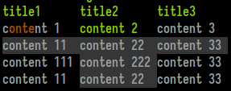
Consists of a title line with an emphasis style and a grid of width-justified cells. Each cell can be styled individually (see Text below) and also marked as "selected". Marking adjacent cells as selected can create a "selected row" effect.
Example from the Rust SDK (renders the screeshot above):
#![allow(unused)] fn main() { let table = Table::new() .add_row(vec!["title1", "title2", "title3"]) .add_styled_row(vec![Text::new("content 1").color_range(0, 1..5), Text::new("content 2").color_range(2, ..), Text::new("content 3")]) .add_styled_row(vec![Text::new("content 11").selected(), Text::new("content 22").selected(), Text::new("content 33").selected()]) .add_styled_row(vec![Text::new("content 111"), Text::new("content 222").selected(), Text::new("content 33")]) .add_styled_row(vec![Text::new("content 11"), Text::new("content 22").selected(), Text::new("content 33")]); print_table(table); // will print this table wherever the cursor may be at the moment print_table_with_coordinates(table, 4, 5, None, None); // will print this table at x: 4, y: 5, the last two `Option`s are width/height }
Ribbon
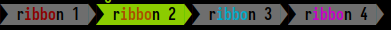
Ribbons are the UI elements used for tabs in the Zellij tab bar and for modes in the Zellij status-bar. They can be selected, which would change their background color, and can contain styled text themselves (see Text below).
Example from the Rust SDK (renders the screenshot above):
#![allow(unused)] fn main() { print_ribbon_with_coordinates(Text::new("ribbon 1").color_range(0, 1..5), 0, 0, Some(12), None); print_ribbon_with_coordinates(Text::new("ribbon 2").color_range(1, 1..5).selected(), 12, 0, Some(12), None); print_ribbon_with_coordinates(Text::new("ribbon 3").color_range(2, 1..5), 24, 0, Some(12), None); print_ribbon_with_coordinates(Text::new("ribbon 4").color_range(3, 1..5), 36, 0, Some(12), None); }
Nested List
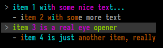
A nested list is the UI element used in the Zellij session-manager. It is a list with possibility indented lines to an arbitrary level. Each line can be selected (multiple lines can be selected as well), and each line can be styled individually (see Text below).
Example from the Rust SDK (renders the screenshot above):
#![allow(unused)] fn main() { print_nested_list_with_coordinates(vec![ NestedListItem::new("item 1 with some nice text...").color_range(1, ..).color_range(3, 10..25).color_indices(1, vec![8]), NestedListItem::new("item 2 with some more text").indent(1).color_range(0, 1..15).color_indices(1, vec![8]), NestedListItem::new("item 3 is a real eye opener").color_range(2, ..).color_range(3, 5..20).color_indices(1, vec![8]).selected(), NestedListItem::new("item 4 is just another item, really").indent(1).color_range(0, ..).color_range(1, 1..15).color_indices(1, vec![8]), ], 1, 1, None, None); }
Text
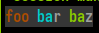
While this element can be rendered on its own, it's mainly used inside other elements for styling.
A Text element can be selected - which will be interpreted in the context of the element it resides in, generally changing its background in one way or another.
A Text element can also have indices. These indices can be one of 4 colors (preset depending on the user's theme) assigned to characters or ranges inside the element. This can be especially useful when incorporated with fuzzy finding.
Example from the Rust SDK (renders the screenshot above):
#![allow(unused)] fn main() { let text = Text::new("foo bar baz").selected().color_range(0, 0..=2).color_range(1, 3..=5).color_range(2, 7..=9); print_text_with_coordinates(text, 0, 0, None, None); }
The Protocol
Note: This section discusses the private DCS ANSI serialization protocol used to represent the above components. It could be of interest to SDK authors, but plugin developers are encouraged to use the SDK abstractions instead.
An example component can look like this: (<ESC>, represents the escape character)
<ESC>Pzribbon;27,91,49,109,60,27,91,51,56,59,53,59,57,109,110,27,91,51,57,59,51,56,59,53,59,48,109,62,32,82,69,83,73,90,69<ESC>\
The first part of the sequence, <ESC>Pz is the DCS representing the beginning of a Zellij UI element, followed by the clear-text element name. Following is a semi-colon (;) separated list of items to be interpreted according to context. In the above case there's only one item representing a utf-8 encoded byte-string which is the ribbon's contents (the bytes separated by commas). Finally, the string terminator <ESC>\ representing the end of the UI element.
Coordinates
Each component can have an optional coordinates string, placed as the first element in the semi-colon separated list directly after the component name. Example:
<ESC>Pzribbon;2/2/10/5;114,105,98,98,111,110,32,49<ESC>\
Here, the coordinate string 2/3/10/5 instructs us to render the ribbon at x: 2, y: 3, width: 10, height: 5. The width and height are optional, so may be empty (eg. 2/3//).
Selected
If a utf-8 separated byte list begins with a clear-text x, it will be considered "selected". Eg.
<ESC>Pzribbon;x114,105,98,98,111,110,32,49<ESC>\
Opaque
If a utf-8 separated byte list begins with a clear-text z (note: must follow Selected is both are present), it will be considered "opaque". Eg.
<ESC>Ptext;z114,105,98,98,111,110,32,49<ESC>\
This indicates that the UI component should use an opaque background, defaulting to the user's black theme color. Otherwise it will be considered transparent and use no background (when possible).
Opaque components are best used as part of status bars, transparent components when one wishes to represent bare text (for example, in help text).
Indices
A utf-8 separated byte list can be preceded by a dollar ($) separated index list representing colored indices. Each element within the dollar separated list can contain zero or more indexes (separated by commas) which will be colored in the desired index color (the colors themselves being determined by the user's theme).
Example:
<ESC>Pzribbon;2/2/10/;1,2,3,4$5,6$$7$114,105,98,98,111,110,32,49<ESC>\
Here, indices 1, 2, 3 and 4 will be colored in index color 0 while 5 and 6 will be colored in index color 1. Index color 2 is empty, so no elements will be colored using it, and element number 7 will be colored in index color 3.
Indentation
In the context of a Nested List, elements can be arbitrarily indented. This is done one or more pipe (|) characters preceding the utf-8 byte list.
Example:
<ESC>Pznested_list;105,116,101,109,32,51;|105,116,101,109,32,52;||105,116,101,109,32,53,32,108,115<ESC>\
Each item in a Nested List is represented as a utf-8 byte array separated by semicolons. Here, the first item will not be indented, the second item will be indented once, and the third item will be indented twice.
Upgrading a Plugin
Zellij plugins are backwards compatible - meaning that a plugin compiled for an older version of Zellij should always run fine on a newer version of Zellij.
The plugin API however might break every now and then for plugin code that has not been compiled for the current version. We try to minimize these occurrences as much as possible.
Plugin Aliases
Plugin aliases are a dictionary between an arbitrary string (eg. filepicker) and a non-alias plugin url, with optional plugin configuration. They can be configured in the Zellij configuration file under the plugins block.
Here's the default aliases:
plugins {
tab-bar location="zellij:tab-bar"
status-bar location="zellij:status-bar"
strider location="zellij:strider"
compact-bar location="zellij:compact-bar"
session-manager location="zellij:session-manager"
welcome-screen location="zellij:session-manager" {
welcome_screen true
}
filepicker location="zellij:strider" {
cwd "/"
}
}
With this plugins block, whenever the bare tab-bar is used to refer to a plugin (be it in a layout, from the command line, from a keybinding or from another plugin), Zellij will translate it to the internal zellij:tab-bar url. Whenever the bare filepicker url is used to refer to a plugin, Zellij will translate it to the built-in zellij:strider url will be used with the cwd "/" configuration.
Aliases can be added to this block or changed to swap the default built-in plugins to other implementations. Removing the default aliases entirely might cause Zellij not to function as expected.
When swapping the default aliases for custom plugins, it's important that these plugins implement the basic contract Zellij (and indeed, other plugins) expect of them. The following sections describe the contract for each default alias.
Here's an example on how to use the plugin alias in a layout:
layout {
default_tab_template {
children
pane size=1 borderless=true {
plugin location="compact-bar"
}
}
}
A note about cwd
When an alias defined a cwd for its plugin (such as the filepicker example above), Zellij will add the caller_cwd configuration parameter with the cwd of the focused pane in addition to the configured cwd above, instead of overriding the configured cwd of the plugin. This is so that plugins may provide a nicer user experience to their users and still have the desired cwd configuration of the alias.
The tab-bar Alias
This alias, by default translated to the internal zellij:tab-bar plugin url, represents the tab bar loaded on the top line of the default layout.
Contract
Zellij loads this tab bar with a height of 1 and a width the size of the user's full screen. Zellij has no other expectations from this plugin, even though users will probably expect at least the tabs to be shown.
The status-bar alias
This alias, by default translated to the internal zellij:status-bar plugin url, represents the status-bar loaded in the default layout on the bottom of the screen.
Contract
Zellij loads this status bar with a height of 2 and a width the size of the user's full screen. Zellij has no other expectations from this plugin, even though users will probably expect at least the input modes and their status be shown.
The strider alias
This alias, by default translated to the internal zellij:strider plugin url, is the default Zellij filesystem explorer.
Contract
Zellij loads this plugin in the strider layout with a width of 20% of the user's screen and a the full height of the user's screen minus 3 (one for the tab-bar and two for the status-bar). Zellij has no other expectations from this alias, but users will probably expect it to at least show a list of files in the current directory.
The compact-bar alias
This alias, by default translated to the internal zellij:compact-bar plugin url, represents the compact-bar loaded in the compact layout on the bottom of the screen.
Contract
Zellij loads this compact bar with a height of 1 and a width the size of the user's full screen. Zellij has no other expectations from this plugin, even though users will probably expect at least the input mode and the tabs be shown.
The session-manager alias
This alias, by default translated to the internal zellij:session-manager plugin url, represents the session-manager loaded by default with Ctrl o + w.
Overview
The session manager provides a centralized interface for managing all Zellij sessions. It is loaded as a floating pane as part of the default keybindings.
Features
The session manager allows the user to:
- Switch between active sessions - Browse and switch to any running session
- Resurrect exited sessions - Bring back previously closed sessions with their full layout and commands
- Start new sessions - Create new sessions with optional names and layouts
- Rename the current session - Change the name of the active session
- Disconnect other clients - Disconnect other users connected to the current session
- Kill and delete sessions - Kill active sessions or permanently delete exited sessions
- View session metadata - See tab counts, connected clients, and other session information
- Web sharing controls - Start/stop the web server and manage sharing settings from within the session manager
Contract
Zellij loads the session-manager as a floating pane. Plugins implementing this alias should expect to be loaded in floating mode and should provide a navigable interface for the features listed above.
The session-manager is a built-in plugin and can be replaced by specifying a different plugin URL for the session-manager alias in the configuration.
The welcome-screen alias
This alias, by default translated to the internal zellij:session-manager plugin url with the welcome_screen true configuration, is loaded on startup when the built-in welcome layout is loaded with zellij -l welcome.
Contract
Zellij loads the welcome-screen fullscreened without any other UI. It expects the plugin to close itself (and thus the session) once the user starts a new session, switches to a new session or resurrects an exited session.
User expectations
Users will likely expect the welcome-screen to:
- Allow them to attach to an existing session
- Allow them to resurrect an exited session
- Allow them to start a new session
The filepicker alias
This alias, by default translated to the internal zellij:strider plugin url with the cwd "/" configuration, is used by various plugins to allow users to traverse their filesystem and select files or folders for various purposes.
For example, the session-manager and welcome-screen use the filepicker to allow users to choose the working directory for the new session they would like to start.
Contract
Zellij loads the filepicker using a pipe. It sends it a private message with the filepicker message name.
If the message originates from another plugin
Zellij expects the filepicker to:
- Open a new pipe with the originating plugin's ID (it receives this ID as part of the
PipeMessage) as its destination. - The message name should be
filepicker_result - The message
argsshould be the same args sent in the original message (if any). - The message payload should be the path the user chose as clear text.
If the message originates from the CLI
Zellij expects the filepicker to:
- Block the CLI pipe input to give the user time to choose a file using
block_cli_pipe_input. - Output the the path the user chose as clear text with the
cli_pipe_outputcommand. - Unblock the CLI pipe input once the user chose a path with
unblock_cli_pipe_input.
User expectations
The user will likely expect the plugin to either close itself or hide itself once the file has been chosen, so their focus will return the pane which originated this request (be it another plugin or a terminal if this request was made through a CLI pipe).
Example
See the strider plugin's implementation.
Example Plugins
harpoon

harpoon enables quick navigation to your favorite panes.
You can use a to add the current pane to your harpoon list. You can navigate harpoon using Up,
Down, or using vim navigation. To go to the pane you just press Enter.
jbz

jbz simply spawn all your just commands wrapped in bacon, each one in a new pane.
Monocle

Monocle is a fuzzy finder for file names and their contents.
It can
- Open results in your
$EDITOR(scrolled to the correct line), as floating or tiled panes. - Open a new terminal pane to the location of the file, as a floating or tiled pane.
- Ignore hidden files and respect your
.gitignore.
If you press ESC or Ctrl c, it will hide itself until you call it again.
Multitask

This Zellij plugin is a "mini-ci". It allows you to specify commands that will run in parallel, keeping track of completed commands and their exit status. Only progressing to the next step if all the commands in the previous step succeeded.
Did one command fail? No problem! Fix the issue, re-run it with ENTER and the pipeline will continue.
room

room is for quickly searching and switching between tabs.
You can use Tab, Up, or Down to cycle through your tab list and then press Enter to switch
to the selected tab. You can start typing to filter the tab list and you use Esc or Ctrl + c to exit.
zellij-forgot

zellij-forgot is a plugin to quickly help you access and search through a customizable list of items. Can't remember your keybindings? Zellij-forgot can help you. Struggling to recall the names of all your cats? Zellij-forgot's got you covered!
zjstatus

zjstatus is a highly customizable status bar for Zellij. It has various widgets that can be styled to your liking, including such niceties as a system clock and even the ability to remove pane frames if there's only one pane on screen.
Developing a Plugin in Other Languages
Here's a list of other SDKs for developing Zellij plugins in languages other than Rust:
- Go
- Your SDK?
Session Resurrection
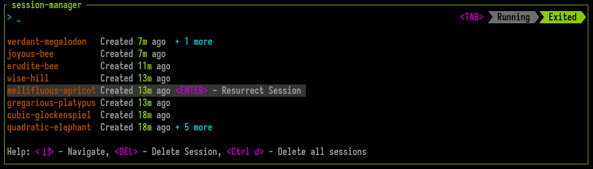
Zellij includes built-in session resurrection capabilities. This means that by default, each Zellij session is serialized and kept in the user's cache folder waiting to be recreated after an intentional quit or an unintentional crash.These exited resurrectable sessions can be listed through the CLI or the built-in session-manager. They can be resurrected through the CLI by attaching to them or through the session-manager by selecting them in the EXITED section.
What is Resurrected and how to Configure
By default, Zellij serializes the session layout (panes and tabs) and the command running in each pane (it will re-run them in command panes). Through configuration it's possible to have Zellij also serialize and resurrect the pane viewport and scrollback.
Zellij does not immediately run resurrected commands, but rather places them behind a "Press ENTER to run..." banner so as to prevent uncomfortable accidents with things like rm -rf.
session_serialization
To disable session serialization (and thus also resurrection), set session_serialization false in the config.
pane_viewport_serialization
When session_serialization is enabled, setting pane_viewport_serialization to true in the config will also serialize the pane viewport (the part of the terminal visible on screen).
scrollback_lines_to_serialize
When pane_viewport_serialization is enabled, setting scrollback_lines_to_serialize to 0 in the config will serialize all scrollback and to any other number will serialize line number up to that scrollback. Note that this might incur higher resource utilization (and certainly a higher cache folder usage...)
post_command_discovery_hook
When Zellij attempts to discover commands running inside panes so that it can serialize them, it can sometimes be inaccurate. This can happen when (for example) commands are run inside some sort of wrapper. To get around this, it's possible to define a post_command_discovery_hook. This is a command that will run in the context of te user's default shell and be provided the $RESURRECT_COMMAND that has just been discovered for a specific pane and not yet serialized. Whatever this command sends over STDOUT will be serialized in place of the discovered command.
Example:
post_command_discovery_hook "echo \"$RESURRECT_COMMAND\" | sed 's/^sudo\\s\\+//'" // strip sudo from commands
Resurrecting Sessions through the CLI
To list exited sessions, use zellij list-sessions (or zellij ls) for short:
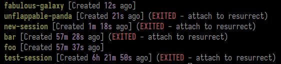
Then, in order to resurrect a session, one can attach to it. If you'd like to immediately run all resurrected commands and skip the "Press ENTER to run..." banner, you can issue the --force-run-commands flag.
Resurrecting Sessions through the session-manager
Sessions can also be resurrected and switched to from within a Zellij session using the session-manager. To do this, press <TAB> to toggle the EXITED sessions and select one with <ENTER>.
Permanently Deleting Sessions
Resurrectable sessions can be permanently deleted with the zellij delete-session or zellij delete-all-sessions CLI commands. They can also be deleted from the session-manager.
Session files in the cache
Zellij serializes the session data into a layout every 1 second and saves it to the system's cache folder. These layouts can later be examined, altered and even shared as is across machines. They can be loaded with zellij --layout session-layout.kdl just like any other layout. They are intentionally Human readable to facilitate their re-use.
Web Client
Zellij can also work in the browser, allowing users to share existing sessions and start new ones. This is useful for easy and secure remote access, and can also allow users to forgo their terminal emulator entirely if they wish.
This is done through a built-in webserver (turned off by default) that provides built-in authentication and session-management.
For a detailed walk through, see the screencast.
How to start?
The web server can be started from the share plugin (accessible by default with Ctrl o + s):

The web server can also be started from the CLI with:
$ zellij web
How to log-in?
For privacy and security, the Zellij web server requires users be authenticated before they can log in. To do this, one must create a "login-token". These tokens can be created from the "share" plugin (accessible by default with Ctrl o + s) or from the CLI:
zellij web --create-token
IMPORTANT: These tokens are hashed in a local database and so will only be displayed once. They cannot be retrieved, only revoked (either from the CLI or from the share plugin).
HTTPS?
The Zellij web server can work with a user provided SSL certificate to serve terminal sessions over an encrypted HTTPS connection. This is a hard requirement if listening on any interface that is not 127.0.0.1 but is very much recommended even when working on 127.0.0.1. (for more detailed instructions on how to do this, take a look at the screencast).
To set up an SSL certificate in the Zellij configuration:
web_server_cert "/path/to/my/certs/localhost+3.pem" // certificate
web_server_key "/path/to/my/certs/localhost+3-key.pem" // private key
URL scheme
By default, once started, the web server will listen on http://127.0.0.1:8082. When connecting to this address, users will be greeted with the welcome-screen, allowing them to start a new session, attach to an existing one or resurrect an exited one.
The web server works with a URL scheme, such that following the root URL with a session-name (eg. http://127.0.0.1:8082/my-amazing-session), will:
- Start a new session by this name if it does not exist
- Attach to this session if it exists
- Resurrect this session if it has exited
This means that if we bookmark this URL, we will be able to drop back in to exactly where we left off with this particular session - even if we've since shut down our machine completely.
Configuration
To configure the webserver, in the Zellij configuration:
web_server true // always start the web server on Zellij startup (default: false)
web_server_ip "0.0.0.0" // the IP to listen on, 0.0.0.0 is all (default: 127.0.0.1)
web_server_port 443 // the port to listen on (default: 8082)
web_server_cert "/path/to/my/certs/localhost+3.pem" // SSL certificate
web_server_key "/path/to/my/certs/localhost+3-key.pem" // SSL private key
enforce_https_on_localhost true // whether to enforce an https certificate being present also when listening on localhost (default: false)
base_url
The base_url option configures the base URL path for the web server. This is useful when running Zellij behind a reverse proxy that serves it under a subpath.
web_client {
base_url "/zellij" // default: none (served at root "/")
}
When set, the web server will serve all content under this path prefix (e.g., https://my-server/zellij/my-session). See also options.
It's also possible to configure the browser terminal itself:
web_client {
font "Iosevka Term" // default is "monospace" - deferring this decision to the browser/os
cursor_blink true // default is false
cursor_style "block" // possibilities: "block", "bar", "underline"
cursor_inactive_style "outline" // possibilities: "outline", "block", "bar", "underline"
mac_option_is_meta false // default is true
theme {
// NOTE: this is the theme of the terminal web client which is separate from Zellij's theme
//
// all values are optional and should be in the form of "r g b" (eg. 10 20 30)
background 10 20 30
foreground 10 20 30
black 10 20 30
blue 10 20 30
bright_black 10 20 30
bright_blue 10 20 30
bright_cyan 10 20 30
bright_green 10 20 30
bright_magenta 10 20 30
bright_red 10 20 30
bright_white 10 20 30
bright_yellow 10 20 30
cursor 10 20 30
cursor_accent 10 20 30
cyan 10 20 30
green 10 20 30
magenta 10 20 30
red 10 20 30
white 10 20 30
yellow 10 20 30
selection_background 10 20 30
selection_foreground 10 20 30
selection_inactive_background 10 20 30
}
}
Security Considerations and Recommendations
The Zellij web server is security and privacy conscious, enforcing HTTPS if accessed over the network and authentication at all times. It is however recommended to place the server behind a reverse proxy (such as nginx) if exposing it to an untrusted network (eg. the Internet). This is because the web server does not provide its own rate-limiting to mitigate denial of service and similar attacks.
In its security model, the web-server assumes that authenticated users are trusted. This is because the server can only serve terminal sessions of a single particular user on a single particular machine. This user by-definition has access to start/stop the web server itself, as well as access sensitive information on the machine by nature of this being a terminal session.
The web server only saves session-tokens (not the actual log-in tokens) in the browser as cookies, preventing javascript access to them and instead relying on http headers to authenticate them on the server side. Whenever an authentication token is revoked, all of its associated session tokens are revoked as well.
Remote Terminal Attach
In addition to browser-based access, Zellij sessions can be attached remotely from another terminal using zellij attach with an HTTPS URL:
$ zellij attach https://my-server:8082/my-session
This connects to the remote Zellij web server and attaches to the specified session directly in the local terminal, without requiring a browser. Authentication is required via the --token flag:
$ zellij attach https://my-server:8082/my-session --token <login-token>
Use --remember to save the credentials locally for 4 weeks (avoiding repeated token entry):
$ zellij attach https://my-server:8082/my-session --token <login-token> --remember
Use --forget to clear previously saved credentials for a remote server:
$ zellij attach https://my-server:8082 --forget
A custom CA certificate can be specified with --ca-cert:
$ zellij attach https://my-server:8082/my-session --ca-cert /path/to/ca.pem
Self-Signed Certificates
Self-signed certificates are rejected by default. To connect to a server using a self-signed certificate, the --insecure flag must be passed:
$ zellij attach https://my-server:8082/my-session --insecure
WARNING: The --insecure flag skips TLS certificate validation entirely. It should only be used for development or in trusted network environments.
Read-Only Tokens
In addition to regular login tokens, read-only tokens can be created. Users authenticating with a read-only token can view sessions but cannot send input or interact with them.
Read-only tokens can be created from the CLI:
$ zellij web --create-read-only-token
Or with an optional name:
$ zellij web --create-read-only-token --token-name "observer-token"
Read-only tokens are managed in the same way as regular tokens - they can be listed with --list-tokens and revoked with --revoke-token.
Server Status
The status of the Zellij web server can be queried from the CLI:
$ zellij web --status
This reports whether the server is online or offline, and if online, the base URL it is listening on.
Optional flags:
--timeout <seconds>- Timeout in seconds for the status check (default: 30)--ip <IP>- IP address to check (defaults to the configured address)--port <PORT>- Port to check (defaults to the configured port)
$ zellij web --status --timeout 5 --ip 0.0.0.0 --port 443
Mobile Support
The web client supports mobile browsers. Two behaviors are specifically adapted for mobile devices:
- Viewport Resizing: The terminal automatically resizes to match the real mobile viewport, accounting for dynamic changes such as the address bar showing/hiding and the on-screen keyboard appearing/disappearing.
- Touch Scroll: Vertical touch swipes are converted to terminal scroll events, allowing natural scrolling through terminal output.
This feature can optionally be disabled at compile-time
For those who are averse to this feature (even when it's disabled - which is the default), Zellij can be compiled completely without this feature or its dependencies by removing the web-server-capability compile-time flag. For convenience, Zellij also provides an additional pre-built binary compiled without this flag called zellij-no-web.
Compatibility
Issues
Please report issues here.
Known Issues
The status bar fonts don't render correctly:
This most likely is caused by a missing character in the font.
Fonts from nerdfonts can fix this problem.
Some Options:
| Package Manager | Name |
|---|---|
| apt | fonts-powerline |
| nix | nerdfonts |
Post installation the appropriate environment needs to be aware of the font.
Alt button mapping on Mac hardware (Darwin systems):
This can be mitigated individually on a terminal emulator level, see the FAQ for more information.
Pane frame title has issues with kitty:
This sadly seems to be an issue that can not be mitigated easily, more information can be found here.
Mouse issues:
If mouse_mode is turned on zellij handles these events, zellij provides an
escape mechanism in the form of the SHIFT Key, once it is pressed zellij lets
the terminal handle selection, clicking on links, copying, scrolling.
More information can be found here
Clipboard not working:
This is a known problem which mostly occurs in specific terminal emulators under Linux/OS X such as GNOMEs default Terminal, terminator, and more.
A workaround for this was added in zellij > 0.24.0 and enables the user to
specify a custom command that copies selected text to the system clipboard.
Refer to lines containing "copy_command" from the output of zellij setup --dump-config.
For technical background, refer to this issue and this merge request
Backspace sending ctrl-h (entering into Move mode)
This can happen in some terminal emulators (eg. Xterm). It can be remedied either on the terminal emulator side by getting the terminal emulator to send ^? instead of ^H, or on the Zellij side by remapping ctrl-h to some other key. Here's an example fix in xterm: http://www.hypexr.org/linux_ruboff.php
Weird colors in certain applications running inside Zellij
This might happen due to Zellij support of the extended "styled_underlines" feature. You can try disabling them by adding styled_underlines false to your config.